| 魔獣戦士ルナ・ヴァルガー外伝 | |
| 秋津 透 | |
| (2016) | |
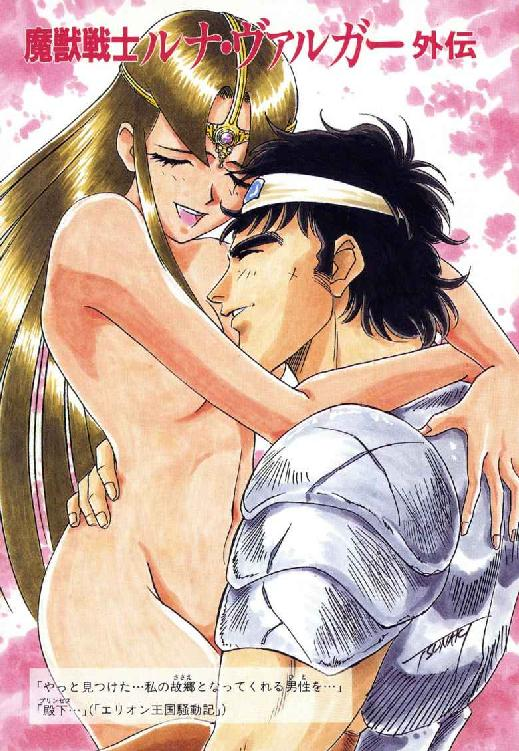
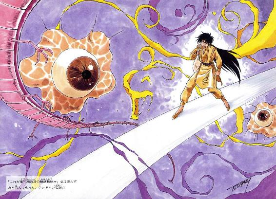
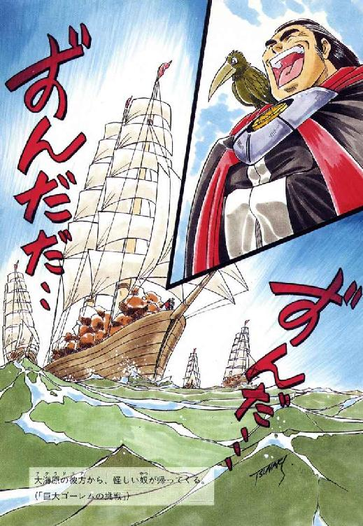
魔獣戦士ルナ・ヴァルガー外伝
秋津 透
本作品の全部または一部を無断で複製、転載、配信、送信したり、ホームページ上に転載することを禁止します。また、本作品の内容を無断で改変、改ざん等を行うことも禁止します。
本作品購入時にご承諾いただいた規約により、有償・無償にかかわらず本作品を第三者に譲渡することはできません。
本作品を示すサムネイルなどのイメージ画像は、再ダウンロード時に予告なく変更される場合があります。
本作品は縦書きでレイアウトされています。
また、ご覧になるリーディングシステムにより、表示の差が認められることがあります。
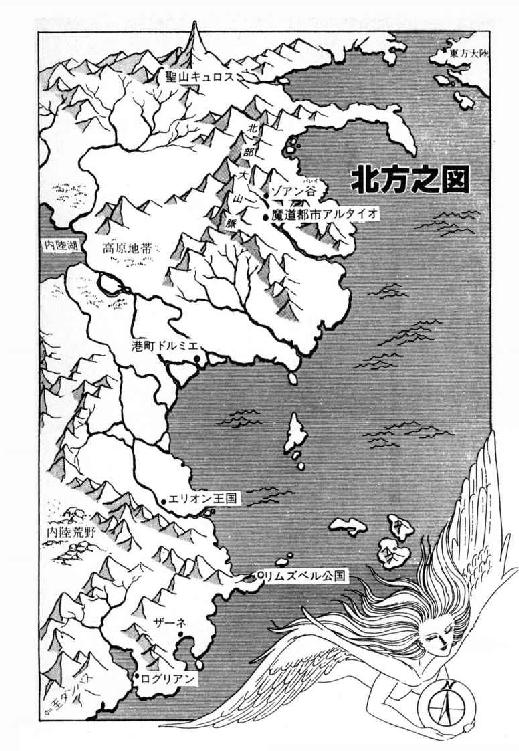
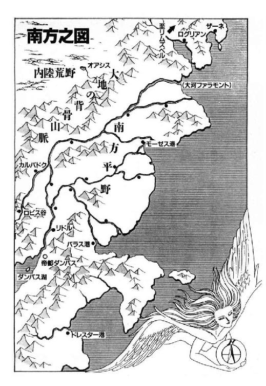
エリオン王国騒動記
プロローグ
異世界、異時間、異空間。
あるところに一つの大陸があり、その北部に、若く美しい王女に統治されている古い王国があった。
その王国の名はエリオン、統治者の王女はテオドラ・ド・エリオンという。今年十八歳になるテオドラ王女は、漆黒に近い濃赤色の髪と、濃淡さまざまに変化する朱色の瞳を持つ、神秘的な雰囲気の美女である。
しかし彼女は、単に若く美しいだけの、人形のような姫君ではない。実はテオドラ王女は、五歳の時から魔道都市アルタイオで修行を積み、伝説の大魔道士ザシャム尊師から直接魔道技術を授けられた、正真正銘の天才魔道士なのである。その魔力の水準は、一言の呪文でダンバス帝国軍四万の兵を麻痺状態にしたり、魔獣ヴァルガーを自らの創った亜空間に封じ込めたりという、正に驚天動地、偉大というか凄まじいというか、とにかく尋常でない事は間違いない。
そして、強力無比な天才魔道士を統治者に戴いた北王国は、帝国北征に始まる動乱に沸き立つ他の国々をよそ目に、太平の惰眠を貪っていた。どんな事態が起きようと、魔道士王女様さえ健在なら、北王国は安泰だ、と一般国民は誰もが思い込んでいた。
しかしもちろん、現実はそこまで甘くはなかったのである。
１
「おいっ、主人！ 果実酒が足りんぞ！ けちけちしないで、もっとどんどん持って来いっ！」
酔っ払った胴間声が店の中に響きわたり、酒場の主人は小さく溜め息をついた。それも当然、奥のテーブルを占領している五人の若い男たちは、どんなに派手に飲食しても、まともに料金を払った事がない。主人がそれでも黙っているのは、彼らがエリオン近衛隊の隊士だからだ。
「へっ、毎度毎度『たまたま所持金がないから、つけにしておけ』だってやがる。ったく、本当に所持金がねえってんなら、まだ我慢も出来るんだが......」
声には出さずに呟くと、主人は小僧に向かって顎をしゃくり、地下蔵に果実酒の瓶を取りに行かせる。まったく、所持金がないどころか、近衛隊士は全員エリオン上級貴族の子弟で、腐るほどの財産を持っているはずだ。それにも関わらず、彼らが取るにたらない飲食代を踏み倒すのは、弱い者いじめを楽しんでいるとしか思えない。
南方帝国が侵攻してきて以来、北王国の統治者テオドラ王女は、かなり本気で自国の軍制を整えようとしている。その手始めとして、現在ほとんど無為徒食の輩と化している上級貴族の若者を、近衛隊士として半強制的に軍務につかせ、ものの役に立てよう、という施策が行なわれた。
しかし、軍務につけたからと言って、不良青年が急に真面目になるものでもない。何しろもともと、王女殿下一人いれば国家は安泰、と高を括っている連中である。近衛隊士としての誇りを持つどころか、何でこんな無駄な事をやらせるんだよお、と不平を鳴らし始めたのは、ほとんど必然と言うべきだろう。
とはいえ、彼らが頼る上級貴族の親たちは、少なくとも面と向かっては、テオドラ王女にはまったく頭が上がらない。もちろん近衛隊士たち自身にも、魔道士王女殿下に真っ向から文句を言うほどの度胸は全然ない。と、いうわけで、彼らの鬱憤は、反抗出来ない一般市民相手に晴らされる事になる。
「......ったく、やってられんぜ。しばらく店を閉めた方が、上策かも知れんな」
顔を顰めながら、主人は小僧が持ってきた瓶を調べた。金も払わない相手に高価な酒を吞ませる気はないが、かと言って、下手に安酒なぞを出すわけにもいかない。贅沢に慣れた連中だけに、誤魔化しが効かないのである。
「よし、こいつなら、まあ、いいだろう」
小声で呟いて、主人は小僧に瓶を渡した。するとその時、入口の扉が大きな軋み音を立てる。見ると、長身の若い男が酒場の中に入って来るところだった。革の帽子に長外套をまとって長靴を履き、腰にやや短めの剣を吊っているが、甲冑は着ていない。日に灼けた精悍な顔にも見覚えがないし、多分、旅行中の交易商人か何かだな、と主人は判断した。
「糖蜜酒を、ジョッキで貰おう」
テーブルにつくと、男は落ち着いた声で注文した。
「それから、何か魚を焼いてくれないかな」
「ええと、魚と言うと、銀鱈の味噌漬しかありませんが」
主人の返答に、男は軽く苦笑してうなずく。
「ああ、それでいい」
「へい、承知しました」
糖蜜酒に焼き魚じゃあ、ほとんど船乗りの食事だな、と主人は調理場に引っ込みながら呟いた。もしかするとこの客、ドルミエかログリアンあたりの人間かも知れない。このところ、南方帝国の侵略を受けたログリアン人が、かなり大勢ドルミエに来ていると言うし......。
しかし、その瞬間、店の奥から不意に激しい怒声が上がり、主人は新来の客の事を忘れた。
「主人！ この果実酒はいったい何だ！ もはや半分、酢になりかかっているではないか！ 貴様はエリオン近衛隊士たる我々に、こんな安酒を吞ませようと言うのか！」
「そ、そんな、何をおっしゃいます。その果実酒は、うちの店では最高級の品です」
瓶を持って行った小僧が、うろたえた声を出して弁解する。いったいぜんたい何だってんだ、と呟いて、主人は奥のテーブルへと走った。既にかなり酔っている五人の近衛隊士は、一人を除いて椅子から立ち上がり、怯えきっている小僧を取り囲んで睨み据えている。そして、主人が慌てて寄っていくと、一人の隊士がいきなり剣を抜いて喚いた。
「やい、主人。貴様もこの酒が、この店の最高級品だと抜かすのか？ 我々を馬鹿にするのも、いい加減にしろっ！」
そう言って、隊士は小僧から強引に酒瓶をひったくり、力任せに床に叩きつけた。ばりーんっと派手な音をたて、瓶が砕けて果実酒がぶちまけられる。いきなりの無茶苦茶な狼藉に、主人は怒るとか怯えるより先に、むしろあっけにとられた表情になった。
「い、いったい、ぜんたい......」
因縁をつけて勘定を踏み倒す気か、と一瞬思ったものの、そんな面倒な真似をしなくても、近衛隊士が勘定を払った前例はない。すると、一人だけ椅子に座っている男が、にやりと笑って口をいれた。
「まあ、そう興奮するな。どんな安酒でも、それよりいい酒が置いてなければ、最高級品には違いない。ここは一つ酒蔵へ行って、この酒より上等な品物がないかどうか、確かめてみる事にしたらどうかな？」
「なるほど、それは妙案だ。おい、主人、聞いての通りだ。この安酒が、本当に貴様の店の最高級品かどうか確かめてやる。即刻、我々を酒蔵に案内せいっ！」
そう言って、隊士は主人の鼻先に、抜き身の剣を突きつける。なるほど、これが狙いか、と主人は内心で舌打ちした。出された酒を無料暴飲するだけでは飽き足らず、酒蔵に侵入して、秘蔵の酒を洗いざらいかっさらう気らしい。いいかげんにしやがれ、この馬鹿どもが、と主人は剣を突きつけている隊士を睨み返す。たとえばっさり斬られたって、そこまで勝手をさせてたまるものか。
「申し訳ありませんが、酒蔵は酒場稼業の生命、気安く人を案内出来る場所ではありやせん」
「なにいっ！」
一見実直そうで、やや気弱げに見える酒場の主人に、いきなり正面きって反抗され、近衛隊士は狼狽した声で叫んだ。
「貴様、このような安酒を、最高級品などといって出して置いて......」
「いやいや、それは小僧の勘違いでね。うちの店には、もっと高級な酒がいくらでもありますぜ」
そう言って、主人は半ば開き直り気味ににやりと笑った。
「しかし、いくら日頃贅沢してる近衛隊士さんたちでも、そこまで酔っ払っちまっちゃ、微妙な酒の味なんぞわかりますまい。そこで、どっちかってえと、わかりやすい味の酒を出しましたんで。まあ、どうしてもお気に召さないっておっしゃるんでしたら、もっと別の酒を運ばせますがね。酒蔵に押し入るのだけは、どうか御容赦いただけませんか」
「......うぬは、我々を愚弄するか！」
怒声と共に、正面の隊士が剣を振りかぶる。するとそこへ、主人の背後からごく落ち着いた声がかかった。
「やれやれ。どうやら、黙って見ているわけにも行かないようだな」
「何だ、貴様は？ 交易商人か？ 意気がって余計な真似をすると、しなくてもいい負傷をする事になるぞ」
席を立って歩み寄ってくる旅姿の男を、近衛隊士の一人がじろりと睨む。すると男は、にやりと不敵に笑った。
「そうは言っても、このままでは、いつまでたってもこっちの注文が通らない。さっさと埒をあけさせて貰おう」
「何を、たわごとを！」
言うが早いか、三人の近衛隊士が剣を抜く。酒場の主人に剣を突きつけていた隊士も、男の方に向き直った。しかし男は、剣の欛に手をかけようともせず、半ばあっけにとられている主人の方に声をかける。
「ちょっと、後退してくれないか。すぐに始末をつけるから」
「へ、へい......」
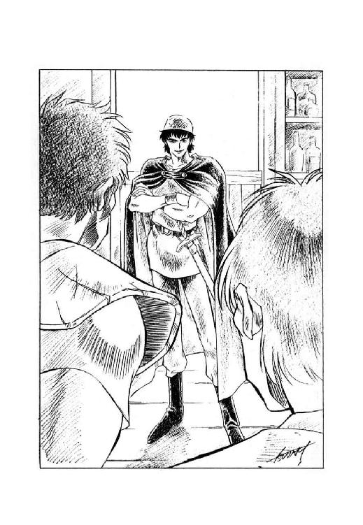
慌てて壁際に後退しながら、主人は息を詰めてその場の状況を見守る。近衛隊士は四人、いや、まだ座ったままの一人を入れれば、五対一なのだが、どういうわけか旅人の方が、やけに余裕ありげに見える。まるで、牙鼠が狼を取り囲んでるみてえだ、と主人は声には出さずに呟いた。
「どうした？」
相変わらず、自分の剣の欛には手も触れないまま、旅人はからかうような表情で、剣を構えた近衛隊士たちを見回した。
「丸腰の相手を脅す事は出来ても、剣を持っている俺には、手も足も出ないか？ え？ エリオン近衛隊士殿？」
「言わせておけばあっ！」
怒声と共に、隊士の一人が斬り込んだ。しかし旅の男は難なくその攻撃をかわし、突っ込んできた相手の腕を摑むと、続いて斬り込んでこようとする別の隊士に向かって投げ飛ばした。
どんがらがっちゃんっ、とひどい音がして、二人の隊士は重なり合って床に叩きつけられる。
「うわあっ！」
「お、おのれっ！」
狼狽気味の叫びを上げて、残る二人の隊士が斬りかかる。すると男はすっと身を沈め、一人の隊士の出足を払いながら、もう一人のみぞおちに拳を深々と叩き込む。ぐえっ、と蛙が潰れたような声を上げ、二人の隊士は酒場の床に転がった。
「やれやれ、あっけないと言うか何と言うか」
呼吸の一つも乱さず、旅の男は苦笑混じりに呟いた。床にへたりこんだ四人の近衛隊士のうち、何人かは完全に意識を失い、意識のある者も、恐怖に顔をひきつらせてすくみ上がっている。そのどうしようもない醜態を見やって、男は小さく肩をすくめた。
「こんな連中を戦士として使おうなんて、テオドラ殿下もどうかしてるよ」
「き、貴様、ただの交易商人ではないなっ。い、いったい、何者だっ？」
ただ一人残った、椅子に座ったままの近衛隊士が、震える声で叫ぶ。旅の男は、その顔を見返してにやりと笑った。
「交易商人だ、なんて言った覚えはないがね。俺の名はカーライル。リムズベル公国で、戦士長をしている」
「リムズベルの、戦士長だとっ!?」
近衛隊士の整った容貌が、惨めなほどに醜く崩れる。どうやら、あらゆる意味でとんでもない相手に喧嘩を売ってしまったらしい。
「なんでリムズベルの戦士長が、こんな酒場にいるんだ......」
「さて、俺は名乗ったぞ。今度は、そっちが何者か聞かせて貰おうじゃないか、エリオン近衛隊士殿？」
そう言って、カーライル戦士長は、近衛隊士をぐいと睨んだ。蒼白になった近衛隊士は、わずかに相手を見返したが、すぐに力なく顔を伏せ、小さい声で答える。
「私はエリオン近衛隊分隊長ジョージ・レミントン。軍務大臣レミントン卿の弟だ」
「ふん。軍務大臣の弟が、取り巻きを引き連れて酒場で悪さをしているのか。俺の国だったら、その場で袋叩きにされるところだぜ」
いまいましげに呟くと、戦士長は近衛隊士に向かって厳しい口調で告げた。
「いいか、レミントン分隊長。そこらでだらしなく伸びてる取り巻きどもを連れて、すぐに酒場から出ていくんだ。おっと、その前に、きっちり勘定を払うのを忘れるんじゃないぞ。主人、こいつらの勘定は、いったい、いくらになるんだ？」
「へい、今までお貸しした分を全部合わせて、ちょうど金貨百枚になります」
主人が愛想の良い声で答え、分隊長は目を剝いた。
「そ、そんな大金、持ち歩いてるわけがないだろう。いや、これは本当だ。いますぐ払えと言われても、それは無理だ」
「それなら、とりあえずの所持金を、全部こちらにお支払い下さい。それから、不足の分は、剣と御召し物をお預かりする事に致しましょうか。もちろん、後でお金が戴ければ、品物はお返し申し上げます」
あくまで丁寧な口調で言いながら、酒場の主人は近衛隊士たちの剣を取り上げ、服をかっ剝ぎ、懐に手を突っ込んで財布を奪う。レミントン分隊長は、憤怒と屈辱でひくひくと表情をひきつらせるが、カーライル戦士長が横で睨んでいるので何も言えない。そして間もなく、彼自身も剣と財布と服を取り上げられ、取り巻き連中もろとも、ぶざまな姿で表に放り出された。
「御主人、あれはちょっと、やり過ぎだったんじゃないか？」
やがて運ばれてきた銀鱈を肴に、糖蜜酒をゆっくり吞みながら、カーライル戦士長は酒場の主人に声をかけた。
「おや？ 銀鱈が焼き過ぎでしたか？」
「いや、そうじゃなくて、近衛隊士の連中だよ。軍務大臣の弟が、身ぐるみ剝がれて放り出されたとあっちゃ、さすがに連中も黙っちゃいまい。何か、意地の悪い仕返しでも企んでくるんじゃないかな」
「まあ、そうでしょうね。もしかすると、今すぐにも隊士を率いて、殴り込んでくるかも知れません」
そう言って、主人は小さく苦笑を浮かべた。
「もっとも、奴等が酒蔵に押し入るのを拒絶した瞬間から、あっしはもう、しばらく商売は出来ねえだろうと覚悟してますからね。酒蔵は厳重に密閉しましたから、魔道の技でも使わねえ限り開けられねえし、酒蔵以外に値打ちのある財産はねえし。小僧はもう逃がしちまったし、気楽なもんですよ。あと、旦那が店を出たら、あっしもすぐに逃げます」
「そこまで考えてあるなら、今更俺が言う事もないな」
そう言って、戦士長も苦笑を浮かべた。
「それにしてもエリオンの貴族どもは、予想以上に腐ってるな。仮にもダンバス帝国の侵攻を受けたんだから、もう少し危機感があるかと思ったんだが」
「あっしが言うのも何ですが、旦那、それは無理ってもんですよ」
軽く肩をすくめ、主人が首を振る。
「何つったって、テオドラ王女様一人いらっしゃれば、ダンバスの蛮人が何万人押しかけてこようと、何の雑作もなく撃退出来るんですからね。それなのにわざわざ軍隊を整えるってんで、怠け者の貴族連中を徴用しても、まともに働くわけがありませんや」
「確かに、そうかも知れないな」
うなずいて、カーライル戦士長はじっと考え込んだ。彼の祖国にしても、もしもルナ公女殿下が魔獣と共に公国の防衛を引き受けていたら、エリオンと同様、戦士が存在意義を見失い、怠惰に流れる可能性も充分ありうる。
「もっとも、どんな事態になろうとも、うちの公女殿下たちは、戦士を無為に遊ばせとくような真似はしないだろうがね」
口の中で呟いて、戦士長は小さく苦笑する。実際、魔獣戦士がログリアンを壊滅させ、帝国の攻撃を受ける可能性が低下しても、リムズベルを治めるゼナ公女、ヴィーナ公女は、ちっとも一息入れようとはしない。海務卿ジャックや、カーライル戦士長を北方の各所に派遣し、魔獣戦士抜きでも、政治的に南方帝国に対抗出来る北方連合を組織しようと画策している。
「そのへんの積極性が、リムズベルとエリオンの違いか。それに、うちの公女殿下たちは、間違っても自分の配下が、市民に脅しをかけて回るような真似はさせないだろう」
テオドラ殿下は、どう見ても愚物とは程遠い女性だが、と戦士長は糖蜜酒を吞みながら呟いた。だが、統治者としての器量は、思ったほどではないのかも知れない。彼女がいかに天才的な魔道士で、一国の機構を凌ぐ魔力を備えていても、それとこれとはまったく別物だ。
と、その時、酒場の扉が勢いよく開いて、数人の近衛隊士が、剣を構えてどやどやと踏み込んできた。
「リムズベルの、カーライル戦士長だな」
「ああ。そうだ」
うなずいて、戦士長は隊士たちの背後を見やった。そこには案の定、レミントン分隊長が、やや顔を隠すようにして立っている。
「何の用だ？ 借金を払って、剣と服を返して貰いに来たのか？」
「黙れっ。貴様が本当にリムズベルの者か、それとも南方の諜者か、我らエリオン近衛隊が取り調べる。それに、そっちの酒場の主人も、諜者かどうか取り調べなくてはならん。二人とも、おとなしく我々に同行しろ」
硬い声で言うと、分隊長は配下の隊士たちに合図した。十人あまりの近衛隊士が店の中に踏み込み、戦士長と店の主人を連行しようとする。と、カーライルが素早く席を立ち、彼の腕を摑もうとする隊士をはね飛ばした。
「馬鹿どもが。こんな真似をする以上は、血を流す羽目になっても恨むなよ」
鼻で嘲笑しながら言い放つと、戦士長は腰の剣をすらっと抜いた。その鮮やかな身のこなしに、近衛隊士たちの包囲の輪が、たじたじっと二、三歩分広がる。
「き、貴様、手向かいするか！」
「当然だっ！ リムズベル公国にその人ありと知られたカーライル戦士長が、酒場の勘定を踏み倒す以外に能のない、腐れ貴族の馬鹿餓鬼どもに脅されて、おめおめ従うとでも思ったかっ！」
糖蜜酒の酔いも多少手伝い、カーライルは近衛隊士たちに向かって、威勢よく啖呵を切った。
「さあ、生命のいらない奴は、どっからでもかかってこいっ！ 今度は先刻と違って、一切手加減なしだからなっ。それともレミントン分隊長、お前さんがまず、部下に見本を示すかね？」
「うぬぬぬぬぬぬ......」
口惜しげに小さく呻いたものの、分隊長は前に出ようとはせず、戸口の近くに立って部下に命令を下す。
「何をしている！ さっさと引っ捕らえろ！ 手に余るようなら、斬り捨てても構わんぞ！」
「おいおい、誰が誰を、斬り捨てても構わないって言うんだ？」
にやりと笑って、カーライル戦士長は周囲の近衛隊士たちを見回した。その視線を受けた隊士たちは、一人残らずたじたじと後退する。何しろ、くぐって来た修羅場の数が違うのだ。しょせん太刀打ち出来るわけがない。
「お、おのれっ！」
憤慨しきった表情になって、レミントン分隊長は小さく唸った。しかし、やっぱり自分で前に出て行こうとはしない。
「ジャンセン、ローレンツ、ウィーバー、三人で一度にかかれ！ これは命令だ！ 三人でかかれば、やられるはずがない！」
「馬鹿が......」
分隊長の叫びに応じて、三人の近衛隊士がやや不安げに間合いを詰めてくる。そのぎこちない動きを見やって、やっぱり手加減しないとまずいかな、と戦士長は小さく苦笑した。
と、そのとき、ばさばさばさっと大きな羽音を立てて、茶褐色の有翼猫が店の中に飛び込んで来た。そして、澄んだ女性の声で、男たちに向かって呼びかける。
「カーライル戦士長、近衛隊士の皆さん。どうか双方とも、すぐに剣を引いて下さい。テオドラ王女殿下の御命令です」
「何と！」
愕然とした表情になって、近衛隊士たちは慌てて剣を鞘に収める。それを確認した上で、カーライルも自分の剣を下ろした。ちょっと拍子抜けしないでもないが、まあ、斬りあいをしないで事が済めば、とりあえずそれに越した事はない。
男たちが武器を収めたのを見届けて、茶褐色の有翼猫は、素早く戦士長の脇に降りて来た。そして身体をくるりと一回転させ、茶褐色の髪をおさげに編んだ小柄な少女に姿を変える。
「はじめまして、カーライル戦士長。私はテオドラ王女殿下の使い魔、有翼猫のポリーヌと申します。あなたをお迎えして、王宮まで御案内するように、王女殿下から命じられております。私と御同道いただけますか？」
「同行するのは構わないが、近衛隊士はどうするんだ？ このまま放って行こうって、言うんじゃないだろうな？」
剣こそ収めたものの、相変わらず周囲を遠巻きに取り囲んでいる隊士たちを見やって、カーライルは少女に訊ね返した。有翼猫の少女は軽くうなずき、あっさりとした口調で答える。
「もちろん、近衛隊士の皆さんには、私たちと一緒に王宮まで来て貰います。王女殿下は、この騒動の原因を明らかにして、然るべき処置を行なうとおっしゃっておられますから」
「ぬぬ......」
使い魔の言葉に、レミントン分隊長が目いっぱい渋い表情で、低く唸る。しかし、まさか今更、この場から逃げ出すわけにも行かない。
「それでは皆さん、参りましょう」
そう言って、ポリーヌは人間態のまま、すたすたと歩いて酒場を出た。むろん、その脇にはカーライル戦士長が並び、背後からは近衛隊士がずらずら続く。そして店から出る直前、戦士長は思い出したように酒場の主人を振り返り、金貨を一枚ぽんっと放った。
「御主人、糖蜜酒と銀鱈の勘定だ。これで足りるかい？」
「っと、余分になりますが」
いささかあっけにとられていた主人が、はっと金貨を受けとめて答える。するとカーライルは、にやりと笑って酒場を出て行った。
「余分はいらないよ。取っておいてくれ」
２
「市民の信頼を担い、他の兵の模範になるべき近衛隊士が、こんな醜態を晒しているようでは、まるで話になりませんね」
辛辣な口調で言うと、テオドラ王女は恐縮しきった表情の近衛隊士たちを、朱色の瞳でじろりと見据えた。
「ジョージ・レミントン分隊長。あなたと部下の隊士四人は、無銭飲食を重ねた上、剣を抜いて市民を脅し、その財産を強奪しようと図った。しかも、その場に居合わせたカーライル戦士長に狼藉を咎められると、職権を乱用して部下を動員し、戦士長を不当に逮捕しようとした。この事実に相違はありませんね？」
「お、お待ち下さい。王女殿下。それは、あの、誤解です」
さすがに狼狽した口調で、レミントン分隊長が抗弁する。
「私は別に、無銭飲食を行なったわけでも、市民の財産を強奪しようとしたわけでもありません。単に、行きつけの酒場で、つけ払いの飲食をしただけです。そして、その酒場の主人が、何のつもりかひどく悪い酒を出したので、酒蔵の管理はどうなっているのか、と叱りつけただけの事で、いったいどうしてそれが、脅しだの強奪だのという事になるのか、正直なところ判断に苦しみます。それに、カーライル戦士長殿に同行を求めた件については、市中の治安を守る近衛隊として、職務上当然の事と考えています。何しろ、戦士長殿が本物かどうか、その場で見極める手段はありませんし、失礼ながら戦士長殿の行動は、不審を持たれて然るべきものだったと思います」
「ほう、なるほど」
ものは言いようとはこの事だな、と戦士長は小さく苦笑した。この男、剣の技量はとにかく、舌先の技量はそれなりにあるらしい。しかしテオドラ王女は厳しい表情を崩さず、レミントン分隊長をきっと見据えた。
「釈明することがあるならば、聞きましょう。しかし、私を誤魔化せるなどとは思わないように。近衛隊士の不行跡については、表沙汰にはなっていませんが、いろいろな風評が私の耳に入って来ていますよ」
「はあ......どうも......」
あまりはっきりしない声を出し、分隊長は頭を下げた。そこへ追い討ちをかけるというか、止めを刺すような調子で、王女殿下が宣告を下す。
「とにかく、即刻事実関係を明らかにして、関係者の処分を決定します。レミントン分隊長以下、この一件に関係した近衛隊士は、処分が決定されるまで近衛隊屯所から外出しないように」
「承知いたしました、王女殿下」
分隊長は顔を伏せたまま答え、部下を連れて主君の前から退出した。テオドラ王女は、近衛隊士たちの背中をきつい表情で見据えていたが、やがてその朱色の瞳を戦士長の方に向ける。
「ところでカーライル戦士長、あらためてお伺い致しますが、エリオンにはいったい何の御用でいらっしゃったのですか？」
「一つには、伝言を持ってきました」
若い戦士長は、ごくあっけらかんとした口調で答えた。
「南方で、ドン・ドレスデンの率いる陸上海賊艦隊が、広域交易商人のカルバドク家と戦って撃破されたという情報が、リムズベルに伝わってきました。どうやら、ルナ公女殿下の魔獣が、カルバドク家に肩入れしたらしいんですが」
「そうですか」
やや冷淡な表情で、テオドラはうなずいた。陸上交易の要衝地エリオンの支配者である以上、彼女もドレスデンの陸上海賊艦隊の噂は聞き及んでいる。なかなか侮り難い戦力と機動力を保持していたらしいが、よりにもよって魔獣戦士が相手では、しょせん問題にもならなかっただろう。
「それで、陸上海賊の敗北が、北王国と何か関係があるのですか？」
「ええ。陸上海賊艦隊は、魔獣に蹴散らされはしましたが、完全に壊滅したわけじゃない。とはいえ、もはやカルバドク家と争うわけには行きませんから、南方で暴利をむさぼる事は出来ない。そこで彼らは、北方への進出を企てているらしいのです。もちろん、横暴無惨で聞こえたドレスデン一族のやる事ですから、進出してくるとなれば穏便に済むはずがない。この情報を察知したリムズベルでは、今まで以上に厳重な警戒体制が敷かれています」
戦士長は相手に気付かれないように、せいぜい真面目な表情を作って説明する。実はこの説明には、一部分、とんでもない大噓が含まれているのだ。
カルバドク市に侵攻したドン・ペドロ・カルロス・ドレスデンの陸上艦隊が魔獣戦士に敗れ、その後、配下の一部を北方に向かわせたのは、紛れもない事実である。しかし、その目的は、あくまでリムズベルの大怪獣こと魔獣戦士に動揺を与えるため、その本拠地にとりあえず一撃を加えてみようかという、いわば牽制作戦であった。実際、瘠せても枯れても（という表現がこいつほど不似合いな男も珍しいが）天下の陸上艦隊司令ドン・ドレスデン、一度敗北したぐらいで、稼ぎ場を失って放浪してしまうほど脆弱ではない。この作戦は、カルバドク襲撃以前に陸上船を撃沈され、存在意義と面目を失った元グラウンドスラム号船長テリー・ゴディッシユの懇願により、彼の旧部下を中心に三百人程度の余剰人員を動員する事を許可したものにすぎなかった。艦隊司令にしてみれば、駄目でもともと、多少なりとも効果があれば純利益、という思惑だったらしい。
ところが、この牽制作戦は、発動直後にいきなり変質してしまった。リムズベルの海務卿仮面のジャックとドン・ドレスデンとの間に、秘密裡に相互不侵攻協定が結ばれたのである。
どうしてそんな曲芸が出来たかといえば、南方から沿海都市に戻っていたガルディ号船長キッド・スケルトンと、魔獣戦士に船を破壊されてログリアンで足止めを食っていた元フェザー号の船長カオス・ヤーマの二人が、リムズベルの麾下に入ったからである。彼らに密命を与えていたドレスデン一族の大総裁、４ＷＤことワルス・ワルサー・ワルプルギス・ワーワルスキー・ドレスデン老人が急逝したため、完全に立場が宙ぶらりんになってしまった二人は、このまま廃墟でぼーっとしているよりも、むしろ積極的に、昨日の敵に自分たちを売り込もうとしたわけだ。
結果的には、海賊一族出身の仮面のジャックがリムズベルの海務卿だったので、二人の再就職は予想以上にうまく行った。そして海務卿は、キッド船長を南方海賊島に、船を持たないカオス船長を陸上海賊の元へ派遣して、秘密裡に相互不侵攻協定を申し込ませたのである。現状では、時間を稼げば稼ぐほど、リムズベル即ち自分が有利になる、というのが海務卿の観測だった。
本来ドレスデン一族の大半は、強欲悪徳ではあるが、あくまで海上交易商人であり、危険の大きい賭けを嫌う。大総裁の急死によって小規模な混乱状態にあった南方海賊島では、とりあえず、この申し入れを承諾した。そして陸上艦隊司令も、もともとリムズベルを本格的に攻略できる自信があったわけでもないので、ひとまずこの協定を受け入れたのである。
ところがそうなると、収まらないのがテリー・ゴディッシュ以下、既に北方攻撃に出発した陸上海賊連中である。彼らにとっては、この遠征が面目挽回の最後の機会であり、協定が結ばれたから戻って来いと命じられたところで、はいそうですか、と簡単に諦めるはずがない。
そのへんの事情を充分承知しているドン・ドレスデンは、狡猾と言うか無責任と言うか、いきなり非常識な手段に出た。彼はカオス船長に向かって、既に北方遠征に出発した部隊については、自分は一切関知しない、と宣言したのである。つまり、ゴディッシュたちが何をしようが責任は取らないが、そのかわり、彼らが殲滅されても文句は言わない、という態度をとったのである。
これにはさすがのカオス船長も、いささかあっけにとられたが、彼女もドレスデン一族でちょっとは知られた女海賊、そのまま引っ込みはしなかった。すぐに北方遠征隊を追いかけ、リムズベルに手を出さないよう説得、というか脅迫することにしたのである。陸上船も与えられず、徒歩で北方を目指していた遠征隊は、急遽追いついてきたカオス船長からリムズベルの怖るべき魔道戦力についてかなり誇張された威嚇を受け、また、艦隊司令にあっさり見放された事を知って、明らかな動揺を表した。
しかし、陸上艦隊に戻ったところで些少の希望すらあるわけでもない。そこでゴディッシュたちが思いついたのは、リムズベル以外の北方の国に侵攻をかける事だった。それについてはカオス船長も別になんら異存はなく、まあ、せいぜい頑張る事ね、と激励の声さえかけて引き揚げてきたのである。
ところが、帰ってきた彼女の報告を受けたリムズベル本国では、ちょっとした論議が巻き起こった。陸上海賊の遠征隊がリムズベルを避けるとなれば、陸路を取っている以上、行き着く先は北王国しかない。その時、魔道士王女が魔力を使える時期なら何の問題もないが、そうでなければいささか危険な状況になる事もありうる。何しろエリオンには、王女殿下本人以外には、使える戦力がほとんど存在しないのである。
この事態に対して海務卿ジャックは、北王国が打撃を受ければ、むしろリムズベルの利益になると言い切った。これから大きく発展しようという新興国家にとって、強大な隣国というのは、決してありがたい存在ではない。しかし、リムズベルの第一公女ゼナ姫は、テオドラ王女に危機を知らせ、可能なら援助の戦力を出すよう主張した。彼女に言わせれば、本来遠征隊が目指していたのはリムズベルでしたのに、それを隣国に肩代わりさせてしまったわけですから、そのぐらいの支援を行なうのは当然ではないでしょうか、という事になる。
そして、実際に取られた方策は、海務卿と第一公女の意見の、ほぼ中間ぐらいに落ち着いた。つまり、リムズベルから戦力を割く事はしないが、代わりに戦士長を一人、危機を知らせるために派遣し、可能ならばエリオン防衛に協力する、というものである。もちろん、リムズベルを目指していた遠征隊が北王国に転進した事情は、テオドラ王女には内密にしておかなくてはならない。
と、いうわけで、この困難で、しかも半分人身御供みたいな任務を帯びて、カーライル戦士長は北王国にやって来たのである。別に強制されたわけではないが、はっきり言ってリムズベルの戦士長のうち、こんなややこしい任務に耐えられる者は彼以外には存在しない。この方策が決定された時点で、カーライル戦士長は、ああ、これは俺の役目だな、と、ごく自然に思い、自分から申し出て任務を引き受けたのである。彼は、既に何度かエリオンの宮廷に出向いた事があり、テオドラ王女の顔はもちろん、気質についても詳しく観察している。また、北王国内部の状況についても、可能な限りは調べあげてある。
「ある意味では、俺はエリオンを策謀にかけるために来た諜者だからな。近衛分隊長の奴が俺を拘束しようとしたのも、動機はとにかく、結果的には、それほど大馬鹿な真似でもなかったかも知れん」
表情に出ないよう注意しながら、戦士長は内心でにやりと笑う。と、テオドラ王女が、わずかに不審そうな声で訊ねた。
「カーライル戦士長。陸上海賊侵攻という貴重な情報をわざわざ届けていただいた事には、北王国を代表して心から感謝致します。ですけれど、それならどうして、直接王宮においでにならなかったのですか？ わざわざ街の酒場に入って、近衛隊士と紛争を起こされた意図を、お訊ねしたいと思います」
「近衛隊士の方々と揉めたのは、単なる偶然ですがね。実は、私のエリオン訪問には、もう一つ別の任務が付随しているのです。これを申し上げると、もしかすると王女殿下はお怒りになるかも知れませんが」
そう言って戦士長は、今度は表情に出してにやりと笑う。テオドラは軽く眉を寄せ、朱色の瞳をやや暗く光らせた。
「そこまでおっしゃったからには、これは是非、聞かせて戴きますわ。いったい、その任務とは何ですの？」
「こうなったら白状しましょう。私は、エリオンの内情を視察に来たのです。果たして北王国が、リムズベルの同盟者として問題がないか。問題があるなら、我々はどう対処したらいいのか。それを調査するよう命じられています」
無雑作な口調で言うと、戦士長はわずかに肩をすくめた。
「そして、正確な調査を行なうためには、私が来ている事をエリオン側に知られないうちに、城下を回ってみる必要があった。外部向けに化粧を済ませた北王国を見せていただいても、この場合、意味がありませんからね」
「それで、調査の結果はどうでした？」
カーライルが予期していたよりも、遥かに静かな声で王女が訊ねる。
「あなたが調査したところでは、我が国は貴国の同盟者として、何か問題があるでしょうか？」
「そうですね。充分な調査が出来たとは言えませんが、それでも、かなり重大な問題点が目につきました」
いったい王女殿下は、どの程度まで自分の国の状況を把握しているんだろうか、と思いながら、戦士長は相手のやや沈んだ朱色の瞳を見やった。そして彼女は他国者の俺に、どの程度の意見を求めているのだろう。そのあたりの観測を誤ると、冗談抜きで致命傷にもなりかねない。
と、その時、テオドラ王女が、きっぱりとした口調で言葉を切り出した。同時に瞳の色が、わずかに黄色みを帯びた、明るい炎紅色に変わる。
「お願いです、カーライル戦士長。エリオンの抱える問題点について、あなたの率直な意見を聞かせていただけませんか。これは恥を忍んで申し上げるのですが、この国には、私に対してそういった問題を指摘してくれる人間が、誰一人としていないのです」
「なるほど。やはりそうでしたか」
真面目な表情になって、戦士長は軽くうなずいた。同時に、周囲の気配をさりげなく窺う。現在謁見室にいるのは、王女と彼自身を除けば、使い魔の有翼猫一匹だけだ。他の国では考えられない事だが、護衛兵の一人さえも控えていない。それを確認した上で、カーライルは落ち着いた口調で話を始めた。
「率直な意見を、という御要望ですから、遠慮なく言わせていただきます。北王国の抱える最大の問題点は、正に、そこです。国民の全てが、とは申しませんが、少なくとも主君を助けて国政を担うべき貴族たちが、主君を怖れるばかりで全く敬愛していない。義務感もなければ責任感もなく、ただ単に、主君の機嫌を損ねずに甘い汁を吸う事だけを考えている。これでは、いかに主君一人が国を建て直そうと力を入れたところで、しょせん空転するだけです」
そう言うと、戦士長はテオドラ王女をじっと見据えた。
「王女殿下。率直に申し上げますが、あなたは余りに貴族たちを甘やかし過ぎたのではありませんか？ あなたが絶大な魔道能力の持ち主である事は、北方の民なら誰でも知っている。しかしそれでも、決して万能というわけではありますまい。これはあくまで風聞ですが、あなたには周期的に魔道能力が使えなくなる期間がある、という噂も流れている」
「カーライル戦士長。いったいどこから、そんな噂を聞いたのです？」
一瞬、鋭くまなじりを上げて、テオドラ王女が詰問する。
「ギルバート・エゼンが南方に旅だったと聞いていますが、彼が噂の出どころなのですか？ それとも、ルナ公女殿下が......」
「噂はしょせん、噂です。誰から聞いたわけでもなく、自然に耳に入ってくる。しかし、あなたの態度から判断すると、どうやらこの噂はかなり事実に近いらしい」
意識的に軽い口調でそう言うと、戦士長は小さく苦笑を浮かべた。
「まあ、魔道能力の使えない時期があろうがなかろうが、本質的には大差はありません。あなたも人間である以上、必ず能力の限界があるし、休息も取らなくてはならない。一国の運営の全てをたった一人で処理しようとしたら、どんなに優れた魔道能力の持ち主であっても、破綻するのが当然です。にもかかわらず、あなたは北王国の全てを一人で処理しようとして孤軍奮闘し、貴族たちはその状態に慣れきってしまった。それが、エリオンの最大の問題点でしょう」
「確かに、おっしゃる通りです。それは私も、重々承知しております」
再び沈んだ口調に戻って、テオドラ王女がうなずいた。
「しかし、この問題は簡単に解決できる種類のものではありません。いえ、もしかすると、どう対処しても解決できないのかも知れないのです。少なくとも私が主君である限り、エリオンの貴族たちが主君に協力的になる見込みは、ごく薄いと思われます」
「なぜです？」
今度はカーライルが、わずかに眉を寄せて訊ねる。
「あなたは、北王国の正統な王女殿下で、しかも強力な魔道能力まで備えている。方針さえ誤らなければ、敬愛される名君主になる事は、さほど難しいとは思えませんが」
「それは、戦士長がこの国の出身者でないから言える事です。北王国の貴族たちは、隙あらば私を主君の座から追い落とそうと企んでいます。私は彼らを信頼することができないし、彼らが私を敬愛する事もないでしょう」
ますます沈んだ口調で、美しい王女はきっぱりと断言する。いったいどういう事情なんだ、とカーライルは軽く首を傾げた。よく、主君を殺して取って代わった権力者が、自分も家臣に殺されるのではないかという猜疑心にとらわれ、最後は狂気のようになる、などという話を聞いた事があるが、彼女の場合はそうとも思えない。
と、不審そうな戦士長に向かって、テオドラ王女が思い詰めたような声を出した。
「カーライル戦士長。これは私の、いえ、北王国の秘事で、本当は他国の方に話せるような事ではないのです。しかし、詳しい事情を説明しなければ、あなたにも、リムズベルの方々にも、我が国が抱えている問題の本質を、決して理解してはいただけないでしょう」
「わかりました。これから伺う事は、然るべき相手に報告する以外には、絶対に他人に洩らさないと誓います」
そこは、リムズベルの戦士長の中で最も機転が利くといわれたカーライル、即座に王女の意図を察知して、目いっぱい厳粛な表情で誓言する。テオドラ王女は、決意と不安が微妙に入り混じったような表情で相手の顔を見やっていたが、やがて意外に淡々とした調子で話し始めた。
「まず最初に、私が五歳の時に何があったか、それから説明しなくてはならないでしょう。私は確かに北王国の王女なのですが、実は同時に、エリオンの貴族全員から憎まれ、排斥されて死んだ女性の娘なのです」
３
テオドラ王女の父、エリオン国王ジュリアス七世には二人の王妃がいた。一人はエリオンの有力貴族クインティン家の息女ビアンカで、彼女は二人の王子を産んでいた。もう一人は沿海都市の有力な成員ザーネ市から、政略的な意図を持って輿入れしてきたカテリーナという名の女性で、彼女がテオドラ王女の母である。
古い伝統を誇る北王国の王家が、彼らから見れば新興の沿海都市から王妃を迎えたのは、その前年、ザーネ市の傭兵軍がエリオン王城を陥落寸前に追い込み、屈辱的な条件で講和を結ばざるを得なかったからである。その講和条件の一つに、エリオン王家とザーネ市の政略婚姻が含まれていたのだ。
こんな状況で、ザーネ市から来た王妃がエリオン側に歓迎されるはずがない。しかも彼女は気の強い性格で、かなり傍若無人な振る舞いが多かったようだ。カテリーナが輿入れして間もなく、恋敵に当たるビアンカ・ド・クインティンが急逝しているが、これはザーネ女が毒殺したのだと、エリオン宮廷ではもっぱら噂された。
その噂が事実だったかどうかは、いまだに明らかにされていない。しかしそれから数年後、彼女が産んだ王女が五歳になった時、カテリーナ・ド・ザーネがビアンカの産んだ二人の王子を毒殺しようとして失敗したのは、どうやら事実だったようだ。
この年の初頭に、彼女の実家ザーネ市は、沿海都市の主導権をめぐってジェルモン市と争い、手痛い敗北を喫している。そのため、北王国では南からの圧迫が弱まり、王子たちを奉じる貴族たちが、声高に王妃排斥を主張し始めた。この趨勢に危機感を覚えたカテリーナは、起死回生の手段として、王子暗殺を企てたのである。しかし、この陰謀は、密告者が出てあっさり露見し、王妃は暗殺のために用意していた毒薬を、自らあおって生命を絶った。
「ザーネ市に対する配慮から、父は対外的には母の死の真相を伏せました。しかし、北王国の貴族は全員、母が何をしようとして、なぜ死んだか承知しています。そして残された私は、たった一人で魔道都市へ追いやられました。要するに、棄てられたのです」
ごく淡々とした口調で、テオドラ王女は言葉を継ぐ。しかしその瞳は彼女の情念を映してか、血のような深紅に光っている。
「北王国には、生きていられては困るが殺すわけにもいかないような、ややこしい立場の王族の子供を魔道都市に棄てる、という習慣があります。いったん魔道都市に出された者は、ほとんど死んだと同様にみなされ、王位を継ぐことができないのはもちろん、大抵の場合、二度と故郷に戻れません。また、棄てた子供が魔道都市でどういう生活を送るか、故国は完全に無関心ですから、よほど運が良くない限り、生きていくのが精一杯の状況に置かれる事になります。だから、魔道都市に棄てられた北王国王族の子弟は、記録に残っているだけで二百人以上いるのですが、魔道士の資格を得ることができたのは、私が三人目。運が良かった、と言うべきなのでしょうね」
そう言って、王女はやや皮肉っぽい感じの微笑を浮かべた。
「でも、私が故国に呼び返されて統治者の座についた事情について、私の運が良かったから、と言ってしまっては、さすがにいささか不穏当かも知れません。一昨年の事ですが、北王国全域に正体不明の疫病が流行して、私にとっては異母兄に当たる二人の王子も、父の国王も、続けざまに急逝したのです。死の床で、父は私を魔道都市から呼び返すように命じたのですが、その時には、北王国の誰一人として、棄てられた私が果たしてまだ魔道都市で存命しているかどうか、確認していなかったそうです」
「やれやれ、ひどい話だな」
戦士長は思わず、ごく低い声で唸った。それにしても、天下に名高い北王国の魔道士王女が王位に就くまで、ここまでとんでもない紆余曲折があったとは、全然知らなかった。てっきり、幼少の頃から国王後継者として魔道都市に留学し、何不自由ない境遇で魔道を習得して、当然の結果として王位を継いだのかと思っていたのだが。
「御苦労なされたのですね、王女殿下」
「まあ、そうですね。ですが、苦労した過去は、あまり思いだしたくありません」
小さく首を振って、テオドラは呟くような声を出した。
「それより、問題は現在につながる部分です。エリオンの貴族たちは、父の遺命に従って私を魔道都市から呼び戻しましたが、まさか私が大ザシャム尊師から直接に教えを受けるほどの魔道士になっているとは、夢にも思わなかったようです。彼らは私を傀儡にする気だったらしいですが、私の魔道能力の規模を知ってからは、必要以上に私を怖れるようになりました」
「そりゃあ、まあ、そうでしょう」
苦笑を混じえ、カーライルはごく軽くうなずいた。エリオンの貴族連中にしてみれば、現在の主君に恨まれる要因には事欠かない。地位の高い者ほど、いつどんな形で報復されるかと戦々恐々としているのではないか。
しかしテオドラ王女は、わずかに哀しげな表情になって、もう一度小さく首を振った。
「私は、いまさら過去の恨みを言い立てて、貴族たちに報復するつもりなどは全くありません。だいたい、私が報復をするつもりなら、魔道能力を習得してすぐに、故郷に乗り込んで父を糾弾しているでしょう。しかし、北王国の人々が、母と私に対して行なった処置は、明らかに彼らなりに正当な行為だったのです。恨みがないと言えば噓になりますが、それはしょせん、不当な逆恨みでしかありません」
「しかし、いくら王女殿下がそうおっしゃったところで、貴族たちがそれだけで安心するとは思えませんね」
意図的にやや無雑作な口調を使って、カーライル戦士長が指摘する。するとテオドラは、ごく素直にうなずいた。
「そうなのです。貴族たちは私の報復を怖れ、隙あらば、私を統治者の座から下ろそうと考えています。私が、自分の魔道能力周期を知られないよう神経質になるのも、彼らが私の弱みを握ったと思ったら、本格的に私に敵対する行動に出るのではないかと怖れているからです。そうなったら、結果がどうあれ、北王国は致命的な打撃を受けるでしょう」
そう言って、彼女は深く溜め息をついた。
「戦士長の言われる通り、本来、主君と家臣団が協力しなければ、国を維持する事は困難です。しかしエリオンでは、協力しあうべき両者が互いに信頼できず、猜疑心に満ちた視線で相手の出方をうかがっているのです。こんな状態で私のできる事は、とにかく魔道能力を発揮して、無理やりにでも自力で国を維持するしかありません」
「うーん......」
なるほど、こりゃあ確かに根が深い、と戦士長は眉を寄せて、低い唸り声を出す。ここまで厄介な因縁が絡み合っているとなると、説得などの穏健な方法では、なかなか解決がつかないだろう。かと言って、強硬な手段に出たところで、望ましい結果が出るとは思えない。
「これはもう、時間に解決させる以外ないかも知れないな......」
本当に王女殿下に報復する気がないのなら、いつかは貴族連中にも、彼女の真意が伝わるかも知れない。しかし問題は、その時まで彼女が破綻なく国を運営できるかどうかだな、と戦士長は声には出さずに唸った。
「一人でもいいから、信頼できる補佐役が彼女の脇に付いてりゃ、ずいぶん楽な状況になるはずなんだがな。唯一の側近が有翼猫というんじゃ、どうにもしようがない」
口の中で呟いて、カーライルは王女の傍に控えている茶色い有翼猫をちらりと見やった。人間の姿を取ることができて、それなりの知能があるとは言え、使い魔はしょせん使い魔にすぎない。むしろ、彼女が人間ではなく有翼猫を頻繁に使っている事で、貴族たちの疑心暗鬼が更に増している気配もある、と彼は思った。だが、王女がエリオン人を信用できない以上、彼女が当てにできるのは自分の有翼猫しかいない。
「まったくの悪循環だな......これは」
やれやれ、結局のところ八方塞りか、と戦士長は内心で小さく溜め息をついた。これが自国の状況でなくて良かった、と思わないでもないが、仮にもエリオンは同盟国でもあり、ここまで詳しい事情を明かされたからには、さすがにいまさら知らん顔を決めこむわけにも行かないだろう。カーライルは意識的に表情を引き締めると、テオドラ王女に向かってきっぱりと告げた。
「王女殿下。他国人の私に、エリオンの秘事を明かして下さった事、心から感謝致します。もちろん、北王国の問題については、本国のしかるべき者に報告して、国家としての対策を協議する事になると思いますが、それとは別に、私個人としても、殿下のために可能な限りの尽力を行なうつもりです」
「そのお志は、大変嬉しく思いますわ。カーライル戦士長」
そう言って、王女はどこか寂しげな微笑を浮かべる。
「ですが、北王国の貴族たちは、他国への警戒心が異様なほど強いのです。母が排斥されたのも、エリオンの王妃でありながら、実家とあまりに強く連係していたからに他なりません。ですから、貴国のご厚意には感謝致しますが、あまり彼らを刺激するような行動はとりたくないのです」
「わかりました。その点については、国家としても、私個人としても、重々慎むように配慮を致しましょう」
うなずいて、戦士長はやや大仰なぐらい恭しく頭を下げた。とは言うものの、今更慎んだところで手遅れじゃないかな、と彼は内心思っている。なにしろ、エリオン貴族の子弟で編成された近衛隊士と、あれだけ派手に喧嘩しているのだ。しかもその後、近衛隊士たちは叱責を受け、他国者の俺は、事実上王女と二人だけで長々と密談をかわしている。疑心暗鬼にとらわれた貴族連中にしてみれば、他国の男が王女を籠絡して近衛隊士を罠に陥とした、としか見えないだろう。
「王女殿下と貴族連中の関係が前もってわかってりゃ、もう少し手段もあったかも知れないが、今更そんな事を言ってみても始まりゃしないしな。まあ、貴族連中は、王女殿下を敬愛はしてなくても、大魔道士として怖れているらしいから、即座に彼女に対して直接行動に出る事はないだろう。だが、少なくとも俺が、連中にとって要注意人物になったのは間違いない。刺客の一人や二人ぐらいは、覚悟しておいたほうが良さそうだ」
もちろん声には出さずに、カーライル戦士長は呟いた。そして、彼のこの予想は、結果として半分的中して半分外れたのである。
一方その頃、近衛隊屯所に戻ったレミントン分隊長は、近衛隊長マッコール卿に呼ばれて、隊長執務室に出頭した。どうせ追加のお叱言だろう、と、うんざりした表情で扉を開けた分隊長は、そこに集まっている人物の顔ぶれを見て、思わず一瞬目を丸くする。
「兄上......それにエイブラムス卿閣下、サーウィット卿閣下まで......」
これはいったい、と呟いて、彼は狼狽した視線を室内にさ迷わせた。さほど広くもない近衛隊長執務室の中には、分隊長の実兄レミントン軍務大臣を始め、エイブラムス財務大臣、サーウィット貴族院議長が顔を揃えていたのである。
「入りたまえ、ジョージ・レミントン君」
執務室の扉を開けたまま、暫時あっけにとられていた分隊長に、サーウィット議長が穏やかな声をかけた。若い分隊長は慌てて扉を閉め、多少ぎくしゃくした動作で室内に歩み入る。すると、軍務大臣が太い眉をぐいと寄せ、腹立たしげな口調で弟を叱りつける。
「だいたいの事情は、近衛隊長から聞いたぞ。まったく、大事な時に間の抜けた真似をしてくれたものだな」
「も、申し訳ありません、兄上」
レミントン分隊長は、ほとんど反射的に身を縮め、頭を下げた。実兄とは言っても、軍務大臣とは二十歳近く年齢が離れており、彼にとっては厳格な家長以外の何者でもない。
「しかし、あの、酒場の一件につきましては、これは全くの誤解で......」
「黙れ。我々を相手に下手な弁解をしても、何の意味もないぞ」
完全に問答無用と言わんばかりに、軍務大臣が弟の言葉を無雑作にさえぎった。そして、思わず分隊長が絶句したところへ財務大臣が、やや高調子な声をかける。
「いや、わかっておる。わかっておるよ、ジョージ・レミントン君。言ってみればだな、君は王女殿下に嵌められたのだ」
「はあ？」
脈絡がわからず、近衛分隊長は再び目を丸くした。
「嵌められた、とおっしゃいますと......？」
「テオドラ王女殿下は、どうやらリムズベルと結託して我々を排斥する気になられたようだ。カーライルとか言う若造の戦士長は、いまだに王女殿下の元から出て来ない」
いまいましげに、軍務大臣が唸る。
「それでなくても南方蛮人の襲来以来、王女殿下は我々エリオン人が実戦の役に立たないと、激しく非難し続けておられる。そんな時に、近衛隊士が酒場で騒動を起こし、リムズベルの戦士長に叩きのめされた。殿下にしてみれば、これは決定的な事件だと思わんか？」
吐き捨てるように言うと、彼は年齢の離れた実弟を、きつい目つきで睨み据えた。
「要するに、お前の愚行が王女殿下とエリオン貴族の間に、決定的な破局をもたらしたのだ。どうやらお前は、事態の重大さにまったく気付いていないようだが」
「まあ、まあ。レミントン卿。いまさら弟君を責めても仕方ありますまい」
憤懣に満ちた表情の軍務大臣に、財務大臣が取り成し顔で声をかける。
「それに、たとえ弟君の一件がなくても、王女殿下は必ず何か口実を設けて、我々を排斥し、外国の勢力を引き込んだに違いありません。ちょうど殿下の母君が、沿海都市勢力と結託していたようにね」
「いずれにしても、このまま放置しておけば、早急に近衛隊が処分されるのは明白じゃ。そして、続いて、エリオン貴族全員の上を大粛清の嵐が吹き荒れるのも、まず間違いのない事じゃろう。王女殿下にしても、外国の戦力が当てにできるとなれば、御自分を追放した過去を持つ我々と、わざわざ共存せねばならん理由は皆無じゃからな」
貴族院議長が、重々しい声で唸った。
「しかし、我々とて、座して破局を待つわけには行かぬ。こうなってみれば、陸上海賊が押しかけてきているのは千載一遇の好機。エイブラムス卿の提案を、実行に移す以外あるまい」
「確かに」
眉根を寄せた軍務大臣が、苦渋に満ちた声を出してうなずく。
「エリオンの高貴な王女殿下を、陸上海賊如き雑輩の手に掛けさせ賜うのは、臣下として誠に忍びないものがあるが、事ここに及んではいたしかたあるまい」
「え、ええっ!?」
今までほとんど呆然としっ放しだったレミントン分隊長も、実兄のこの言葉にはさすがに仰天して叫んだ。
「王女殿下を、陸上海賊の手に掛けさせる、ですって!?」
「いかにも」
苦悩の色を見せる軍務大臣とは対照的に、まったく平然とした表情で、エイブラムス卿がうなずいた。
「若い君には理解しにくいかも知れないが、しょせん、テオドラ王女殿下と我々エリオン人は共存できないのだ。何しろ殿下は、いったん我々の手で魔道都市に棄てられたのだからね。そして、殿下の気性から考えて、その恨みをあっさり水に流せるわけがない。必ず、報復の機会をうかがっているはずだ」
そう言って、財務大臣は小さく首を振る。
「亡き国王陛下が、王女殿下を魔道都市から呼び戻せとおっしゃった時に、我々は精一杯反対したんだがね」
「し、しかし、財務大臣閣下。もちろん御承知の事とは思いますが、王女殿下は御自分の魔道能力で、南方蛮人軍四万を鼻先であしらった実績があるんですよ。陸上海賊がどの程度の戦力を備えているか存じませんが、殿下の魔道能力に対抗するような真似が、実際問題として可能なのでしょうか？」
半分正気を疑うような表情で、レミントン分隊長は要人たちを見回した。すると軍務大臣が、やや苛立たしげな口調で答える。
「可能だ。いや、可能なはずだ。殿下が魔道能力を発揮できない時期を狙いさえすれば、という条件はつくがな」
「これは以前から秘かに推察されておったのじゃが、どうやら王女殿下には、魔道能力を発揮できない時期が周期的に訪れるらしいのじゃ」
ごく穏やかな低い声で、貴族院議長が説明を継ぐ。
「その周期が何日置きに来るのかは、いまだ正確には摑めておらん。しかし、大ざっぱな見当なら何とかなる。我々の推測が正しければ、王女殿下は昨日から五日間程度、魔道能力を発揮できない時期に入っておるはずじゃ。むろん、これはあくまで推測じゃがな」
「しかし、もしその推測が外れたら......」
レミントン分隊長は、わずかに言葉を震わせて呟いた。すると財務大臣が、にやりと口元を歪めて応じる。
「もちろん、その危険があるから、わざわざ陸上海賊を使うのだ。もしも殿下が魔道能力を失う時期が確実にわかっているなら、そんな雑輩を使うまでもない。我々の手勢だけで、内密に事を行なえばそれで済む。しかし、万一推測が外れて、殿下が魔道能力を発揮した場合、我々が直接関与していては、それこそ収拾のつかない事態になってしまうからな。要するに、これは一種の安全策というわけだ」
そう言うと、エイブラムス卿は、得意げにくっくっと低く笑った。
「軍務大臣の承諾をいただいた時点で、すでに陸上海賊とは連絡をつけてある。計画の実行は、明日の夜半過ぎだ。とは言っても、我々がやらなくてはならない事は、城市の門を開いておくのと、市内に入ってきた陸上海賊の行動を妨害しないという、二点だけだからな。簡単だろう？」
「はあ......」
何となく丸めこまれたような表情で、分隊長は当惑気味にうなずいた。すると貴族院議長が、相変わらずの淡々とした調子で口をはさむ。
「そこで、近衛隊士の諸君に心得て置いて貰いたいのはじゃな、殿下の魔道能力が発揮されず、首尾よく陸上海賊の襲撃が成功した場合、絶対に王女殿下を逃がさないように、王宮を包囲してほしいのじゃ。そして、もしも殿下が脱出て来られたなら、問答無用で斬殺して貰いたい」
「問答無用で、斬殺ですか......」
これには、さすがに分隊長も息を吞んだ。ここまでの計画は、何となく自分とは関係のない次元で勝手に進行しているような雰囲気があったが、直接手を下して王女殿下を斬殺するとなると、そんな吞気な事は言っていられない。
しかし、貴族院議長は蒼白な顔色になった若者を見やって、ごく穏やかにうなずいた。
「そう、当然じゃよ。万が一にも、王女殿下が陸上海賊の襲撃を逃れなさったら、魔道能力が回復すると同時に、御自分を陥れた人間を悉く誅殺なさるじゃろうからな。ほれ、昔から、毒を食らわば皿まで舐めろと言うじゃろう。何事も、中途半端が一番いかん」
「まったく、議長閣下のおっしゃる通りだ。明日の晩は、くれぐれも失敗のないように頼むよ」
軽い口調で、財務大臣がつけ加える。と、そこへ、ほとんどその存在を忘れられていた執務室の主、近衛隊長マッコール卿が、聴き取りにくい声でぼそぼそと訊ねかけた。
「ところで、あの、リムズベルの戦士長については、どう処置すべきでありましょうか。あの男、ひどく王女殿下に気に入られたようですから、下手をすれば明晩も、王宮にとどまっているかも知れませんぞ」
「だとすれば、そやつも生かして王宮から出すわけにはいかんのう。王女殿下同様、陸上海賊どもが始末をつけられれば問題はないんじゃが。もしも連中が仕損じた場合は、近衛隊士諸君の手を煩わせる事になるじゃろうな」
呟くような調子でそう言うと、貴族院議長は近衛分隊長をじろっと見やった。
「貴君は、確か、そのリムズベルの戦士長に、酒場で散々な目に遭わされたんじゃったのう。明晩は間違ってもそのような事のないよう、心して手配りを願いまするぞ」
「はっ、必ずや諸卿のご期待に添えるよう、尽力したいと思います」
ジョージ・レミントン分隊長は、表情を引き締めてきっぱりとうなずいた。王女殿下を斬殺するとなると、さすがに多少気後れがするが、あの、くそ腹立たしい他国人の戦士長なら、自分から志願してでも殺らせて貰いたいぐらいだ。
「とは言え、戦士長は確かに腕が立つ。ただ単純に、陸上海賊を王宮に突入させて、脱出してくるのを待ち構えているだけでは、斬り破られる可能性がないとは言えない」
これは、何か策を用いる必要がある、と分隊長は口の中で小さく唸った。
４
「ぐふふふふ、どうやらついに俺たちにも幸運が回って来たようだな」
陸上海賊の北方遠征隊を率いる元グラウンドスラム号船長デリー・ディッシュは、城市の大門が約束通り開けてあるのを確認すると、前歯を剝き出して下品そのものの笑いを浮かべた。
「正面から攻めたんじゃ、とても歯が立たない城砦都市でも、内応者がいりゃあ、何の苦労もなく侵入できるってわけだ。いや、ありがてえ、かたじけねえ。がっはっはっは、かんらからから」
「船長、船長、満悦するのはまだちょっと早いんじゃねえですか？」
ゴディッシュ元船長の傍に控える手下が、渋い表情で苦言を呈する。
「これから城市に侵入して、王女を取っ捕まえて抹殺し、ついでに内応者の裏をかいて、王宮に根城を構えるまでは、吞気に笑っちゃいられませんぜ」
「おう、そうだったな。おめえの言う通り、まだまだ正念場はこれからだ。いっちょ、気合を入れていくぜ」
うむ、と大きくうなずいた元船長だが、大門をくぐるかくぐらないかの内に、またもにったりと下品に笑って手下に訊ねかける。
「だけどよ、その魔道士の王女ってのは、いってえどんな女なんだろうな。内応者の話じゃ、どうにも手に負えない暴君だってえが、こればっかりは片方の言い分だけじゃわからねえ。年齢が若くて美人なのは確からしいから、場合によっちゃあわざわざ抹殺するより、生かしておいて手なずけたほうが上策かも知れねえぜ。まあ、女なんてのは、王女だろうが魔道士だろうが、ものにさえしちまえば男に従順になるもんだからな」
「船長、船長、何を太平楽な事言ってんですか。捕虜の女に助平根性出して、睾丸片方蹴り潰されちまったの、まさか、忘れたわけじゃねえんでしょう？」
まったく懲りない男だねえ、と手下がうんざりした表情でたしなめる。
「だいたい肝心の魔道士王女が、本当に内応者の言う通り、魔道能力を使えない状態にあるのかどうか、まだ全然わかりゃしねえんですからね。もしも何かの手違いで、女に魔道能力を発揮された日にゃ、ものにするどころか、こっちの生命が危ないですぜ。なんせ、北方の噂が事実なら、あのリムズベルの大怪獣と、互角に張り合う大魔道士だってんですからね」
「馬鹿言うんじゃねえ。大怪獣と張り合える魔道士なんぞ、この世の中にいるもんか」
南方で魔獣戦士を実際に見ている元船長は、不愉快そうな表情で言い捨てた。しかしそれでも、多少は警戒心が発生したらしく、以降は無言でまっすぐ王城に向かう。途中、市中警戒のエリオン兵らしき人影と何回か行き合ったが、彼らは何も言わずに陸上海賊たちを通す。何しろエリオン兵は、軍務大臣の命令で、一般市民が侵入者を妨害しないよう出動しているのだから、当然と言えば当然だ。もちろん兵士たちは、詳しい事情などは知らされてはいない。
一方その頃、一般兵士よりは多少事情を知らされている近衛隊士たちが、王宮封鎖に取りかかっていた。戦闘部隊としての力量は並以下のエリオン近衛隊だが、その主要職務は王宮警備であり、王城の構造については王女殿下より詳しい。
「さて、これで封鎖は完了だ。誰であろうと、近衛隊士の目に触れずに、王城に出入りする事はできん。魔道を使わん限りはな」
隊士たちの配置を確認すると、近衛隊長はぼそぼそっと口の中で呟いた。
「もしも貴族院議長閣下の推測が誤りで、王女殿下が陸上海賊を魔道で撃退なさったら、近衛隊士は単に普段通り王宮警備を務めていただけ、という状況になる。陸上海賊の侵入を許した事で、叱責ぐらいは受けるかも知れんが、それ以上の問題はない」
そう言って、隊長は小さく溜め息をついた。三人もの上級卿から命じられた計画だから、あえて逆らうわけにも行かなかったが、彼にしてみれば王女殿下もやっぱり怖い。でき得れば、殿下に魔道能力を使っていただきたいものだ、と隊長は声には出さずに呟く。そうすれば、騒動は最小限で済む。
しかし近衛隊長がそう呟いている時に、彼の部下であるジョージ・レミントン近衛分隊長は、彼に無断で不穏な行動を開始していた。隊長の配置確認が済むが早いか、分隊長は三人の腹心を率いて持ち場を離れる。目指すは王宮の奥、王女の賓客扱いで滞在しているリムズベルの戦士長にあてがわれた部屋だ。
「まず戦士長の息の根を止めておかなくては、うっかり王宮封鎖もできないからな」
低く呟きながら、分隊長は王城の廊下を進む。正直なところ、あの凄腕の戦士長が死に物狂いで包囲を斬り破って来たら、近衛隊士を総動員しても、討ち取れるかどうか自信がない。それなら、陸上海賊が侵入して王城が騒然となる前に、秘かに暗殺してしまった方が確実だ。万一、王女殿下が魔道能力で陸上海賊を撃退した場合には、犯人は侵入者という事にして、何とかうまく誤魔化せばよかろう。
「よし、ここだ」
目指す部屋の扉を薄く開けると、分隊長は腹心の一人に目くばせする。近衛隊士は無言でうなずき、持参して来た香炉に火を入れて、部屋の中にそっと押し込んだ。そして素早く扉を閉め、ふっと小さく吐息をつく。
「これで、陸上海賊が侵入してくる頃には、戦士長は睡眠香の効果で、完全に意識不明になっているはずだ。そうなれば、いくら腕利きでも我々の手で簡単に殺せる。そして、下手人が我々か、陸上海賊か、王女殿下でも判断する事はできないだろう。もちろん、殿下がそれまで生きていればの話だが」
微かにひきつった笑いを浮かべて、レミントン分隊長が呟く。と、その背後で、心底うんざりしたような声がした。
「なるほど。わざわざ解説、ありがとうよ」
「な、なにいっ!?」
血相を変えて振り返った三人の近衛隊士は、カーライル戦士長が手にした長い棒で、あっさりぽかぽかと叩きのめされる。そして彼は、剣も抜けず蒼白になって立ちすくむ分隊長の喉元に、棒の先端をぴたっと突きつけた。
「やたらにエリオン人を殺しちゃ、王女殿下に悪いからな。手加減しやすいように棒を武器にしているが、もちろん棒でも人間は殺せる。何だったら、試してみるか？」
「な、なぜだ!? 貴様、この部屋にいたんじゃなかったのか!?」
目を剝いて呻く分隊長を見やって、戦士長は小さく苦笑する。
「エリオン貴族は外国人嫌いだと聞いたんでね。夜中に襲われないよう、勝手に部屋を変えさせて貰ったんだ。そんな事より、あんた、今、陸上海賊がどうのこうの言ってたな」
そう言うと、カーライルは苦笑を消して、精悍な表情で分隊長を睨み据えた。
「まさかとは思うが、あんたがた、陸上海賊を王都に引き込んだのか？」
「......そうだ。王女殿下を、陸上海賊の手に掛けさせようという陰謀だ。諸卿の説明では、殿下は今、魔道能力が使えない期間らしいが、確実な保証はない。だから陸上海賊を代行者にして、失敗しても取り返しがつくよう企んだんだ」
戦士長の鋭い眼光に見据えられ、分隊長は自分でも意外なくらいぺらぺらと、陰謀の内容を白状する。
「もうしばらくすると、陸上海賊が王城に侵入してくる。脱出路は近衛隊士が封鎖しているが、貴様なら簡単に斬り抜けられるだろう。逃げるんだったら、今の内だぞ」
「親切な御忠告、痛み入るぜ」
苦い表情で言い放つと、戦士長はくるっと素早く棒を回し、相手の側頭部を強く打った。その一撃で分隊長はあっさり意識を失い、床に倒れている部下たちの仲間入りをする。一応手加減はしてあるので、多分死ぬことはないだろう。
「さて、もたもたしちゃいられないぞ」
分隊長が倒れるが早いか、戦士長は王宮の廊下を、奥に向かって一目散に走り出した。とにかく急いで、王女殿下に現状を御注進に及ばなくてはならない。彼の記憶と、故国で内容に与えられた情報が正しければ、現在は彼女が魔道能力を使える時期ではないはずだ。
「しかも相手は、陸上海賊ときてやがる。これは分隊長殿の忠告通り、さっさと王城から脱出したほうが上策だな」
走りながら、戦士長は小さく呟いた。彼自身は陸上海賊と直接交戦した事はないが、悪名高い南方海賊の一派である以上、少なくともエリオン近衛隊士ほど軟弱ではなかろう。しかも王城内に籠ったところで、外から援軍が来る可能性はまったくないのだ。
と、廊下の向こうから、茶褐色の有翼猫が凄い勢いで飛んで来た。そして戦士長に気付くと、くるっと空中で回転して、少女の姿になって廊下に片膝をつく。
「カーライル戦士長様、御主人様から緊急の伝言です。陸上海賊が、王城に侵入して参りました。どうか即刻、脱出して下さい」
「王女殿下はどこだ？ 既に、先に脱出なさったのか？」
鋭い口調で、戦士長が訊ねる。少女は一瞬、言おうか言うまいか逡巡したようだが、一呼吸置いてはっきりと答える。
「いえ。御主人様は、奥の執務室に籠っていらっしゃいます」
「そうならば俺も、まだ脱出するわけにいかないな。殿下のいる執務室へ行くから、案内を頼む」
当然のような口調で言い放つ戦士長を、猫少女は蒼みがかった灰色の瞳でじっと見据えた。そして小さくうなずくと、再び空中に跳び上がって、有翼猫の姿になる。
「どうぞ、こちらへ」
一声かけると、有翼猫は反対方向へ猛烈な速度で戻っていく。その姿を見失わないよう、戦士長は全力で廊下を疾走する。
何度か角を曲り、広間を突っ切り、階段をいやというほど昇降して、二人は王城の最奥へと突進した。そして、さすがの戦士長も少々息が切れ始めた頃、先行している有翼猫が、両開きの大きな扉の前に着地して、甲高い声を張り上げる。
「御主人様、ポリーヌですっ。ただいま戻りましたっ」
「お入りなさい」
扉の向こうから、紛れもない王女殿下の声が応える。有翼猫は前足で扉を押し開き、するりと執務室に入った。すると、壁際の大きな鏡に向かって座っていたテオドラ王女が、扉のほうを振り返って訊ねる。
「どうでした、ポリーヌ？ カーライル戦士長は見つかりましたか？」
「はい。それが......」
と、有翼猫が言いかけた時、やっと彼女に追いついた戦士長が、呼吸を整えながら室内に入って来た。
「王女殿下。カーライルは、ここにおります」
「まあ......」
戦士長の姿を認めた瞬間、王女の表情に、明らかな驚愕の色が浮かんだ。
「戦士長、どうしてあなたがここに？ 早急に脱出して下さいという伝言は......」
「伺いました」
穏やかな、しかし断固とした意志を込めた口調で、カーライル戦士長は返答した。
「しかし、王女殿下が城内にいらっしゃる以上、私だけが逃げ出すつもりはありません。脱出するなら、どうぞ御一緒に」
「いえ、私は王城に残るつもりです」
そう言って王女は、沈んだ表情になって小さく首を振る。
「いつかはこういう事態が来るのでは、と前々から予想してはおりました。魔道能力の使えない時期を貴族たちに知られてしまった以上、私が討たれるのは止むを得ないでしょう。しかし、客人のあなたを巻き添えにするわけには参りません。どうか、今の内に脱出して下さい」
「冗談じゃない。何を気弱な事をおっしゃっているんです、王女殿下」
戦士長は思わず、わずかに語気を荒くした。
「大言壮語と聞こえるかも知れませんが、この程度の包囲網を斬り破って、殿下と共に脱出するぐらいの事は、私にとってはさほどの難事ではありません。そして、うまく脱出しさえすれば、殿下の魔道能力が回復する時期を待って、捲土重来を期するのはごく容易な事でしょう。さあ、どうか私を信頼して、一緒に脱出して下さい。もたもたしていると、本当に手遅れになってしまう」
「いえ、私は、戦士長の技量を信用していないわけではないのです」
もう一度小さく首を振って、王女は哀しげな微笑を浮かべた。
「でも、たとえこの窮地を斬り抜けても、その後は、いったいどうなるでしょう？ 魔道能力を使って王城を奪還したとしても、私が無力になる時期があると知られた以上、同じ事態が繰り返されるのは明白です。それを防ぐには、魔道能力が使える間に敵対者を殲滅し尽くしてしまうか、外国の戦力を大々的に北王国に呼び込むか、どちらかしかありません。そうなれば、結果的に貴族たちの危惧が正当だった事になってしまう。いったん棄てた王女を、暴君になるとも知らず未練がましく拾い上げたために、北王国には無用の乱が起こった、と誰もが認識するでしょう。そして何より惨めな事には、私自身にも、その認識を否定することができないのです」
そう言って彼女は、小さく溜め息をつく。
「そんな状態に嵌まり込むくらいなら、ここで討たれて果てたほうが、私にとってはまだ救いようがあります。この騒動の後、北王国がどうなるかは知りませんが、少なくとも私には責任はありませんから」
「うーん......確かに、心情としてはわからないでもないですが......」
思ってもいなかった王女の決意に、戦士長は暫時絶句した。が、すぐに勢いこんで反論する。
「しかし、王女殿下。それならそれで、何も生命を捨てなくても、王位を放棄なさればいいじゃないですか。とにかく王城を脱出した後で、こんな国には愛想が尽きたと宣言して、貴族連中に絶縁状を叩きつけておやりなさい。そうすれば後は悠々自適、魔道都市に戻られるもよし、リムズベルに御滞在になるなら大歓迎致しますよ。少なくとも、殿下を粗略に扱うような不心得な国は、北王国以外にはありません」
「王位放棄も、以前から考えてはいたのですけれどね」
呟いて、王女は再び溜め息をつく。
「でも、いくら絶縁を宣言したところで、私がどこかで生きているというだけで、北王国の貴族たちにとっては充分すぎる脅威でしょう。おそらく私は、どこへ行こうが無用な乱を巻き起こす存在になってしまいます。そして、それ以上に、私自身が望郷の念を押さえられるかどうか、正直なところ自信がありません」
「望郷の念、ですか......」
この時、戦士長はテオドラ王女の表情に、例えようもなく哀しく、美しい想念を見てとった。そうか、この女性は本当に故国を愛しているんだ、と彼は半ば無意識に呟いた。幼女の頃に故郷から棄てられ、誰を愛する事もなく、ただひたすらに喪った故郷だけを想って生きてきたんだ。だからこそ、北王国への想念を自ら汚すぐらいなら、ためらいなく生命を捨てる気でいるんだ。
「故郷から棄てられるというのは、言葉にはできないほど辛い事です」
小さな、しかし哀しみに満ちた声で、テオドラ王女が呟いた。
「私には、自分が再びその試練に耐えられるかどうかわかりませんし、敢えて試してみようとも思いません。結局のところ、私はエリオンの王女なのです。故郷で死ねるのは、せめてもの幸福かも知れません」
「わかりました。もう、これ以上、脱出するよう進言する事は致しません」
穏やかな声でそう言うと、戦士長は王女に向かって恭しく頭を下げた。
「しかし、私も武人の端くれです。王女殿下を見捨てて脱出したとあっては、それこそ末代までの恥辱。及ばずながら力の限り、陸上海賊どもを防ぎ止めて御覧に入れましょう」
「それはなりません！」
この時まで実に泰然としていた王女殿下が、急に切迫した声を出す。
「あなたが王城に残る必要など、まったくどこにもありません！ 有翼猫を案内につけますから、即刻、脱出して下さい。これは、エリオンの王女としての命令です！」
「残念ながら、俺は殿下の家臣じゃないんです。ここは、やりたいようにやらせて貰いますよ」
無雑作な口調で言うと、戦士長はにやりと笑って王女に背を向けた。するとテオドラが、訝しそうな声で、何となくためらいがちに訊ねる。
「なぜですか、カーライル戦士長？ おっしゃる通り、あなたは私の家臣ではありません。脱出したところで、誰に糾弾されるはずもないのに、どうしてわざわざ、他国の王女に殉じようとなさるのです？」
「誰も糾弾しなくても、ここで逃げたら俺自身に糾弾されますよ。要するに、あなたが逃げないのと似たような理由です」
そう言うと、戦士長は王女を振り返って、明るく温かな微笑を浮かべた。
「王女殿下。伺ったところでは、あなたはこれまでずっと、孤独の内に生きてこなければならなかった御方のようですね。それならせめて最後の時ぐらい、俺が同伴をつかまつりましょう。殿下ほどの素晴らしい女性を孤独に死なせるなんて、あまりといえばあんまりですから」
「戦士長......」
王女は何か言いかかったが、感情が激してきたのか、そのまま言葉を吞み込んだ。戦士長はもう一度会釈をすると、しっかりした足取りで廊下へ出て、防御に有利な場所を探して先へ進む。
「さあ、陸上海賊ども。リムズベル公国にその人ありといわれたカーライル戦士長が、存分に貴様らの相手をしてやるぜ。気合を入れて、かかって来い！」
階段を上り、広間を抜け、戦士長は狭い階段を見下ろす大きな柱の蔭に陣取った。ここなら遠くから矢を射かけられる心配もないし、階段を昇って来る敵を一人ずつ相手にすればいい。
やがて階下から、多人数の野卑な歓声が近づいてきた。
５
「でやっ！」
「ぐうう、うっ」
カーライル戦士長の振るう棒に腹を突かれ、先頭の陸上海賊が呻き声を上げて身体を折る。その背後から押しかけてきた連中は、倒れた仲間の身体につんのめって、前のめりに倒れる。
「おっと！」
更に押し寄せては、連鎖的にばたばたと重なって倒れる敵の身体を避けて、戦士長は素早く後方に跳び退く。と、倒れた仲間の身体を、搔き分け踏み越えるようにして、見上げるような体格の陸上海賊が、戦士長の前に跳びだした。
「くたばれい！」
「おそい！」
斬り込み刀を振り上げて襲いかかる大男の顔面を、棒の先端がまともに突く。べしっと嫌な音がして、赤黒い血が四方に飛び散る。鼻を潰された大男は、籠った悲鳴を上げて尻餅をつくが、その時には更に数人の陸上海賊が、戦士長の周囲に進み出ている。
「やあっ！ たあっ！ このこのこのっ！」
縦横に棒を振るって複数の敵をあしらいながらも、戦士長はじりじりと後退する。その間に、つまずいて倒れていた者も次々と起き上がり、敵の数はどんどん増える。やがて、遠方の敵が短弓を構えはじめたのを見て、戦士長は素早く横手の広間に跳び込み、扉を閉めて閂をかけた。
「しかし、ここも長くは持たないな」
陸上海賊たちが、どすんどすんと扉に体当たりする音を窺いながら、戦士長は小さく呟いた。もう少し時間が稼げるかと思ったんだが、敵はとにかく数を恃んで、委細構わず押して来る。倒れた仲間を踏み倒すのも平気だし、負傷した者を後方に退げようともしない。いかにも海賊戦法と言えない事もないが、これはちょっと誤算だったな、と戦士長は軽く苦笑する。
「もっとも、時間を稼いだところで、どうなる事態でもないんだがね」
呟いて、戦士長は棒を構え直した。援軍の来る可能性はまったくないし、王女殿下には脱出する気がない。もっとも、いまさら彼女の気が変わったとしても、ここまで陸上海賊に押し込まれてしまっては、おそらく脱出は不可能だろう。
と、不意に、戦士長の背後で何かの気配が動いた。回り込まれたか、と戦士長はほとんど反射的に身体を翻して棒を振るう。すると、甲高い悲鳴をあげて、茶褐色の有翼猫が危うく身を躱す。
「きゃあっ！」
「なんだ、有翼猫か。戦闘中に、戦士の背後に回ると危ないぞ」
戦士長は軽く苦笑したが、すぐに真顔になって訊ねた。
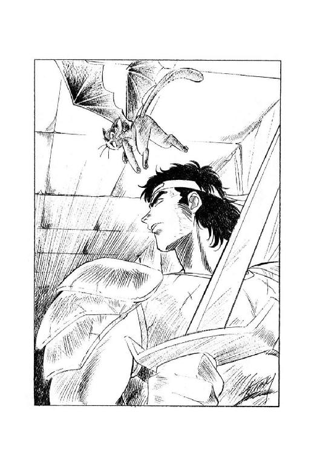
「だけど、いったいおまえさん、今頃まで何やってるんだ？ もう、とっくの昔に脱出したとばっかり思っていたが」
「いえ、それが、とにかく、御主人様が戦士長様をお呼びなんです。どうかいますぐ、執務室においでいただきたいという御伝言です」
有翼猫の返答に、戦士長は一瞬眉を寄せた。しかし、すぐに表情を引き締めてうなずく。
「わかった。すぐに行く」
「お急ぎ下さい。私はその間、時間を稼ぐよう命じられています」
生真面目な口調で言うと、有翼猫は広間の床に降り、今にも破れそうな扉を睨み据える。その様子を見て戦士長は再び眉を寄せたが、素早く身を翻して反対側の扉へと走る。そこから短い廊下を抜け、階段を一つ降りれば王女の執務室の前に出る。
「しかし、彼女はいまさら、いったい何をするつもりなんだ？」
急いで走りながら、戦士長は首を傾げる。本来あまり戦闘には向かない有翼猫に、敢えて時間を稼ぐよう命じるほどだから、切羽詰まった用事には違いないようだが......。
「介錯してくれとかいう相談だったら、御免被りたいな」
呟いて、戦士長は執務室の扉の前に立った。
「カーライルです。王女殿下が至急のお呼びと聞いて、参上いたしました」
「お入り下さい」
相手の返答を確認すると同時に、戦士長は部屋の扉を開いた。そして次の瞬間、歴戦の勇士カーライル戦士長ともあろう者が、完全にあっけにとられて立ちすくむ。何と、鏡の前に立っていた王女は、文字通り、一糸もまとわぬ全裸だったのである。
「王女殿下、あの、そのお姿は......？」
「扉を閉めて、こちらにおいで下さい。閂をかけるのをお忘れにならないように」
威厳のある口調で、王女は呆然としている戦士長に命じた。そして、戦士長が扉を閉めて閂をかけると、真剣そのものの表情で訊ねかける。
「カーライル戦士長、あなたは先刻、私が死ぬなら同伴してもいい、とおっしゃいましたよね。ならば、伺います。もしも私が生きるなら、あなたは同伴者になって下さいますか？」
「......喜んで」
一瞬息を吞んだものの、戦士長は即座に恭しく頭を下げた。その顔を見据え、王女はむしろ厳しい口調で更に訊ねる。
「私の魔道能力は、私が男性を知った後には消滅する可能性が高いのです。あなたが私を抱いたならば、私の魔道能力は消え、あなたは何の取り柄もない小娘を押しつけられる事になるでしょう。それでも、よろしいのですか？」
「もちろんです。殿下の魔道能力が消えるなら、代わりに私が殿下をお守りいたしましょう。この生命のある限り」
一世一代と言ってもいいぐらいの、とびきり厳粛な口調で応えると、カーライル戦士長は全裸の王女の前に片膝をついた。すると王女は、半ば崩れるように両膝をつき、戦士長の頭を抱いて、深紅の瞳からぽろぽろと涙を流す。
「ああ、見つけた......やっと見つけた......私の故郷となってくれる男性を......」
「殿下......」
さすがに感極まった声を出し、戦士長はほっそりとした王女の裸身をひしと抱く。と、そのとたん、彼女が小さな叫びを上げた。
「あっ、いけないっ。時間の余裕がないのを忘れていました。カーライル戦士長、お願いです。隣に寝室がありますから、どうか即刻、私の純潔を破って下さい」
「え？ あ、はあ、それはまあ、あの......」
確かに願ってもない御要望だけど、そうあからさまに言われても、と戦士長は柄にもなくちょっと照れる。すると王女が、やや厳しい口調になって告げた。
「私の魔道能力は、純潔が破られたとき、ごく一時的に回復するのです。能力の有効時間は瞬間に近いほど短いはずですが、その間を利用して陸上海賊たちを撃退しなくてはなりません。躊躇している余裕はないのです」
「わかりました。それでは、苦痛があるとは思いますが、どうか御辛抱下さい」
可哀想だな、やりにくいな、と内心躊躇はあったものの、こうなったからには後には引けない。戦士長は素早く軽甲冑と服を脱ぎ、王女の細身の裸身を両腕で抱きあげて、隣室の豪華な寝台に運ぶ。そして、まるで人身御供に捧げられた生贄のように、瞳を閉じて身体を震わせている王女の耳元に、唇を寄せて小声で囁く。
「御安心下さい。こう見えても俺は、責任の取り方は心得ている男です」
「はい......」
目を閉じたまま、かぼそい声で王女が答える。よし、責任とって悔いなし、と内心呟き、カーライルは少女の上に覆いかぶさった。
それから間もなくうるさくつきまとう有翼猫を振り払い、王女の執務室のすぐ外まで迫っていた陸上海賊たちは、いきなり、一人残らず、リムズベル湾に空間転移させられた。彼らの中には、水泳のできない者もいたが、転移先が水深の浅い場所だったため、溺死した者はいなかった。
エピローグ
「それじゃ結局、カーライルは北王国の婿君になっちゃったわけね」
陸上海賊の北王国侵入から数日後、リムズベル公国の第三公女ヴィーナ姫は、渋い表情のジヤック海務卿に向かって、からかい気味の口調で訊ねた。
「わー、すごいなー。それこそ見事な逆玉の輿じゃない。人間、どこに幸運が転がってるか、わかんないわねー」
「本人は、あんまりそうは思ってないみたいですよ。『責任を取ったまでだ』とかほざいてましたから」
海務卿は、銀色の仮面をつけていても明らかにわかる仏頂面でぼやく。
「いずれにしても、これで北王国に対する外交が目いっぱいやりにくくなりましたよ。カーライルの奴は、こっちの手口を裏の裏まで良く知っていますからね」
「いーんじゃないの？ 彼は前の主君に不義理する性格じゃないし。こっちがよっぽどあくどい真似しない限り、しっぺ返し食らう危険はないと思うな」
そう言って、十二歳の若さでリムズベル公国の事実上の大黒柱となっている公女は、海務卿に向かってくすっと笑いかけた。
「そりゃあたしだって、ジャックがテオドラさんに勧誘されちゃったって言うんなら、それなりにあせるわよ。でも、カーライルなら大丈夫、大丈夫。きっと公明正大で隣国に対する信義もしっかり守る、立派なエリオン王になるに違いないって」
「どーゆー意味ですか、そりゃ」
苦笑と渋面の中間ぐらいの表情で、海務卿は微笑している公女を見やる。
「私では、立派な王にはなれないとおっしゃるんですか？」
「いえいえ、そんなこと言ってないわよ。ただ、ジャックの場合、きっと狡猾無類で、隙あらば隣国を併合して自国の威を張る、立派な覇王になるんじゃないかな。なんせ名前が、正義破壊者だもんね」
ヴィーナは澄ました表情でそう言ったが、そのあと不意に真顔に戻って訊ねる。
「だけど、エリオン貴族たちって、外国人が嫌いなんでしょう？ テオドラさんが辛い目にあってるのも、もとはと言えばそのへんが原因らしいし。そこへ持ってきて、外国人を婿君にしちゃっちゃ、ますます反感買うんじゃない？」
「さあ、どうなんですかね。現状では反感買うも何も、エリオンの貴族どもは反乱企てて失敗したんですから、まるで爼上の鯉ですが」
そう言って、海務卿は小さく肩をすくめた。彼にはちょっと理解し難い事だが、王女と婿君は、エリオン貴族の反乱罪を、最終的には敢えて不問にするつもりらしい。いったいどういう思惑なんだか、と彼は小さく呟いた。
「いずれにしても、リムズベルが貿易拠点として繁栄すれば、半ば必然的にエリオンの地位は下がりますからね。カーライルの奴も、これからが大変でしょう」
「そうね」
他人事のような、と言うか、実際に他人事なのだが、とにかくどうでも良さそうな海務卿の説明に対して、ヴィーナ公女は案外真面目な表情でうなずく。だが、その表情はすぐにころころっと変わり、悪戯っぽい笑顔になって仮面に覆われた海務卿の目を覗き込む。
「ねえ、ジャック。あなた、リムズベル湾に放り出されてきた陸上海賊を、自分の配下に入れたでしょう？」
「はあ。まあ、何かの役に立つかも知れないと思いまして......」
ちょっと口籠る海務卿に向かって、公女はやや皮肉がかった口調で訊ねる。
「陸上海賊が、誰の役に立つかも知れないの？ もしかして、未来の海賊一族大総裁の役に立つんじゃない？」
「いやあ、はははははははは」
笑ってごまかすと言うより、ほとんど開き直った雰囲気で、海務卿は声を上げて笑った。実際、いまさら何を言おうが、この公女殿下をごまかせるわけもない。するとヴィーナも、何のつもりか一緒になって笑いだし、そして不意に用事でも思いだしたのか、そのまますたすたと部屋を出て行った。
公女が姿を消すと、海務卿は笑いを止め、妙に真面目な表情になって呟いた。
「未来の海賊一族大総裁か。いや、まだまだ道は遠い」
見ていろ、俺は絶対に逆玉の輿などと言わせずに、意中の女性を手に入れて見せる、と彼は一人でぐっと力み返る。そのためには、前進につぐ前進あるのみだ。
かたや責任を取って王女の婿となり、山積みの難問に立ち向かう男。かたや公女を嫁に取ろうと野望を燃やし、怒濤の成り上がりを目指す男。性格はまるで違うが、いずれも尋常ならぬ男性には違いなかろう。
この時、カーライル二十二歳、ジャン・ジャック・ジャックポット・ドレスデン二十歳。これに当年二十一歳のミル・ユードを加え、後に北方の三雄と言われる偉丈夫になる、かどうかは、現在はまだ定かではない。
巨大ゴーレムの挑戦
１
ずんだだっ、
ずんだだずんだだっだ、ずんだ、
ずんだだっ、
ずんだだずんだだっだ、ずんだ、
ずんだだっ、
ずんだだずんだだっだ、ずん。
怪しい船団が、怪しい楽の音を奏でる。
大海原の彼方から、怪しい奴が帰ってくる。
「ぐわははははは！
帰って来たぞ、帰って来たぞ、帰って来たぞぉーっ！」
怪しい大哄笑が、遠慮会釈もなく轟きわたる。
ずんだだっ、
ずんだだずんだだっだ、ずんだ、
ずんだだっ、
ずんだだずんだだっだ、ずんだ、
ずんだだっ、
ずんだだずんだだっだ、ずん。
怪しい楽の音は、どんどん大きくなる。
「ぐわははははは！
遠からん者は音に聞け、
近くば寄って目にも見よっ！」
怪しい楽の音を奏でる、怪しい船の舳先に、怪しい魔道士が仁王立ちになって叫ぶ。
「世紀の大天才、
史上最強のゴーレムマスター、
超強力超有名バラン・バラクーダ様が、
今こそ魔道都市に帰ってきたぞぉーっ！」
とても怪しい。
ずんだだっ、
ずんだだずんだだっだ、ずんだ、
ずんだだっ、
ずんだだずんだだっだ、ずんだ、
ずんだだっ、
ずんだだずんだだっだ、ずん。
怪しい船団が、港に着く。
怪しい魔道士が、上陸する。
怪しい魔道士の肩には、怪しい烏が乗っている。
怪しい烏は叫ぶ。
かあーっ！ かあーっ！
その鳴き声すらも、なぜか怪しい。
怪しい石材が、次々に陸揚げされる。
怪しい魔道士は、怪しい石材に、怪しい呪文を唱える。
おお、怪しい楽の音は、今こそ最高潮ではないか。
ずんだだっ、
ずんだだずんだだっだ、ずんだ、
ずんだだっ、
ずんだだずんだだっだ、ずんだ、
ずんだだっ、
ずんだだずんだだっだ、ずん。
怪しい魔道士は、怪しい呪文を唱える。
「らーぶぁ！
らーぶぁ！
らーぶぁ、らーぶぁ、のぺけぺっおーっ！
らーぶぁ！
らーぶぁ！
らーぶぁ、らーぶぁ、のぺけぺっおーっ！」
なんて怪しい呪文だ。
怪しい呪文を受けた怪しい石材が、怪しく輝く。
見よ！
怪しい石材が、宙を飛ぶぞ！
怪しいぞ！
ぐわらぐわらぐわらぐわらぐわら。
ぐわらぐわらぐわらぐわらぐわら。
がーきがきがきがき。
がーきがきがきがき。
ぐわらぐわらぐわらぐわらぐわら。
ぐわらぐわらぐわらぐわらぐわら。
がーきがきがきがき。
がーきがきがきがき。
怪しい石材が、次々と積み上がる。
その音は、やかましい。
でも、あんまり怪しくない。
怪しい魔道士は、怪しい呪文を唱える。
怪しい石材は、次々と積み上がる。
怪しい楽の音は、延々と奏でられる。
こんなに怪しくて、いいのか？
いいのだ、と、魔道士は笑う。
その笑いがまた、怪しい。
不意に静かになる。
呪文が止む。
石の積み上がる音が止む。
楽の音が止む。
そして、声が轟く。
「ゴーレム！」
おお、人よ、その声を聞け。
「ゴーレム！」
地鳴りの如く、雷の如く、
「ゴーレム！」
轟き渡るその声を聞け。
「ゴーレム！」
はっきり言って、こりゃあ、ごついぜ。
怪しい魔道士は、会心の笑みを浮かべて叫ぶ。
「見よ！
見よ！
見よ！ 見よ！ 見よ！
これぞ、わが最高傑作、
史上最強にして最大のゴーレム、
グレート・バラバランダーⅠ世なるぞ！
無敵の力だ！
勝利の凱歌だ！
圧倒的な迫力だ！」
「ゴーレム！」
「さあ！
我が愛しの最高傑作、
グレート・バラバランダーⅠ世よ！
これから我々は、我が故郷、
魔道都市アルタイオに、凱旋帰国するのだ！
巨体が唸るぞ、大地を裂くぞ！
必殺パワーが、嵐を呼ぶぞ！」
「ゴーレム！」
怪しい魔道士バラン・バラクーダが、
怪しい烏を肩に止まらせ、
怪しい巨大ゴーレム、グレート・バラバランダーⅠ世に乗って、
悠然と魔道都市アルタイオに向かう。
遠ざかっていく小山のような影を、
怪しい楽の音が送る。
ずんだだっ、
ずんだだずんだだっだ、ずんだ、
ずんだだっ、
ずんだだずんだだっだ、ずんだ、
ずんだだっ、
ずんだだずんだだっだ、ずん。
２
「と、いうわけなのです」
最年少の魔道都市評議員、ゴーレムマスターのマリオン・ネッドは、深く重苦しい溜息をつく。
「アルタイオ最強のゴーレムマスターの座をかけて、バランは私に挑戦してきました。受けて立たないわけには行きません」
「なるほど」
ネッド邸に呼ばれたルナは、あくまで真剣な表情で相槌を打つ。
と、いきなり華やかな、何も考えていない歓声があがる。
その声は、マリオン・ネッドの三人の弟子たちだ。
「わーい♡ 決闘！ 決闘！」
「お師匠様、勝てそう？ 勝ち目ないようなら、夜逃げした方がいいかもよ」
「わーい♡ 夜逃げ！ 夜逃げ！」
「あ、でも、お師匠様が夜逃げするんだったら、弟子のあたしたちも一緒に行かなきゃならないんじゃない？」
「冗談じゃないわよ。あたしは断然、別のお師匠様を捜すわ。その、バランとか言う人もゴーレムマスターなんだから、そっちに鞍替えしたっていいだろうし」
「わーい♡ 鞍替え！ 鞍替え！」
「だっけどさぁ、バラン・バラクーダって人、確か力素術師じゃなかったっけ？」
「そーなの？ そりゃちょっと問題あるわね。あたしたち、変形術師だもんね。そう簡単には、鞍替えできないって事か」
「かと言って、せっかく覚えたゴーレム造りの魔道技術、無にするのは惜しいし」
「やっぱり、お師匠様に勝ってもらうのが最善って事ね」
「そーゆーわけですから、お師匠様、可愛い弟子たちのためにも、どーか頑張って下さいね♡」
「わーい♡ がんばれ！ がんばれ！ お師匠様ぁ！」
「......頼むからお前たち、少し静かにしていてくれないか？」
マリオン・ネッドが、額を押さえて呻く。
彼の弟子が、かの有名な能天気三人娘なのは、今更言うまでもない。
「で、あたしに何をしろと？」
ルナが気をとり直して、マリオン・ネッドに訊ねる。
マリオン・ネッドも、気をとり直してルナに応える。
「実は、決闘の立会人をお願いしたいのです」
「立会人？」
ルナは、怪訝そうに首を傾げる。
「はい。巨大ゴーレムの決闘は、極めて大きな危険を伴います。なにしろ、大きさだけで言えば魔獣級の怪物が、お互いの存在をかけて叩き潰しあうわけですから」
マリオン・ネッドの口調には、苦悩の色が濃い。
「下手をすると、勢い余って魔道都市そのものを潰してしまう事にもなりかねない。何しろ現在、魔道都市には防護障壁がありませんから」
「う......」
一瞬、気まずい表情になるルナ。
彼女こそが、魔道都市の防護障壁をぶっ飛ばしてしまった張本人なのは、今更言うまでもない。
深く考えないで魔獣の力を解放すると、後で大変な事になる。
と、今更反省しても全然間に合わない。
「そういうわけで、万一の場合に巨大ゴーレムを取り押さえられるのは、魔獣の力を備えたルナ公女殿下しかいないのです。どうか、お引き受け頂きたい」
マリオン・ネッドは深々と頭を下げる。
ルナは思わず溜息をついた。
断れない。
３
ルナは小さく苦笑した。
これでは、まるで見せ物興行だ。
魔道都市の郊外、獣人族村から少し離れた荒野。
暇な魔道士や獣人たちが、わやわやと見物に集まっている。
ギルバート・エゼンがいる。
太平楽な表情をしている。
マーリン・ブレイキーがいる。
珈琲を賞味している。
スミス・チョーサーがいる。
にこにこ笑っている。
ギネヴィア・オフィーリア・コンスタンツェ・ポーランがいる。
おしゃべりをしている。
アチャラカ・スチャラカ・チャーラン・ポーランもいる。
馬鹿笑いをしている。
ギルバートの傍には、レイピア・ロナがいる。
心配そうな表情をしている。
にゃーにゃーと賑やかなのは、豹娘。
その傍には、面白くもなさそうな表情の襟巻土竜男。
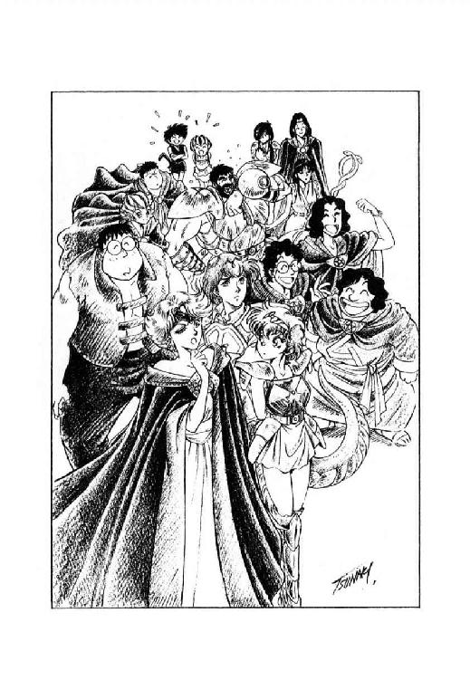
獣人たちの中央には、無謀戦士バト・ロビス。
悠然と酒を吞んでいる。
両脇に、直立鴨ノ嘴娘と山羆男。
一角海豹娘、有棘曲甲獣男、七色長舌蜥蜴男、牙鼠男。
甲猪男、砂鰐男、黒面洗熊男。
そして、ルナ自身の傍には、カルバドク卿ミル・ユード。
有翼猫ロコ、縞兎遊女リム・リリス。
みんな結構、物見高くて暇なのね、と、ルナは思った。
もちろん、自分の事は完全に棚に上げている。
と、そこに、物見高いかも知れないが、絶対に暇ではない人物が現れた。
魔道都市評議長ファラ・ミルドレッドその人である。
目聡くルナを見つけ、足早に近寄ってくる。
そして、身も蓋もない口調で訊ねかけてきた。
「ルナちゃん。あなた、ゴーレムの決闘の、立会人を引き受けたんですって？」
「ええ、はい」
何か不都合だったかしら、と、ルナはちょっと口籠る。
「ネッド評議員に、頼まれたものですから」
「マリオンにも、困ったものね」
美貌の死霊術師は、わずかに眉を寄せて唸る。
「伝説の魔獣を、いったい何だと思っているのかしら。ゴーレムなんかの争いに、軽々しく引っ張り出していい存在じゃないのよ」
「はあ......」
ルナは当惑した表情で、間の抜けた声を出す。
この時はまだ、彼女は自分の使命の重さを知らない。
全然知らない。
その面食らった表情を見やって、ファラは軽く苦笑する。
「ま、あなたに文句を言っても始まらないわね。とにかく、よほどの事にならない限り、魔獣変身しては駄目よ」
口早に言い置くと、彼女は素早く身を翻した。
魔道都市評議長は、とても忙しい。
「ねえ、ミル。よほどの事って、どんな事だと思う？」
ルナは、傍のミル・ユードに訊ねた。
彼女の表情は、当惑している。
彼の表情も、当惑している。
ミル・ユードもまだ、ルナの使命の重さを知らない。
本当の重さを、全然知らない。
だから彼は、わずかに口籠りながら応えた。
「うーん、そうだなぁ......周囲の人たちに危険が迫るような事態、じゃないかな」
「そうね」
ルナがうなずく。
彼がそう言うなら、それでいい。
彼女にとっては、それでいい。
今はまだ、それでいい。
マリオン・ネッドは、懸命にゴーレムの調整をしている。
グレゴール・クライシス一味との激闘のため、ほとんどのゴーレムは壊れてしまった。
そして能天気な弟子たちの激闘のため、修理はちっとも進まない。
「私が望みを託せるのは、お前だけだ」
マリオン・ネッドが切実な声で語りかけ、調整を続ける相手は、
一体の、等身大の鋼鉄戦士。
その名も、スチールマンβ９。
彼に残された、最後の切り札だ。
一方、手出しを厳禁された弟子たちは、暇に任せて無駄口を叩く。
「だけど、スチールマンβ９なんて、だっさい名前だと思わない？」
「思うけど、しょーがないじゃないの。お師匠様の趣味なんだから」
「まーねー。だけどお師匠様って、センスないわねー」
「とことんないわねー」
「わーい♡ お師匠様、センスない！ ない！」
「......ほっといてくれ」
弟子の会話を小耳に挟んだ師匠が、思わず小声で唸る。
しかし弟子たちは、全然気がつかない。
と、言うか、気にも留めない。
「だけどさ、あんただったら、あのゴーレムにどんな名前つける？」
「うーん、そーねー。だいたいあたし、ごっつい鋼鉄戦士なんて、あんまり趣味じゃないんだけどなー」
「だからさぁ、仮につけるとしたら、よ」
「そーねー。例えば、アトラスとか、ヘラクレスとか、ユリシーズとか......」
「......それって、独創性皆無なんじゃない？」
「スチールマンよりはましだと思うけどな」
「そりゃそうだけど......」
「じゃあ、あんただったら、どんな名前つける？」
「え、えーと、それは......」
「あのね！ あのね！ ミンは『てっちゃん』っていう名前がいいと思うの」
「てっちゃん？」
「うん！ 鉄だから、てっちゃん」
「............」
「それでね！ それでね！ 向こうのゴーレムは、岩だから『いっちゃん』なの」
「......好きにしなさい」
４
その頃、いっちゃん、ではない、グレート・バラバランダーⅠ世は、
着々と魔道都市に近付いていた。
刻一刻と、近付いていた。
さよう、近付いていたのは、間違いない。
しかし、グレート・バラバランダーⅠ世が港を出たのは、もう、ずいぶん前だ。
なぜ、いまだ到着しないのか？
説明しよう。
グレート・バラバランダーⅠ世は、移動速度が遅いのだ。
人間はもちろん、牛羚羊より遅いのだ。
史上最大、最強無敵、完全完璧を誇るグレート・バラバランダーⅠ世の、
これは唯一の欠点であった。
しかし、魔道士バラン・バラクーダは、そんな欠点は気にも留めない。
のんびりゆっくり街道を進む巨大ゴーレムの肩の上で、彼は誇らかに笑い続ける。
「ぐわははははは！
ぐわははははは！
ぐわははははははははははは！
見よ！
見よ！ 見よ！
今こそその目で、しかと見よ！
我が最高傑作、グレート・バラバランダーＩ世の偉大な姿を！
空前絶後、前代未聞、並ぶものなきこの偉容を！
そして、この偉大なる存在の造り主、
世紀の大天才、比類なき魔道士、
ゴーレムマスターバラン・バラクーダを！
網膜に焼き付け、
脳裏に焼き付け、
そして、生涯の誇りにせよ！
ぐわははははは！
ぐわははははは！
ぐわははははははははははは！」
やっぱり怪しい。
そして、集まった野次馬が、いーかげん待ちくたびれた頃、
グレート・バラバランダーⅠ世は、悠然と決闘場所にやって来た。
その姿を見て、一同は改めて息を吞む。
でかい。
冗談抜きで、山のようにでかい。
見上げる観衆に向かって、
グレート・バラバランダーⅠ世は一声、咆哮をあげた。
「ゴーレム！」
「ひゅうっ！」
ゴーレムの一声で、荒野に突風が起こる。
「わあっ！ 凄い！」
「うーむ。なかなかのパワーだな」
獣人族の中央に座り込み、悠々と酒をあおっていた無謀戦士が、初めて興味を惹かれたような声を出す。
「ゴーレムなんぞはただの木偶だと思っていたが、あれは多少は歯応えがありそうだ。木偶同士の決闘が済んだら、次は俺が挑戦して見るか」
「バト様、バト様、そのような怖ろしい事は、どうかおっしゃらないで下さいませ」
リオネルが、心底不安そうな表情で、無謀戦士にすがりつく。
この戦士は、完全に本気でゴーレムに挑戦するつもりでいる。
さすがに子まで宿しただけあって、彼女にはそれがわかっている。
しかし、止める方法がわからない。
止める方法などないのだから、わからなくて当然なのだが、
彼女がそれを理解するのは、もう少し先の事だ。
「マリオン・ネッド！」
グレート・バラバランダーⅠ世の肩から下りたバラン・バラクーダが、
身も蓋もない調子で叫ぶ。
「貴様の手の内は、わかっておるぞ！ さっさとゴーレムを、巨大化せい！」
「では、遠慮なく」
既に調整はすべて済んでいる。
マリオン・ネッドは、厳粛な表情で呪文を唱える。
すると、
みゅ、
みゅみゅみゅ、
みゅみゅみゅみゅみゅみゅみゅみゅ、
みゅみゅみゅみゅみゅみゅみゅみゅみゅみゅみゅみゅみゅみゅみゅみゅ、
じゅわっ！
おお！
スチールマンβ９が、巨大化したぞ！
もはや、グレート・バラバランダーⅠ世に劣らない、
堂々たる巨大ゴーレムだ！
どこからともなく、軽快な楽の音が流れ出る。
ちゃーんちゃららーん、ちゃららららーん、
らっちゃららーん、ちゃっちゃっちゃーん！
ちゃっちゃららっちゃら、らっちゃらちゃっちゃら、
ちゃららーん！
軽快ではあるが、やっぱり怪しい。
一方、グレート・バラバランダーⅠ世も負けてはいない。
巨大化したスチールマンβ９に向かって、ゆっくりと一歩を踏み出す。
同時に、あの怪しい楽の音が重々しく響く。
ずんだだっ、
ずんだだずんだだっだ、ずんだ、
ずんだだっ、
ずんだだずんだだっだ、ずんだ、
ずんだだっ、
ずんだだずんだだっだ、ずん。
ちゃーんちゃららーん、ちゃららららーん、
らっちゃららーん、ちゃっちゃっちゃーん！
ちゃっちゃららっちゃら、らっちゃらちゃっちゃら、
ちゃららーん！
互いに怪しい楽の音を響かせながら、
二体の巨大ゴーレムは、じりじりと間合いを詰める。
ああ、なんて怪しい対決だ。
「今だ！ スチールマン！」
マリオン・ネッドが、鋭い声で叫ぶ。
「キックを使え！ 目だ！」
「じゅわっ！」
スチールマンβ９が、気合一閃、宙を跳ぶ。
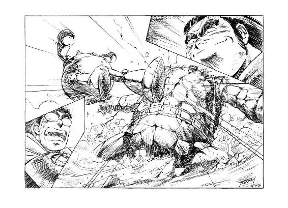
鋼鉄の蹴りが、相手の顔面に炸裂する。
しかし！
グレート・バラバランダーⅠ世は微動すらしない。
「ぐわはははははははははははははは！
効かぬ！
効かぬ！ 効かぬ！ 効かぬ！
そのような蹴り、蚊が刺したほどにも効かぬわ！」
バラン・バラクーダが傲然と笑う。
「それでは今度は、こちらから行くぞ！ ギガトンパンチを受けてみよ！」
「ゴーレム！」
凄まじい咆哮と共に、
グレート・バラバランダーⅠ世が拳を繰り出す。
しかし！
スチールマンβ９は素早く身を躱した。
「受けてみよと言ったのに、受けずに躱すとは何事だ！」
バラン・バラクーダが激昂して叫ぶ。
「ゴーレムの勝負は、力の勝負！
ちょこまか逃げ回るのは、卑怯である！」
「勝手に決めるな！」
マリオン・ネッドも、負けずに怒鳴り返す。
「どんなに威力のある攻撃も、命中しなければ意味がない！
多少威力が劣っても、きっちり命中する攻撃の方が有効だ！
それをこれから実証してやる！
スチールマン！ 敵が耐えきれずに壊れるまで、連続攻撃だ！」
「じゅわっ！」
げしっ、がしっ、げしっ、がしっ、
ずだだだだだだだだっだっ！
相手が振り回す腕をかいくぐり、
スチールマンが猛攻撃をかける。
右、左、前、後、上、下、斜め。
あらゆる方向に跳び回り、
目にも止まらぬ速度で、拳と脚を叩き込む。
これには、さすがのグレート・バラバランダーⅠ世も、倒れはしないものの、
たじたじとなって、ぐらぐらとよろめく。
そして、その猛攻撃に合わせ、
スチールマンの主題曲が高らかに鳴り響く。
ちゃーんちゃららーん、ちゃららららーん、
らっちゃららーん、ちゃっちゃっちゃーん！
ちゃっちゃっららっちゃら、らっちゃらちゃっちゃら、
ちゃららーん！
しかし、この楽の音は、
いったい誰が演奏しているんだろう？
考えてみると、とても怪しい。
「おのれ！ 雑魚が調子に乗りおって！」
バラン・バラクーダが、額に青筋を立てて叫ぶ。
「グレート・バラバランダーⅠ世！ 反撃だ！
今こそ、お前の真の力を見せる時！
必殺の技『岩石雪崩』を使う時だ！」
そして、バラン・バラクーダは、怪しい呪文を唱えた。
「らーぶぁ！
らーぶぁ！
らーぶぁ、らーぶぁ、んすっどらかえうーっ！
らーぶぁ！
らーぶぁ！
らーぶぁ、らーぶぁ、んすっどらかえうーっ！」
なんて怪しい呪文だ。
怪しい呪文を受けたグレート・バラバランダーⅠ世が、
不意に凄まじい咆哮をあげた。
「ゴ、ゴ、ゴ、ゴーレム！」
同時に、
グレート・バラバランダーⅠ世の頭部が、
どーんっと轟音をあげて、天空高く飛び上がる。
誰かが叫んだ。
「たぁーまやぁーっ！」
「な、何だ？ 何でいきなり、首が飛ぶんだ？」
マリオン・ネッドが、当惑した声を出す。
命令者が当惑したので、スチールマンβ９も一瞬、動作を止める。
その間に、グレート・バラバランダーⅠ世の、
肩が、腕が、胴が、腰が、脚が、
それぞれ、どどーんっ、どんっ、どんっ、と轟音をあげながら、
ばらばらの石材となって、天空高く舞い上がる。
誰かが叫ぶ。
「かぁーぎやぁーっ！」
また、誰かが叫ぶ。
「おとわやぁーっ！」
更にまた、誰かが叫ぶ。
「そばやぁーっ！」
更にまた、誰かが叫ぶ。
「おりんぴやぁーっ！」
何の事だかよくわからない。
その時、マリオン・ネッドは、不意に凄まじい殺気を感じた。
同時に彼は、敵の奸策を悟り、絶叫した。
「いかん！ スチールマン、避けろっ！」
しかし、既に遅かった。
天空に舞い上がった石材が、
凄まじい勢いでスチールマンβ９の頭上と、
その周囲一面に落下してきた。
いかに素早い身のこなしを誇るスチールマンとて、
とうてい避けきれる量ではなかった。
ぐわらぐわらぐわら、
がんがらがんがんがんがんがん。
ぐわらぐわらぐわら、
がんがらがんがんがんがんがん。
耳のつぶれそうな騒音と共に、
大量の石材がスチールマンβ９の上に降り注ぐ。
直撃を受け、歪み、へしゃげ、
ばったりと大地に倒れ伏した鋼鉄の巨体の上に、
情け容赦なく石材が降り注ぐ。
ぐわらぐわらぐわら、
がんがらがんがんがんがんがん。
ぐわらぐわらぐわら、
がんがらがんがんがんがんがん。
あーあ、なんまんだぶ、なんまんだぶ。
「こ、こんな、馬鹿な......」
相手の姿を完全に覆い隠して、
高々と積み上がった石材の山を見ながら、
マリオン・ネッドが呆然と呻く。
「私のスチールマンβ９が、やられてしまった......」
「ぐわはははははははははははは！」
一方バラン・バラクーダは、ここぞとばかりに大哄笑をあげる。
「見たかっ！
見たかっ！ 見たかっ！ 見ーたーかぁーっ！
我が最高傑作、史上最強にして最大のゴーレム、
グレート・バラバランダーⅠ世の、必殺『岩石雪崩』を！
向かうところ敵なしの、完全勝利を！
もはや！
我に歯向かうゴーレムなし！
我を遮る魔道士なし！
無敵の力だ！
勝利の凱歌だ！
圧倒的な迫力だ！」
「お待ちなさい、バラン・バラクーダ」
得意満面で大哄笑を続ける魔道士に、背後から凛とした声がかかる。
「あなたの勝利は、まだ確定してはいませんよ」
「何っ？」
険悪な表情で、バラン・バラクーダは振り返る。
しかし、さすがの彼も、この相手に罵声を叩きつける事はしなかった。
彼の背後にいたのは、他ならぬ、
魔道都市評議長ファラ・ミルドレッドその人だったからである。
５
「これは、ミルドレッド評議員殿。いや、今は評議長閣下でしたな」
バラン・バラクーダは丁寧に、
しかし、目いっぱい尊大な態度で一礼する。
「評議長閣下のお言葉ながら、吾輩の勝利が確定していないとは、
いったいどういう意味ですかな？
吾輩の最高傑作、グレート・バラバランダーⅠ世の勝利は、
まさしく完全無欠、一目瞭然、
準備万端、終始一貫、
金科玉条、金城鉄壁、
相互連動、相思相愛、
どこからも、まったく文句のつけようがないではありませんか」
「そうかしら？ 私は、そうは思いません」
魔道都市評議長はそう言うと、
うず高く積み上げられた石材の山に目を向ける。
「ネッド評議員のゴーレムは、確かに破壊されたようですね。ですけれど、あなたのゴーレムも、現状ではゴーレムとして成立しているとは言えません。もしもこのまま、石材の状態から元に戻れないのなら、この勝負は相討ちですね」
「ぐわははははははははははは！
まったく、何をおっしゃるかと思えば、
評議長閣下は、そんな瑣事を問題にしておられるのか！」
バラン・バラクーダは、両腕を組んで、身体を反らせ、大口を開け、
これ以上ないほど傲岸不遜な哄笑をあげる。
「よろしい！
お望みならば今すぐにも、
吾輩の最高傑作、史上最強にして最大のゴーレム、
グレート・バラバランダーⅠ世の健在を証明して御覧に入れよう！
らーぶぁ！
らーぶぁ！
らーぶぁ、らーぶぁ、のぺけぺっおーっ！
らーぶぁ！
らーぶぁ！
らーぶぁ、らーぶぁ、のぺけぺっおーっ！」
怪しい呪文が、石材の山に向かって放たれる。
すると、見よ！
石材の山が、勝手に組み上がっていくぞ！
ゴーレムの姿に復元するぞ！
ぐわらぐわらと、凄まじい轟音が上がるぞ！
やかましいぞ！
やがて、グレート・バラバランダーⅠ世は、
完璧に復元された姿を現す。
その足元には、
無残に潰されたスチールマンβ９の残骸が横たわる。
「ぐわーっはっはっはっはっはっはっは！
ぐわーっはっはっはっはっはっはっは！」
バラン・バラクーダが、得意満面、歓喜絶頂、遠慮会釈のない大哄笑をあげる。
「さあ、どうぞ、ミルドレッド評議長閣下、
お気の済むまで、とっくりと御覧あれ！
我が最高傑作、史上最強にして最大のゴーレム、
グレート・バラバランダーⅠ世の、この雄姿を！
無敵！
無敵！
まさに無敵！
無敵の力は、我が手にあり！
ぐわーっはっはっはっはっはっはっは！
ぐわーっはっはっはっはっはっはっは！
ぐわーっはっはっはっはっはっはっはっはっはっはっは！」
「確かに、見事なゴーレムです」
製作者の方はとにかくとして、と、
ファラ・ミルドレッドは口の中でつけ加えた。
と、その時だ。
不意に、グレート・バラバランダーⅠ世が、
その巨体を、大きくぶるぶるぶるっと震わせ、
凄まじく、苦しげな咆哮を上げる。
「グウォーーレーーム!!」
「むむっ？」
バラン・バラクーダが大哄笑を止め、
げじげじ眉を、ぐぐっと寄せる。
「どうした？
我が愛しの最高傑作、グレート・バラバランダーⅠ世よ？
どこか、具合でも悪いのか？
腹でも痛いのか？」
「グウォーーレーーム!!」
更に一声叫ぶと、
巨大ゴーレムは魔道都市の方に向かって、
ずしん、と、一歩を踏み出した。
同時に、
ゴーレムマスターの顔が、いきなり、さっと蒼ざめる。
「げげっ！」
「どうしたのです、バラン・バラクーダ？」
魔道都市評議長が訊ねると、
自信過剰、傲岸不遜の魔道士が、
まるで別人のような情けない声で唸る。
「おおお、何ということだ。
我が最高傑作、史上最強にして最大のゴーレム、
グレート・バラバランダーⅠ世が、
吾輩の制御を離れ、暴走を始めてしまった......」
「な、何ですって？」
さすがに仰天して、魔道都市評議長は巨大ゴーレムを見やった。
小山のようなゴーレムは、
魔道都市に向かって更に一歩を踏み出しながら、
雷鳴のような声を轟かせる。
「グウォーーレーーム!!」
暴走、と称するには動作が鈍い。
さりとて、もちろん、放置はできない。
魔道都市評議長は、ゴーレムマスターに詰問する。
「止められないのですかっ？」
「止められたら、暴走とは言わんでしょうな」
妙な迫力を失ったバラン・バラクーダは、妙に常識的な返答をした。
「いったん吾輩の制御を離れたら、最低三日は、止める方法がありません。以前、暴走を起こした時には、城市を二つと村を四つ、潰しただけで済みましたが」
「前にも、こんな事があったのですかっ？」
きりきりと柳眉を逆立てながら、魔道都市評議長が訊ねる。
ゴーレムマスターは、ごく素直にうなずいた。
「ええ、二度ほど。ああ、そういえば、以前の暴走は二度とも、『岩石雪崩』を使った直後でしたな。何か、因果関係があるのかも知れませんが......」
「この、大馬鹿者！ げしっ！」
思わず、ファラ・ミルドレッドはバラン・バラクーダを張り倒した。
「防御障壁のない魔道都市に、この巨大怪物が暴れ込んだら、それこそ魔獣災害の再現になってしまう。何とかして、止めなきゃ」
真剣な表情で呟くと、魔道都市評議長は、ひっくり返ったゴーレムマスターを引きずり起こして訊ねた。
「あのゴーレムは、自爆装置は装備していないのですか？」
「とんでもない。グレート・バラバランダーⅠ世は、吾輩の最高傑作、いわばゴーレムの芸術品ですからな。たとえ世界が滅亡しようと、自爆させる必要など毛頭ない」
この期に及んで、バラン・バラクーダは傲然と胸を張る。
「それに、グレート・バラバランダーⅠ世は、史上最大最強のゴーレムですぞ。現存する最も強力な自爆装置を仕掛けても、破壊するには力不足。まさに、無駄、無駄、無駄、無駄、まったくの、無駄、というところでしょうな」
「この、すかぽんたん！ どげしっ！」
今度は意図的に、魔道都市評議長はバラン・バラクーダを手痛く張り倒した。
そして彼女は、再度転倒したゴーレムマスターにくるりと背を向ける。
こーなったらもう、意地でもあの怪物を潰してやる、と、ファラ・ミルドレッドは声には出さずに呟いた。
たとえ魔道都市が壊滅するとしても、大馬鹿バラン・バラクーダのゴーレムに潰されるのだけは我慢ならない。
「え？ でも、あの、魔獣変身しても、いーんですか？」
当惑した表情で、ルナが訊ねる。
魔道都市評議長は、毅然とした表情でうなずく。
「このままでは、魔道都市が潰されてしまうもの。ネッド評議員が見込んだ通り、巨大ゴーレムに対抗できるのは、魔獣の力を持つあなたしかいないのよ」
「だけど、あの、先刻はファラさん、御自分で......」
言いかかるルナに、ファラは、かぶせるような調子で告げる。
「その私がいいと言っているんだから、問題ないでしょ？ とにかく、あの暴走ゴーレムを、魔獣の力で完膚なきまでに叩きのめして頂戴」
「はぁい、わかりましたぁ」
この女性も、結構いい加減だなあ、と、ルナは声には出さずに呟いた。
やっぱり魔道都市は、魔獣戦士が長く滞在するべき場所ではないのかも知れない。
「ソンナ事ハ、後デ考エレバ良カロウガ」
不意に、彼女の頭の中で声がする。
言わずと知れた、魔獣の声だ。
「久々ニ、本来ノ姿ニ戻レル好機ナンダ。風向キガ変ワラナイウチニ、早イトコ、オッ始メヨウゼ」
「そりゃまあ、あんたはそう言うでしょうけどね。だけど、あたしにはいろいろ準備があるのよ」
頭の中で返答しながら、ルナは手近に身を隠す場所がないか、周囲を窺う。
なにしろ、魔獣変身すると、衣類が全部吹っ飛んでしまう。
若い乙女としては、万全の準備を整えておきたいと思うのは、当然である。
幸い、ゴーレムの速度は異様に遅い。
時間はある。
やがてルナは、近くの岩陰にこそこそと身を隠した。
その後から、有翼猫だけが従う。
ファラとの対話を聞いていたミル・ユードが、
心配そうな表情で二人を見送る。
彼が、魔獣戦士に誰よりも深く関わるのは、もう少し後の事になる。
そして間もなく、鋭い声が荒野に響く。
「ヴァルガー・チェーンジ！」
「おおおおおっ！」
すっくと立った直立巨竜魔獣の姿に、
見物人たちが、どっとどよめいた。
その中で、無謀戦士が小さく舌打ちを洩らす。
「ぬかったわ。小娘に抜け駆けされたか」
その傍で、リム・リオネルが安堵の微笑を浮かべる。
彼女がルナに素直な好感を抱いたのは、
もしかしたら、この時が初めてかも知れない。
魔道都市の方に移動しかかっていたグレート・バラバランダーⅠ世は、
不意に出現した直立巨竜に気付いたらしく、
巨体の向きをゆっくりと変えた。
身体の大きさだけ見れば、
グレート・バラバランダーⅠ世は、魔獣戦士よりかなり大きい。
しかし、魔獣戦士には、ゴーレムなど及びもつかない超能力がある。
巨大な敵を睨み据え、ルナは逡巡なく魔獣に命じた。
「一気に片付けるわよ。破壊叫、用意！」
「オイオイ、頭脳体。ソウ慌テルナヨ。セッカク楽シメソウナ相手ジャナイカ。タマニハ少シグライ遊バセテクレヨ」
頭の中で、魔獣が抗議する。しかしルナは、きっぱりと首を横に振った。
「だーめっ！ これは遊びじゃないんですからね。迂闊に長引かせて、余計な被害が出たらどうするのよ！ 破壊叫、用意！」
「ヤレヤレ」
ぼやきながらも、巨竜魔獣は巨大ゴーレムに向かって、轟々と咆哮を開始した。
一方、グレート・バラバランダーⅠ世は、魔獣戦士に向かってじりっ、じりっと接近するが、その速度は、見物人たちが呆れるぐらい遅い。
そして、まだ充分な間合いが残っているうちに、魔獣の咆哮が人間の可聴範囲を超え、超音波破壊砲となってゴーレムの身体に叩きつけられる。
「グウォーーレーーム!!」
悲鳴のような叫びを一声あげて、
グレート・バラバランダーⅠ世は、一瞬の内に粉砕される。
と、転倒していたバラン・バラクーダが、
いきなり、がばっと起き上がった。
「おのれ、怪獣！
制御不能とは言え、
我が最高傑作を粉砕するとは、
許せん！
貴様に、グレート・バラバランダーⅠ世の、
真の力を見せてやる！」
再び妙な迫力を取り戻した声で喚くと、
バラン・バラクーダは、またも怪しい呪文を唱える。
「らーぶぁ！
らーぶぁ！
らーぶぁ、らーぶぁ、れどもにともーっ！
らーぶぁ！
らーぶぁ！
らーぶぁ、らーぶぁ、れどもにともーっ！」
「止めなさい！ この馬鹿！ げしっ！」
魔道都市評議長が慌てて走り寄って、
ゴーレムマスターを張り倒す。
しかし既に、怪しい呪文は効力を発揮していた。
「えっ!? うそーっ！」
魔獣の頭上で、ルナは思わず奇声をあげてしまった。
何と、微塵に粉砕されたゴーレムの破片が、
ずりずりと寄り集まって、元の姿に戻っていくではないか。
「どーなってるの、これ？」
「魔道士ガ、何カ呪文ヲ唱エタヨウダナ」
あっけらかんとした調子で、魔獣が指摘する。
「元ヲ断ツナラ、ごーれむヨリモ魔道士ヲ叩イタ方ガ早イゼ。ドウスル？」
「それは駄目！」
ルナは、即座に叫んだ。
たとえ相手が魔道士でも、魔獣の力を個人に直接向けてはいけない。
これは、彼女にとって鉄則である。
「魔道士は、多分ファラさんが何とかしてくれるわ。魔獣戦士は、もう一度ゴーレムを叩くわよ」
「了解、但シ、続ケザマニモウ一回破壊叫ヲ使ウノハ、少シ無理ガアル。直接攻撃デ叩キ潰スゾ」
弾んだ声で魔獣が告げ、ルナは小さく苦笑した。
「わかった、わかった。直接攻撃で行きましょう」
彼女が承諾すると同時に、魔獣戦士の巨体が宙に舞う。
ぶんっ、と、空中で身体がしなり、
繰り出された尻尾が、ゴーレムの側頭部を直撃する。
ルナの頭の中で魔獣が叫び、
思わずルナも、唱和する。
「ヴァルガー・テール・ラリアート！」
べきっ！
岩の破片が散り、ゴーレムの頭部が半分消し飛ぶ。
「グウォーーレーーム!!」
咆哮をあげ、
ゴーレムは敵を捕捉しようとする。
その腕を、巨竜魔獣の鉤爪が手荒く刎ね上げ、
腰部に尻尾を、叩きつける。
すると、一撃でゴーレムの腕がもげ、腰が砕ける。
相手の意外な脆さに、ルナはきょとんと目を丸くした。
「案外、他愛ないのね......」
「当然ダ。魔獣ヲ傷ツケラレル者ハ、魔獣シカイナイ。人間ノ造ッタごーれむ如キハ、セイゼイ脆イ玩具ニシカナランノサ」
平然と言いながら、
魔獣はグレート・バラバランダーⅠ世を、容赦なく解体する。
しかし、呪文の効力が残っているのか、
解体されたゴーレムの破片は、
やがて再び、ずりずりと寄り集まっていく。
「ヨーシ、ヨシヨシ。コレハ暫ク楽シメソウダナ」
しつこく元の姿に戻るゴーレムを見やって、魔獣が楽しそうに反応する。
しかしルナは、目いっぱいうんざりした声を出す。
「冗談じゃないわよ！ 際限がないじゃない！」
「ドウヤラ、ソウデモナサソウダゾ、頭脳体。コイツ、再生スル度ニ、えねるぎーガ弱クナッテキテイル」
魔獣は気安い調子で告げながら、
復元したばかりのゴーレムの腕を摑み、ごく無雑作に叩き折る。
「一回、二回トハ言ワナイガ、五、六回グライ粉砕シテヤレバ、再生デキナクナッテ潰レルダロウ」
ごきっ！ ざくっ！ ぼきっ！
魔獣の爪にかかると、石材が、まるで麻幹のように脆く砕ける。
「ダカラ、細カイ事言ワズニ、少シ気楽ニ闘ワセテクレヨ。コノトコロ、魔獣同士ノ対決バカリデ、俺ガ実際ニドノクライ強イカ、見セル場面ガ全然ナカッタカラナ」
「ったく、勝手放題言っちゃって」
半分呆れてルナは肩をすくめ、
魔獣は心底楽しそうに、げしげしげしっとゴーレムを粉砕する。
それにしても、魔獣は強い、と、ルナは改めて思った。
仮にも史上最強を称する巨大ゴーレムが、まるっきり玩具扱いされている。
魔獣と闘える者は、魔獣だけ。
魔道技術を極めても、大帝国の軍団を総動員しても、
人間の力は魔獣に遠く及ばない。
やがて、グレート・バラバランダーⅠ世は、
魔獣にさんざん遊ばれた挙句、ついに魔道の力を消耗し尽くし、
一山の石材となって、動かなくなった。
そこへ、
とどめの一撃、破壊叫が叩き込まれる。
凄まじい破壊音が上がる。
〈どんがらがらがらぐわわわわーんっ！〉
これこそまさに、まごうことなき破壊である。
そして、微塵に粉砕された巨大ゴーレムは、
二度と再び、元の姿に戻ることはなかった。
やれやれ、やっと始末がついた。
「お、おお、おおお、何という事だ......」
バラン・バラクーダは、呆然とした表情で呻く。
「我が最高傑作、史上最強にして最大のゴーレム、
グレート・バラバランダーⅠ世が、
かくも完璧に、徹底的に、完膚なきまでに叩きのめされるとは。
いったい、あの怪獣は、何者なのだ......」
「あの巨竜こそは、伝説の魔獣ヴァルガーなのです」
さすがに多少慰めるような調子で、魔道都市評議長が声をかける。
「不可侵とさえ言われる魔獣が相手では、いくらあなたのゴーレムが強力でも、対抗する事はできません。
最初から、人間の力が及ぶ相手ではないのです」
「むむむむむ、伝説の魔獣ヴァルガーか......
そのような者が、実在したのか......」
低く呻きながら、バラン・バラクーダは魔獣戦士を注視する。
そして、不意にぐわっと身を起こし、
妙な迫力の籠った、怪しい口調で叫び始める。
「ううむ、不覚であった！
未熟であった！
この世の中に、かくも強力な存在があろうとは！
たかだかグレート・バラバランダーⅠ世程度で、史上最強を称するとは、
このバラン・バラクーダ、今は、己の未熟に恥じ入るのみ！
魔獣こそ最強！
魔獣こそ超越！
従って、魔獣を凌がない限り、最強を称したところで単なる笑止！」
「ちょ、ちょっと......」
相手の口調に不穏な気配を感じ取り、魔道都市評議長が口を挟もうとしたが、もちろん、
ゴーレムマスターは気にも留めない。
「吾輩は再び、海の彼方に渡る！
そして、修業と研鑽を重ね、
いつの日か必ず、魔獣を凌ぐ最強のゴーレムを、この手で造って見せようぞ！
その時こそ、天下晴れて、
吾輩、バラン・バラクーダが、最強のゴーレムマスターを称する時なのだ！
おお！ 今から、その日が待ち遠しいぞ！
ぐわーっはっはっはっはっはっはっはっはっは！
ぐわーっはっはっはっはっはっはっはっはっは！
ぐわーっはっはっはっはっはっはっはっはっ、はっはっはっはっは、はははのはっ！」
勝手放題に吹きまくりながら、
バラン・バラクーダは傍若無人な大哄笑と共に、
呆れ返った一同に背を向け、
夕闇迫る荒野を後にする。
その肩に、いったいどこから飛んできたのか、
怪しい烏が舞い降りて、止まる。
海は魔道都市の東にあるはずなのに、
魔道士と烏は、なぜか、真っ赤な夕日に向かって進んで行く。
そして、その背に、
あの、怪しい楽の音が重なる。
ずんだだっ、
ずんだだずんだだっだ、ずんだ、
ずんだだっ、
ずんだだずんだだっだ、ずんだ、
ずんだだっ、
ずんだだずんだだっだ、ずん。
ずんだだっ、
ずんだだずんだだっだ、ずんだ、
ずんだだっ、
ずんだだずんだだっだ、ずんだ、
ずんだだっ、
ずんだだずんだだっだ、ずん。
ずんだだっ、
ずんだだずんだだっだ、ずんだ、
ずんだだっ、
ずんだだずんだだっだ、ずんだ、
ずんだだっ、
ずんだだずんだだっだ、ずん。
そう、馬鹿は死ななきゃ直らない。
＊作者注
この物語は、角川カセットブック『魔獣戦士ルナ・ヴァルガー 巨大ゴーレムの挑戦』を元にしています。
カセットブックの脚本、演出を担当されたとまとあきさんをはじめ、関係者の皆様全員に、心からの感謝を表明いたします。
なお、この物語の、本編の中での時間的位置は、六巻と七巻の間、ルナたちが魔道都市を出て南方に向かう直前の話です。
レギオン伝説
プロローグ 魔道都市・中央図書館
「予想はしていたが、まあ、こんなものか」
魔道都市中央図書館の名物司書、九級下等移送術師ルネ・ニグスは、面白くもなさそうな口調で呟きながら、調べていた分厚い書物をぱたりと閉じた。
以前は、獣人族随一にして唯一の歴史探求者、知識愛好家、資料収集家と称された彼は、魔道士の資格を得た現在では、禁忌を怖れぬ魔道都市最強の歴史家、叡智の殿堂を最も精細に把握する者、などと評されている。
特に魔獣関係記録の研究では、魔道都市では右に出る者がないというのが定評で、正規職員等級ぎりぎりの低位末席魔道士であるにもかかわらず、専用の研究室を中央図書館内に与えられ、研究に必要と認められれば禁書といえども閲覧可能という導師級魔道士並みの特別待遇を受けている。
もっとも当人の方は、この特別待遇に対して、少なくとも外から窺える態度としては、感謝しているようにも得意になっているようにも見えない。ただ、面白くもなさそうな表情で何やらぶつぶつ唸りながら、貴重な資料を無雑作に図書館の書庫から引っ張り出し、自分の研究室の机の上に積み上げている。
まあ、内情を明かせば、彼は地中を自由に掘り進む能力のある襟巻土竜獣人で、おまけに欲しい本を手元に引き寄せる魔道能力を持っている。だから、本当は特別待遇など与えられなくても、中央図書館の魔道障壁が薄い地中から、自由自在に本を持ち出すことが出来るのである。そして、実際、魔道士資格を得る以前に、彼は厳重封印された禁書も含め、かなりの量の本を中央図書館から手元に引き寄せていたらしい。
もちろん本来なら、中央図書館蔵書の勝手な持ち出しは厳禁で、場合によっては死刑までありうるほどの厳罰に処される。しかし、死霊術師ファラ・ミルドレッドを評議長とする魔道都市評議会は、彼の研究成果を高く評価し、中央図書館の司書に任じて特別待遇を与えたのである。
この時、某ゴシップ情報誌は、評議会が彼に異例なまでの優遇処置を行なった理由は、もしも厳罰に処した場合、彼は貴重な本を抱えて文字通り地下に潜るに違いなく、そうなっては極めて始末に悪いと判断されたからではないかと書いている。また、彼と評議長の秘蔵弟子リア・ファルルが個人的に親密なのも、多少は関係あるかもしれない、などと仄めかしている。
しかしそれにしても、彼の魔獣関係記録研究が極めて高水準なものであるのは誰から見ても間違いなく、評議会の特別待遇決定に対しても、少なくとも表立っては抗議や非難の声は上がらなかった。
と、まあ、そんなような経緯で、元獣人族四天王の一員、襟巻土竜獣人ルネ・ニグスは、今や魔道都市中央図書館に事実上棲息し、絶え間なく資料を収集調査発掘して、魔獣関係記録研究三昧の日々を送っているのであった。
「水棲人やら影人やらが封印保存状態から出てきたおかげで、魔獣王が君臨し魔獣が支配する時代についての証言や資料が増えたのは確かだがね」
面白くもなさそうな口調でぶつぶつ呟きながら、偏屈獣人魔道士は机の上に積んである資料の山から、今度はやや薄めの書類綴りを取って無雑作に開く。
「しかし、昔はああだこうだったと得意げに喋る奴ほど、実のところは重要な知識を持ってないってのは、歴史調査の常識だからな。
よほど吟味せんと、かえって混乱する一方だ」
せめて、水棲人と影人の族長あたりから遠慮会釈のない本音が聞ければ、それなりに役に立つかも知れんがね、と、彼は書類綴りをめくりながら呟く。
と、その時。強い光に弱い彼の目に適合させて、薄暗く絞ってある研究室の魔道照明が、不意に、ごく僅かにではあるが確実に光量を増した。
「む？」
もともと細い目を更に細めて、彼は椅子越しに背後を振り返った。
いつの間に、どこから入ってきたのか、そこには一人の老人が立っている。
襟巻土竜獣人である彼は、人間態でいても視覚より聴覚、嗅覚の方が遥かに敏感なのだが、この老人が出現した気配は、まったく感じることができなかった。
しかし魔道都市では、この程度の現象でいちいち驚いていたら身が持たない。
ニグスは、落ち着いた口調であくまで丁寧に、だが、資料調査を邪魔された一抹の非難を含ませて、老人に訊ねかけた。
「どなたかな？」
すると老人は、これまた平然とした態度で返答する。
「儂の名は、ザシャム。
大魔道士ザシャムなどと呼ぶ者もおる」
「うむ」
僅かに眉を寄せ、獣人魔道士は椅子を回して老人の方に向き直った。
「魔道都市で大魔道士の名を偽称する者は、それほど珍しくないが」
「儂が偽物だと言いたいのかな？」
老人は、穏やかな口調でニグスに訊ねる。
「それとも、本物の大魔道士である証明をせいとでも言うのかな？」
「貴殿が本物の大魔道士であっても、或いは物好きな詐称者であっても、俺としては別に構うことではない」
いささか冷淡に、獣人魔道士は肩を竦める。
「俺が関心があるのは、貴殿が何のために俺の研究室を来訪したか、だけだ」
「うむ」
真面目な表情でうなずくと、老人は一冊の薄い書物を取り出した。
「儂はお主に、この書物を進呈に来たのじゃ。
この書物の内容を、信じるも信じぬもお主の自由。
また、他人に広めるも自己一人で秘蔵するも自由じゃ」
「ふむ」
老人が差し出す書物を、ニグスは慎重な手付きで受け取った。
見たところ、さほど特徴のない簡単な装丁の真新しい本で、表紙には『レギオン伝説』と表題が書いてある。
「レギオンというと、巨竜魔獣の支配者で、リムズベル大公家の先祖だな」
半分独言のような口調で、獣人魔道士は呟いた。
「リムズベルの秘伝承によれば、世界を支配していた暗黒魔王を欺いて巨竜魔獣と合体し、それから叛旗を翻して魔獣の力で世を救った事になっている。暗黒魔王というのは、多分魔獣王のことなんだろうが」
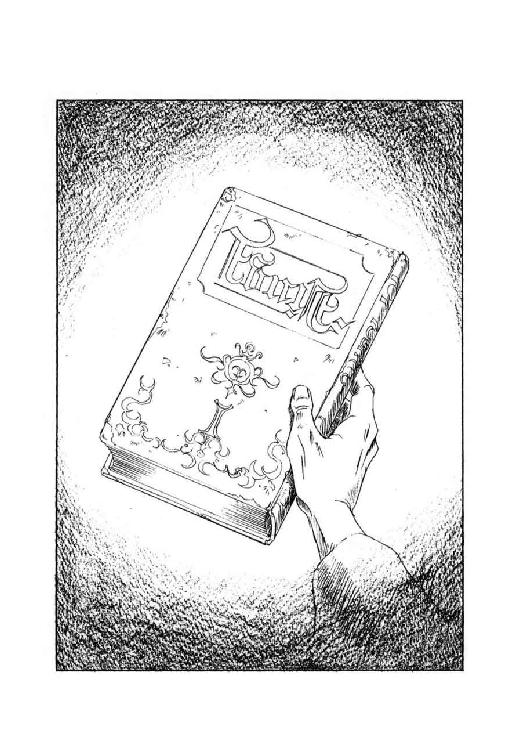
「まず、この書物を読むがよい」
いささか勿体ぶった調子で、老人が告げる。
「真実は、この書物の内にある。
そう信じつつ、読むがよい」
「だぁぁぁぁっ！」
瞬間、ニグスは見事に前に突んのめり、危うく書物を取り落としかかった。
そして老人は、これで目的は達したとばかりに、愉しげに笑いながら言い放つ。
「ほっほっほっほ。
では、さらばじゃ」
「......噂には聞いていたが、これが有名な大魔道士の駄洒落か」
獣人魔道士が心底苦々しげに呻いた時には、既にそこには老人の姿は跡形もない。
そして彼は、面白くもなさそうな表情で、手にした書物の表紙を開いた。
第一章 失踪
私の名は、レギオン十六世。
少なくとも、誕生した時にはそう名付けられた。
この名にまつわる苦い記憶に誓って、私がここに語る内容は真実である。
むろんそれは、私にとっての限定された真実ではあるが。
しかし、真実であることは間違いない。
名前から容易に想像できると思うが、私はレギオン家の十六代目として生まれた。
私の先祖、初代レギオンはタラスコンという地名にちなむ姓を名乗っていたらしいが、魔獣王から巨竜魔獣を拝領し、大河ファラモントの南を支配する魔獣公の家柄になった時、その姓は破棄されたという。
それから代々、私の先祖たちは、レギオンの名と巨竜魔獣を引き継ぎ、私の父の代まで魔獣公として大過なく務めてきた。
そう、私の父、巨竜魔獣公レギオン十五世が亡くなるまでは、世界はおおむね平和だったのだ。
それがたとえ、偽りの平和であったとしても。
私が生まれた時代、世界を支配していたのは三つの神聖魔獣都市と、我がレギオン家を含む六家の魔獣公家だった。
建前上は、その上位に四体の超越魔獣が存在し、更にその上に、万物の創造主魔獣王が絶対的最高支配者として君臨している事になっていた。
しかし実際のところ、超越魔獣から実際に命令を受けている者はごく少数で、その姿を見たことのある者は更に少なかった。そして魔獣王に到っては、それが存在する何らかの証を感じた者すら皆無だった。
私は巨竜魔獣公の世継公子であり、三つの神聖魔獣都市を巡って魔道の修行をしたが、魔獣王はおろか超越魔獣と接触することすら、まったくなかった。
私が教えを受けた相手は、神聖魔獣都市の魔獣神官たちだった。
当時の神聖魔獣都市には、私のように外部から来た人間の魔道修行者と、魔獣を崇める種族の一つ、鋼鉄の身体を持つ者の魔獣神官がいた。
鋼鉄人の外観は、人間の大きさの鉄戦士というところだが、彼らは鉄戦士のような人形ではなく、それぞれ意志と個性を持った生物だった。それも、私の目から見ると、ほぼ完璧に近い生物だった。
鋼鉄人は無限としか思えない知識を記憶し、決して忘却することがなかった。鋼鉄の身体は強靱で、人間には危険過ぎる魔道の実験も平然と行なった。冷静で合理的で、判断を誤ることがなかった。そして彼らは、病気に倒れることも、老齢に苦しむこともなかった。よほどの大事故で身体を徹底的に破壊されない限り、死ぬこともなかった。
私は、人間の魔道修行者の中では比較的優秀な方だったが、鋼鉄人の魔獣神官たちには、当然ながら全く及びもつかなかった。
あれは、まだ私が北方神聖魔獣都市で魔道の修行を始めたばかりの、少年の頃だったが、鋼鉄人の指導神官に訊ねたことがある。
「なぜ、あなたがた鋼鉄人に比べれば、能力的に明らかに劣る我々人間に、わざわざ魔道の修行をさせるのですか？
我々が修行を重ねてようやく発揮する魔道能力を、あなたがた魔道神官は、いとも容易に駆使できるというのに」
すると指導神官は、鋼鉄人特有の丁寧な調子で教えてくれた。
「よろしい、お答えしましょう。
神獣王が必要とされているものは、人間が魔道の修行をして得る魔道能力などではなくて、魔道の修行を積んだ人間そのものなのです。
充分に魔道の修行を積んだ人間ほど、神獣王から下賜される複製神獣との合体が成功しやすいのです。
神獣を崇める種族は、いかに優秀であっても、神獣と合体することはできません。我々鋼鉄人も、その例外ではないのです。
ですから貴方は、魔道の修行をして魔道能力を得ることよりも、魔道の修行を通じて自己を高めることに留意するべきなのです。
理解できましたか？」
「はい、指導神官」
私はうなずいたが、内心には別の疑問が生じていた。
人間の総数に比べれば、ただでさえ多いとは言えない魔道修行者だが、魔獣と合体できる者は、その中でもまた限られた少数に過ぎない。
そのごく少数だけが、創造主である魔獣王が必要とする人間だとすると、他の大多数の人間というのは魔獣王にとって、そしてこの世界にとって、いったい何の意味があるのだろうか？
この世界に生きる多くの人間は、魔獣と合体するごく少数の人間を生み出すためにだけ、存在しているのだろうか？
しかし私は、この疑問を口に出して指導神官に問うことはしなかった。
話の順序が多少前後するが、私が北方神聖魔獣都市に赴いて魔道の修行を開始したのは、十二歳になったばかりの時である。
この時、私は既に一児の父親になっていた。
より正確に言えば、一児の父親になったから、やっと北方神聖魔獣都市に赴く事ができたのである。
やや煩雑になるが、このあたりの事情について説明しておこう。
「魔獣を斃せる者は、魔獣のみ」という言葉がある。
魔獣公は魔獣と合体する事によって、同類の魔獣以外には絶対に対抗しえない超越的な力を得ることができる。
しかし、やはり物事には代償というものがあり、魔獣と合体した者は、下半身が魔獣と融合する形態になるために、人間としての機能を一部失う。
むろん、失われる機能の大部分は魔獣の能力で充分以上に代替できるのだが、ただひとつ、生殖能力だけはどうにもならない。
そのため、魔獣公になる者が自分自身の子孫を残そうと思ったら、魔獣と合体する前に結婚し、世継ぎを作っておく必要がある。
ところが一方で、私の指導神官が明言した通り、魔獣と合体するためには充分に魔道の修行を積んでおかないと、成功率が低くなるという問題がある。魔獣との合体が成功しなかった場合に何が起きるかというと、通常は、合体を試みた者が魔獣に吸収されて、即座に完全消滅するのである。
魔獣に吸収されて消滅するというのは、ちょっと聞くと怖ろしい死に方のようだが、実は、これは魔獣公が死ぬ場合には必ず生じる現象であり、消滅する本人には気の毒ではあるが、それほど珍しいことではない。
問題なのは、合体に失敗した者は魔獣公とは見なされないので、次に魔獣に合体する後継者を指名することができず、次代の魔獣公は、合体を司どる北方神聖魔獣都市の魔獣神官が指名すると規定されていることである。
つまり、魔獣との合体に失敗したら最後、本人が消滅するばかりか、魔獣公の家系を魔獣神官が指名する他の誰かに奪われてしまうのである。これでは、私のように魔獣公の候補となっている人間は、必死になって魔道の修行に励まざるを得ない。
そして、魔道の修行はできるだけ幼いうち、できれば四～五歳くらいから始めた方が有利というのが定説になっている。また、魔道の修行を始めたら、原則として異性との性行為は禁じられる。これでは、子孫を残すことはできない。
この二律背反に対して、魔獣公の中には、自分自身の子孫を残すのを諦めて一族の子弟に魔道修行をさせ、最も優秀な者を次代の魔獣公に指名するという合理的な方式を取っている家もあった。
しかし、我がレギオン家は血統に対するこだわりが異様に強かった。世継ぎの男子が生まれるとごく幼いうちに強引に結婚させ、ひたすら子供ができるよう努力させた。まあ、実際に努力させられるのは世継ぎの妻にさせられた女性のようにも思えるが、とにかく次の世継ぎとなる男子が生まれると、即座に父親を魔道修行に出して、どうにか魔獣と合体できるだけの研鑚を必死に積ませ、巨竜魔獣公の地位を保っていたのである。
ちなみに、他の家では女性の魔獣公はそれほど珍しくなかったが、レギオン家で女子が世継ぎになることはなかった。長子が女子の場合、世継ぎとは認められず、父親は男子が生まれるまで魔道修行に出ることはできなかった。両親に男子が生まれないまま、女子が自分で男子を産んだ場合のみ、女性が巨竜魔獣公候補として魔道修行に出ることが許されていたが、実際には、レギオン家十六代の間にそういう事態は起こらなかった。
いずれにしても、客観的に見るとかなりの無理があるこういった慣習をかたくなに守っていて、結果的に十六代、跡切れずに魔獣公を出し続けることができたのは、僥倖というべきか、執念というべきか、やはり尋常ではないと思う。
とにかく、そういうわけで一族の慣習に従い、私は八歳になるかならないうちに十歳ほど年長の妻を娶った。そして四年後に妻は男の子を産み、私は我が子との対面もそこそこに北方神聖魔獣都市に旅立ったのである。この時に巨竜魔獣公の地位にあったのは、私の祖父のレギオン十四世で、父はまだ魔道修行中で不在だった。
私の母は早く亡くなっていたので、乳母や侍女たちに育てられた私にとって、年長の妻は若い乳母が一人増えた程度にしか感じられなかった。そして妻は、ほんの子供に過ぎない夫を、暖かく優しく穏やかに扱った。後になって振り返ってみると、彼女と過ごした四年間だけが、私が人間らしい日々を送れた幸福な期間だったのかも知れない。
しかし、我ながら不人情だとは思うが、私にとっては魔道の修行を始める前の生活は、まったく余分な停滞期間としか感じられなかった。生まれ落ちて以来、私の人生の目標は巨竜魔獣公を継ぐことであり、強大な巨竜魔獣と合体して意のままに動かす日を迎えるのが、私の夢だった。
そして周囲の者たちも、早く子供を作って故郷を離れるよう私に促し続けた。
広大な地域を支配する多忙な魔獣公であった祖父とは、滅多に対面することはなかったが、私の顔を見た時には、必ず祖父はこう言った。
「一日も早く神聖魔獣都市に行って、懸命に修行を積み、巨竜魔獣公の地位にふさわしい立派な魔道士になるのだぞ」
このような状況で、少年の私が妻子に目もくれず、故郷を振り返りもせず、勇躍北方神聖魔獣都市に旅立って行ったのは、まあ、当然といえば当然だろう。
ましてや......。
と、書きかかっただけで思わず筆の運びが遅くなるが、実は私には、リムスという名の双生児の弟がいた。
レギオン家では、世継ぎに姉がいる事は稀にあるが、男性の兄弟が存在する場合はほとんどない。
きちんと調べたわけではないが、おそらく十六代の間で、私と弟だけだろう。
そして、私はちっとも知らなかったが、世継ぎに双生児の弟がいるという事態は、一族の間でかなりの論議を呼んだらしい。
今までは幸運にも破局が訪れなかったが、レギオン家の慣習を守っていると、世継ぎに何かあった場合、たちまち断絶の危機に見舞われる。
そこで、世継ぎに弟がいるのなら、これを予備の後継者として世継ぎと同等に扱ったらどうかとか、いっそ弟を先に神聖魔獣都市に送って幼少時から魔道の修行を積ませておけば安全なのではないか、などという議論が生じたようだ。
しかし、当時巨竜魔獣公だった曾祖父レギオン十三世は、世継ぎと弟を同等に扱っては、わざわざ後継者争いの火種を作る事になると断じ、弟を魔獣公の後継者候補とは見なさず、完全に一般の臣下と同じように扱うよう命じたのである。
実際のところ、後継者の条件を不合理なまでに絞り込むレギオン家では、他の魔獣公の家では日常茶飯事の後継者争いがほとんど起きていない。逆に言えば、そういう争いに慣れていないだけに、いったん騒動が生じたら、どこまで酷い事態になるか分からない。この点を、曾祖父は重視したようである。
で、絶対権力を持つ魔獣公である曾祖父の命令により、私と弟は完全に引き離されて、意図的に別々に育てられた。実際のところ、私が初めて弟の存在を知ったのは、私の結婚式の時である。双生児とは言っても、私と弟はあまり似ていなかったので、顔を見ても特に感慨を覚えることもなかった。
その後も、私と弟はほとんど会う事すらなく、少なくとも私の方は、まったく彼の存在など意識もせずに成長した。私が魔道の修行に出る時、リムスは一族の中に混じって見送りの挨拶に来たが、私の方は、既に意識が北方神聖魔獣都市に向いていたこともあって、ああ、そういえばそんなのもいたな、という以上の認識はしなかった。
当然といえば当然なのだが、まさか、私と弟の運命があのような縺れ方をするなどとは、当時の私はまったく夢にも思わなかったのである。
北方神聖魔獣都市に赴いた私は、そこで三年の間基礎的な魔道を修行し、それから東方神聖魔獣都市に移って、更に三年間修行を積んだ。
十二歳という、魔道修行者としては遅い開始年齢を挽回しようと、この六年間、私は懸命に努力を重ねた。
魔道修行を始めてすぐに分かったのだが、私のように魔獣と合体するための修練として魔道を修行する者にとっては、北方と東方での修行は、いわば準備段階に過ぎない。
こんな段階で足踏みしてたまるか、というのが私の切実な本音だった。
そして、指導神官たちの言葉を真に受ければ、私の魔道士としての素質と才能は、人間にしては稀に見るほど優秀なものだったらしい。
北方神聖魔獣都市の指導神官は、私が東方に移る時、こんな餞別の言葉をくれた。
「魔道というのは、長く学べば、或いは幼い頃から学べば身につくというほど単純なものではないのです。
比較するのは酷かも知れませんが、この都市には、ごく幼い頃から魔道の修行を始めているのに、いくら修行を積んでも東方に移る段階に達せずに、老齢に至ってしまった修行者が何人もいるのです。
ところが貴方は、その段階を僅か三年で終了しました。これは、希有な才能がなくては、出来ることではありません。
自分の才能を、大事にしなさい。
そして、傲慢にならないように気を付けなさい」
それから、東方神聖魔獣都市で私の指導に当たった魔獣神官は、鋼鉄人にしては珍しく、思ったことを率直に口に出す人物だったが、私と別れる時に心底残念そうに言った。
「惜しいな。
貴方が、神獣公なんぞの世継ぎなのは。
そうでなかったら、何が何でもこの都市に留ってもらって、鋼鉄人の主人、超越神獣の鉱神公のために働いてもらうんだが。
まったく、貴方の才能は、人間にしておくのは本気で惜しいよ」
まあ、私にどの程度の才能があったのかはとにかく、東方神聖魔獣都市での修行は、困難も多かったが実に楽しいものだった。
北方神聖魔獣都市での修行が、主に魔道文献の読解や呪文の暗記だったのに対して、東方神聖魔獣都市では、魔道技術の実践や魔道物品の製作が修行として重視されていた。どうやら、こういった具体的な物品を扱って速やかに結果を出す種類の作業が、私の気質によく適合していたらしい。
神聖魔獣都市の中に居残っている人間の数も、東方は北方とは比べものにならないほど多かった。しかも、北方神聖魔獣都市に居残っている人間は、東方に移れるほど魔道が上達せず、かといって今更故郷に戻ることもできず、やむを得ず修行を続けている、はっきり言えば落ちこぼれた連中であるのに対し、東方神聖魔獣都市には、鋼鉄人の魔獣神官と対等に仕事をしている優秀な人間の魔道匠が、数多く存在していた。
実際のところ、私がもしも巨竜魔獣公を継がなくてはならない立場になかったら、おそらく東方神聖魔獣都市に腰を据えていただろう。もっとも、私がレギオン家の世継ぎでなかったら、そもそも魔道の修行に出ることもできなかっただろうから、こんな仮定はまったく無意味なのだが。
とにかく私は、東方での修行を三年間で終えて、魔獣と合体する人間が修行するための都市、謎に満ちた西方神聖魔獣都市に移ったのである。
で、その移動の直前くらいだったか、祖父のレギオン十四世が死に、後継者に指名された父が巨竜魔獣との合体に成功して、新たな魔獣公になったという知らせが、故郷から私の元に届いた。
正直なところ、特に感慨はなかった。祖父とは何度か儀式張った対面をした記憶しかなかったし、父、レギオン十五世とは、まともに対面したことすらなかった。修行を中断して故郷に戻る気は毛頭なかったし、父や一族の者たちも、私にそんな行動を要求してはいなかった。
父の魔道修行がどの程度まで進んでいたか、私はまったく知らなかったが、いずれにしても父は首尾よく巨竜魔獣公に成りおおせた。レギオン家の世継ぎとしては、それだけで必要にして充分なのだ。
西方神聖魔獣都市は、他の二つの神聖魔獣都市と比較しても、実に奇妙な場所だった。
この都市で私は六年間修行したわけだが、いったい何をどう修行していたのか改めて訊ねられると、正直なところ説明に窮する。
なにしろ、西方神聖魔獣都市では、具体的な進歩とか目標の達成などという概念がない。課題を与えられるわけでもなく、自分の水準を客観的に問われる試験もない。
そして何よりも私が当惑したことには、西方神聖魔獣都市には魔獣神官が存在しないのである。従って、当然ながら指導神官の制度もなく、この都市に来た魔道修行者は、ほとんど完全な放任状態に置かれる。
西方神聖魔獣都市に来た魔道修行者の中には、放任されているのをいいことに、もはや苦しい修行をする必要はなくなったのだと決め込んで、いきなり自堕落になるものも多かった。特に、魔獣公になるため必死の努力を積んできた者ほど、反動なのだろうか、西方神聖魔獣都市では何もしなくなるように思えた。
しかし私は向上心が旺盛だったのか、それとも単に貧乏性だったのか、誰からも強制されない状態であっても、何か自分で修行と思える行為をしていないと落ち着かなかった。とは言うものの、いったい何をどうすれば正しい修行になるのか見当が付かなかったので、西方神聖魔獣都市に着いてから数か月の間、私は長くこの都市に滞在している先輩の魔道修行者を闇雲に訪ね、質問をして回った。
西方神聖魔獣都市は魔道修行の終着点であり、いったいいつからこの都市にいるのか見当も付かないような大先輩の魔道修行者が、都市の至る所に居を構えている。私が訪ねた魔道修行者の中には、気軽に質問に答えてくれた人もいたし、まったく会ってもくれない人もいた。また、会って話はしてくれたものの、何を言っているのかまるで要領を得ない人もいた。私が知りたかった正しい修行の方法にしても、そんなものはないよと言い放ってしまう人もいれば、微に入り細に入り説明してくれる人もいた。
しかし、彼らと会って話を聞いているうちに、私にも、理屈ではなく漠然とした感覚として西方神聖魔獣都市における修行というものが分かってきた、ような気がする。その感覚を、私なりに文章表現にまとめてみよう。
西方神聖魔獣都市は、魔獣と合体するための修行をする神聖魔獣都市だが、魔獣と合体して吸収されないようにするには、人間はどういう状態でいなくてはならないだろうか。
私が思うに、その人物が本来持っている性癖、いわゆる個性が強ければ強いほど、魔獣に吸収されにくくなるのではないだろうか。
だから西方神聖魔獣都市では、どんな性癖であれ、誰もが自分の性癖に忠実に振る舞うことをよしとするのだと思う。破壊嗜好者であれ、殺人偏愛者であれ、それが本来の性癖であるなら、遠慮なくいくらでも発揮すればいいのだ。
そして、そのつもりになって観察してみると、この都市には管理者の魔獣神官が存在しないにも関わらず、魔道修行者たちの傍若無人な性癖発揮がすべて平然と受け入れられ、しかも絶対に日常が崩壊しないのである。
例えば、いきなり都市内で広域破壊の魔法を乱発する馬鹿者がいても、破壊された街路はいつの間にか復元されている。たとえ破壊の巻き添えをくって死ぬ人間が出ても、死んだはずの犠牲者は、やがて、あ～あ、よく死んだぁ、などと吞気に大欠伸をして起き上がる。もしも首がもげるような損傷を受けていても、すぐに胴体が悠然と立ち上がって、頭部を拾って首に塡め直し、何事もなかったかのように歩み去る。これは、冗談でも何でもない。そういった光景を、私は西方神聖魔獣都市で実際に何度も見ている。
ある意味では、西方神聖魔獣都市という都市そのものが、信じ難い力量を備えた寛容な指導神官であり、その中に住む魔道修行者たちは、いくら暴れようと自堕落に過ごそうと、結局は都市の掌の上で踊っているだけという解釈も出来るだろう。最も謎に満ちた神聖魔獣都市という称号は、伊達ではないのだ。
そういうわけで、西方神聖魔獣都市では個性を伸ばすのが修行である、と自分なりに解釈した私は、結局、東方で習得した魔道技術の研究に没頭することにした。そういう意味では、東方でも西方でも、私の修行内容は大して変わらなかったとも言える。
しかし、東方では指導神官に与えられる課題に従って研究を行ない、技術を習得していたわけだが、西方神聖魔獣都市では、私は自分の興味の対象だけを忠実に追い求めた。そして、その結果として、東方ではとうてい研究できないような趣味的な技術や無意味な技術、或いは危険な技術などを、ずいぶんいろいろと探求した。
まあ、修行と称して道楽三昧に耽けっていただけではないかと言われてしまえばそれまでだが、西方神聖魔獣都市では道楽こそが修行なのである。
具体的に例をあげれば、当時私が熱中していた研究の一つに、魔獣の力だけを選択的に中和する魔道具を作成する、というのがあった。こんな危険な研究を北方や東方で行なったりしたら、たちまち魔獣神官の集団が血相を変えて飛んできて、責任糾明徹底追及処罰断罪されてしまう。また、金属に疑似意志を持たせて生物化するという研究も試みてみたが、これも他の神聖魔獣都市で行なおうものなら、即座に鋼鉄人の魔獣神官から不興を買って、問答無用で禁じられてしまうに違いない。もっとも、鋼鉄人のような高度な知性を持つ金属性魔道生物は、私の力量ではとうてい作成に至らず、打ち合うと大仰に痛がる剣と盾などという無用物を作成するぐらいがせいぜいだった。
そういうわけで、誰からも干渉されずに道楽の魔道技術研究に夢中になっている私の上を、瞬く間に六年という年月が過ぎていった。
私の運命を激変させたのは、ある日の朝、密やかに届けられた二通の手紙だった。
ちなみに西方神聖魔獣都市には、けっこう迅速かつ正確に機能している郵便制度があるのだが、誰がどうやって郵便を配達しているのかは、まったくの謎である。
郵便を出したい者は、街路のあちこちに設置されている赤く塗られた郵便発送箱に、宛名を明記した郵便物を放り込んでおく。すると、郵便物はいつの間にか発送箱の中から消え、宛て先のしかるべき場所に出現するのである。
どうやら、発送箱が一種の高度な空間移送魔道装置になっているらしいのだが、具体的にどういう魔道が設定されているのか、そもそも誰がそんな装置を設置したのか、正確な事実はまったく解明されていない。もっとも、数多くの謎と不思議に満ち満ちた西方神聖魔獣都市では、郵便配達の機構などに関心を持つ者は滅多にいないようだったし、私も特に気にしていたわけではない。
そういうわけで、その朝、いつの間にか私の部屋の工作机の上に二通の封筒が出現しているのを見ても、私は別に驚きもせず、不審がることもなかった。しかし、封筒の裏に記された差出人の名を確認したところで、私は思わず眉を寄せた。
なんと、手紙の一つは北方神聖魔獣都市魔獣神官長名義の公式通達で、もう一つは巨竜魔獣公レギオン十五世、つまり、父からの私信だった。
西方神聖魔獣都市に来てからの六年間、いや、それどころか魔道修行に出てからの約十二年間、私は故郷から私的な手紙をもらったことは一度もない。公的な手紙が届いたのも、祖父が亡くなって父が魔獣公を継いだという通知を受けた時だけだったはずだ。
もっとも、長期音信不通状態だからといって、私と故郷の関係が険悪だとか、冷遇されているとか考えてもらっては困る。他の魔獣公がどういう方針を取っているかは知らないが、我がレギオン家では、よほど重大な問題が生じ、どうしても連絡が必要な事態にならない限り、魔道修行に出た世継ぎと故郷にいる者たちの間で音信が交わされることはない。なにしろ、ただでさえ修行を始める時期が遅いのだから、よけいな雑音を世継ぎの耳に入れて、万が一にも魔道修行の妨げとなっては一大事、というわけなのだ。
だから私も、便りのないのは無事な証拠、とばかりに音信不通を決め込んでいたわけだが、それは逆に言えば、便りの有る時には何かが起きた、ということに他ならない。
内心、嫌な予感を覚えながら、私はまず、北方神聖魔獣都市から送られてきた公式通達の入った封を切った。
そして、封筒から引き出した通達文書を一瞥した瞬間、私の目に不吉な字句が次から次へと飛び込んでくる。
「......巨竜魔獣公の肉体は、あと百日から百二十日の間に巨竜魔獣に吸収される事必至の状態にあると判明......通告を受けた巨竜魔獣公は、貴殿を後継者として指名せり......ついては巨竜魔獣との合体準備を行なうべく、八十日以内に北方神聖魔獣都市へ御出頭いただきたく、ここに通達する......ふうっ......」
私は額に手を当てて、大きく溜息を吐いた。
それから、ひとまず通達文書を工作机の上に置き、父からの私信が入っている封筒を、いささか呆然とした目で見やる。
どうやら、嫌な予感が的中したらしい。
複製魔獣と魔獣公の合体を司どっている北方神聖魔獣都市では、巨竜魔獣公に限らず、すべての魔獣公に対して専門の魔獣神官を派遣し、常時その体調を診断させている。魔獣神官が魔獣公を診断して、生命に関わるような兆候が発見されれば、即座に北方神聖魔獣都市に報告する。時には魔道技術を駆使した治療が行なわれる場合もあるが、魔獣公の身体に影響を与えることのできるような魔道治療は、ほとんど存在しないらしい。
そして、生命が尽きるまでの期間が特定できるようになった時点で、北方神聖魔獣都市は魔獣公に残りの寿命を通告し、後継者の指名を求めるのである。
強大無比な力を誇り、一般人からは神にも等しい存在と見なされている魔獣公だが、時の流れに応じて老いて衰えて死んでゆく人間の宿命を免れることはできない。唯一、北方神聖魔獣都市の周囲を領土とする大白蛇魔獣公ヒュレーネが、自分の魔獣から精力を吸収して不老不死を得たと囁かれているが、これにしても事実かどうかは分からない。
いや、それどころか、我がレギオン家の先祖である巨竜魔獣公たちは、ほとんど例外なく五十歳になる前に死んでいる。記録を見ると、だいたい三十歳前後で巨竜魔獣と合体して、十五年ほど魔獣公を務め、四十五歳くらいで死去するのが標準的なようだ。
巨竜魔獣公が長生きできない理由が魔獣と合体しているためなのか、それとも偶然短命な人間が続いただけなのかは、誰にも確かなことは言えない。しかし、詳細に調べたわけではないが、他の家でも五十歳を越える年齢になるまで長生きした魔獣公というのは、大白蛇魔獣公を除いては、あまり聞かないように思える。
まあ、一般人の水準では、四十五歳から五十歳という寿命は、けっして早死とは言わないだろう。しかし、西方神聖魔獣都市の魔道修行者の場合、人間であっても二百年、三百年、或いはそれ以上の年月を生きていると思われる者が珍しくない。まして不死身の鋼鉄人などと比べてしまったら、魔獣公の生命は実に儚い。
そういうわけで、ここ数年くらいのうちには、父が死んで私が巨竜魔獣公を継ぐという事態が訪れるのは、ほぼ確定していたとも言える。しかし、それにしても父は、確か在位六年目の三十九歳、死ぬには少し早すぎるような気もする。
「......などと、文句を言ってもどうなるものでもないな」
父の私信が入った封筒を引き寄せ、半ば機械的に封を切りながら、私は小さく呟いた。
冷静沈着正確無類が種族属性である鋼鉄人の魔獣神官が、魔獣公の寿命を判定するという重大な問題に対して誤った診断を下す可能性は、ほとんど皆無に等しい。まして、担当の魔獣神官が下した判断は、北方神聖魔獣都市に回された時点で徹底的に検証されたはずだ。
その厳しい検証を経て、魔獣神官長名義の公式通達が私宛てに送られてきた以上、もはや事態は完全に確定している。今更誰が何をどうじたばたしようとも、我が父、巨竜魔獣公レギオン十五世には、長くても百二十日の生命しか残っていない。これはもう、厳然たる事実として受け入れるしかないのだ。
そして私信の文面を見る限り、冷徹な宣告を受けた当事者である父は、自分の生命が間もなく尽きるという事態を、努めて平静に受け入れようとしているようだった。
「......寿命は天の定めるものであり、魔獣公といえども人の力で動かすことはできない。人である私に今できることは、私の後継者が巨竜魔獣とそれに付随する権力を、できる限り円滑に掌握できるように協力することだけだ......伝えておきたい情報が、数多くある。一日でも、一刻でも、早く会いたい。赤子の時以来顔も見ていないが、汝は私の後継者であり、紛れもない私の息子なのだから......巨竜魔獣公レギオン十五世......ふうっ......」
父からの私信を読み終えて、私は再び小さく溜息をついた。
「......おそらく私も、遠からずこんな手紙を書くことになるのだろうな」
やや物憂げに呟くと、私はゆっくりと立ち上がって、六年間を過ごした室内を見回した。
馴染み深いはずの調度類が、なんだか急によそよそしくなったように感じられたのを、なぜか鮮明に覚えている。
もう、二度とこの都市に足を踏み入れることはないだろう、と、その時、私は確信していた。
魔道修行者が旅行をする場合、通常は一般人と同じように、陸路は徒歩、或いは牛羚羊に牽かせた車を使い、海路は船を使う。地域によっては、高速乗用動物として巨大二足疾走鳥などが利用されているようだが、慣れない者にはとても乗れたものではないらしい。
高速飛行移動や瞬間移動のできる魔道具が存在しないわけではないし、空間移送能力を身につけている魔道修行者もいる。しかし、その大半は近距離移動用で、大陸や大洋を渡って神聖魔獣都市の間を往来するような場合には、消耗が大きすぎて実用にはならない。
だから通常の場合なら、西方神聖魔獣都市にいる私に八十日以内に北方神聖魔獣都市に出頭せよと命令するのは、とんでもない無理難題に属する。
しかし、それはあくまで通常の場合で、緊急で、しかも公的な事情があるとなると、状況はたちまち一変する。北方神聖魔獣都市から送られてきた通達には、亜空間通路使用申請書と記された一枚の書類が同封されていた。そこには、亜空間通路の使用を望む場合は、西方神聖魔獣都市西門脇にある青い扉の建物に赴き、本申請書を担当係官に呈示せよという指示が書いてあった。
亜空間通路という名称は今まで聞いたことがなかったが、おそらく特殊な場合にしか使用を許されない、神聖魔獣都市同士を結ぶ魔道移送機構なのだろう、と、私は想像した。この機構を使えば、瞬間移動か、それに近い高速度で北方神聖魔獣都市まで送り込んでもらえるに違いない。
そして、二通の手紙を受け取った翌日、身辺の整理を済ませて荷物をまとめた私は、指示の通りに西門脇の建物に向かった。
青い扉の建物は、すぐに発見できた。もっとも、そこにあったのは、建物というより小屋と形容した方がよほど的確に思える貧相な代物で、神聖魔獣都市の重要機密機構である亜空間通路担当係官の事務所とは、外見からはとうてい想像できない。
しかし西方神聖魔獣都市では、建物の外見と内実が大幅に食い違うのは、さほど珍しいことではない。外からは壊れかけた小屋にしか見えない建物の扉を開けると、内部は広壮な大邸宅になっているという例を、私はいくつも知っている。
私は、どうにも安っぽい感じの青い塗料で雑に塗られた扉の前に立ち、飛行竜の形をした真鍮製のノッカーで扉を強く叩いた。すると、かちりと錠の外れる音がして、扉はゆっくりと内側に開く。
「何か用かね？」
小屋の中で寝ていた貧相な中年の男が、寝床から上体を起こして私に訊ねた。
扉を開けても小屋はやっぱり小屋のままだったが、だからといって、私は相手を見下したりしなかった。他の神聖魔獣都市や、或いは一般人の社会ではとうてい考えられないことだが、西方神聖魔獣都市では、小屋どころか、襤褸を纏って路地で終日ごろごろ寝ている老人が、実は数百年の修行を重ねた強力な魔道士だったりするのである。私は一度、西方に来たばかりの若い魔道修行者が、そういう老人を邪険に扱ったとたん、いきなり凄まじい雷光に直撃されて、黒焦げ状態のまま十日間ほど悶え苦しんでいたのを見たことがある。
そういうわけで、私はあくまで丁寧な態度で亜空間通路使用申請書を取り出し、のそのそと寝床から出てきた中年の男に呈示した。男は申請書を受け取って文面を見ると、無精髭がまばらに生えた顎を撫で、神経質そうな口調で呟いた。
「ふむ、そうか。
北方神聖魔獣都市まで、亜空間通路を使って行きたいというわけだな」
そして彼は、やや不気味なくらい大きく目を見開き、私の顔を凝視しながら訊ねた。
「これまで、亜空間通路を使ったことはあるかね？」
「いいえ」
私が首を横に振ると、男は露骨に眉を顰める。
「それは、ちょいと厄介だな。
西方と北方の間は、ここのところ空間状態が不安定なんだ。
通路の使用に慣れている者や、動揺とは無縁の鋼鉄人ならそれほど問題ないんだが、初心者にいきなりこんな状態の通路を使わせるのは、できれば避けたいところなんだがな......」
半分独言のように唸ると、彼は再び私の顔を凝視して訊ねた。
「緊急の用なのかね？」
「はい」
当然じゃないか、と、内心呟きながらも、私は大人しくうなずいた。
すると男は、いささか大仰に肩を竦めて溜息をつく。
「やむを得んな。
一応、北方神聖魔獣都市に連絡を取って状況を説明してみるが、俺やあんたに決定権があるわけじゃないからな」
そう言いながら、男は今まで自分が寝ていた粗末な寝床に手を掛けて、無雑作にぐいと押した。すると寝床は軋み音を立てて横に動き、そこに地下へと降りる階段が現われる。
「こっちだ」
顎をしゃくって、男は無雑作に階段を降りてゆく。私は慎重な足取りで、彼の後に続いた。
階段を降りた先は、特になんの変哲もない粗い石壁造りの、殺風景な小さな地下室になっていた。とりあえず目につくのは、階段の正面にある重そうな鉄扉と、扉のすぐ手前の壁に塡め込まれている水晶球ぐらいのものだろうか。
私に先立って地下室に降りた男は、その水晶球にまっすぐ歩み寄り、何やらぶつぶつと呪文を唱えた。すると水晶球の中に、ぼんやりと画像が浮かび出る。私の位置からは男の身体が邪魔になってよく見えないが、どうやら鋼鉄人の顔が映っているようだ。
「西方のランテンだ」
画像が浮かぶが早いか、男はぶっきらぼうな口調で喋り出した。
「今、ここに北方で出した申請書を持って、レギオンっていう若いのが来てるんだが、聞いてみりゃ通路を使うのは初めてだって言うじゃないか。
あんただって、最近の西方北方間通路の状態は知ってるだろう？
はっきり言って、初心者には危険だ。
何か、他の移動方法を使わせたほうがいい」
すると水晶球に映った鋼鉄人が、何やら男に返答する。何と言っているのか私にはちょっと聞き取れなかったが、応答を受けた男の表情が明らかに険しくなる。
「馬鹿を言え！
魔道士として優秀かどうかと、亜空間通路をうまく使えるかどうかは、全然問題が別だろうが！
変更する権限がどうこう言うなら、決定権のある奴を出せ！
事故が起きてからじゃ、遅いんだぞ！」
男は苛立たしげに怒鳴ったが、どうやら通話の相手は彼の意見にまったく耳を貸さないらしい。それからしばらく、男は激しい口調で押し問答を続けていたが、やがて水晶球が青白く光って画像が消えた。
「......ったく、石頭の鉄屑野郎どもめっ！」
心底腹立たしげな表情で、男は吐き捨てるように叫んだ。それから険悪な目付きで私を見やり、いささか八つ当たり気味の乱暴な口調で言い放つ。
「どうやら北方神聖魔獣都市の魔獣神官連中は、不安定な亜空間通路以外の移動手段をあんたに提供するつもりはなさそうだ。
奴らの言うには、あんたは優秀な魔道士だから心配は無用だそうだが」
そして彼は、ぐいと眉を寄せて私に訊ねかけた。
「どうする？
危険を承知で、亜空間通路を使うかね？」
「済みません、ちょっと待って下さい。
その、亜空間通路が不安定で危険があるというお話ですが、具体的には、いったいどういう状況になっているのでしょうか？」
とにかく事態を把握しようと、私は男に訊ね返した。
「そもそも、亜空間通路というのはどんな機構になっていて、使用する場合にはどういう注意が必要なのか、それを説明していただけませんか？
私は亜空間通路に関しては、まったく情報を与えられていないものですから」
「......そうか。そこから説明せにゃならんのか」
男は、憮然とした表情になって階段のいちばん下の段を指差し、ぶっきらぼうに言い放つ。
「分かった。納得行くまで説明してやるから、そこに座れ」
そして私は男の言う通り階段に腰掛け、亜空間通路に関する即席講義を受けることにした。
「要するに、亜空間通路というのは、深い谷をまたいで掛けられた橋のようなものだ」
外観からは貧相な中年魔道士にしか見えない、西方神聖魔獣都市の亜空間通路管理官ランテンは、階段に腰掛けた私に向かって面白くもなさそうな口調で説明した。
「わざわざ谷底まで降りなくても、橋を渡ればずっと早い。谷を跳び越えるほどの危険はないし、無理な力もいらない。
この場合、谷を跳び越えるという行為は、空間転移による瞬間移動に該当する。小さな溝を跳び越えるのは簡単だし、そんな所にわざわざ橋を掛ける馬鹿はいないが、大きな谷を頻繁に渡らなくてはならないとなったら、無理に跳び越そうとするより橋を掛けた方がいい。
そういうわけで、西方と北方の神聖魔獣都市の間には、亜空間通路という橋が掛けられている」
いささか口早に言うと、彼は憮然とした表情になって首を振った。
「しかし、管理官の俺が言うのも何だが、この橋はせいぜい丸木橋だ。大きな荷物は通せないし、一つ間違えれば谷底に墜落する。
しかも最近は、この丸木橋の上をびゅうびゅうと横風が吹いているような状態だと思ってくれ。空間が不安定というのは、そういう意味だ」
そして彼は奥の鉄扉に歩み寄り、その表面を拳で軽く叩いた。
「この扉の奥に、亜空間通路がある。
人間の視覚では、薄闇の中を白く光る道が一本、手前から奥へずっと伸びているように見える。
その道から外れないように、とにかくまっすぐ歩いて行けば目的地に着くわけだが、厄介な事に、薄闇の中から正体不明の奇怪な代物がいろいろ飛び出してくるんだ。
亜空間通路管理官の間では、そういう代物を魑魅魍魎と呼んでいるがね。要するに、まったくわけの分からん存在だ」
「......魑魅魍魎、ですかぁ？」
半分あっけにとられて訊ね返した私に、彼は大真面目な表情でうなずいて見せる。
「そうだ。
まあ、こればっかりは実際に自分の目で見ない限り、どう説明しても想像できんだろう。
見る人間によって、ずいぶん違うものが出るという話もあるしな」
そして彼は僅かに言葉を切り、まるでこの地下室の空間内に魑魅魍魎と呼ばれる奇怪な存在が往来しているかのような目つきで、視線を宙に漂わせた。
「で、この亜空間通路に現われる魑魅魍魎は、現在のように空間が不安定な時には特に頻繁に、ほとんどひっきりなしに出現する。
実際に、魑魅魍魎に衝突したとか危害を加えられたという話は聞かんから、幻影みたいなものなのかも知れんが、慣れない人間にはとてもそうは思えん。
そして、横行する魑魅魍魎に動揺したり気を取られたりして、白く光る道から足を踏み外したら、即座に終わりだ」
「終わりって......どうなるんです？」
私が訊ねると、彼は肩を竦めてぶっきらぼうに答えた。
「どうなるか、俺は知らん。おそらく、誰も知らんだろう。
一応、存在そのものが分解されて完全消滅するんじゃないかと推定されているが、それはあくまで推定だ。
確実に分かっているのは、亜空間通路で道から外れた奴が、現実空間に戻ってきた例はないという事だけだな」
そう言って、彼は皮肉っぽく笑った。
「もしかしたら至福の世界とやらに行けるのかもしれんが、俺としては、そんな甘い話は信用せんね。
むしろ、道を外した奴も魑魅魍魎と化して、永遠に亜空間を彷徨し続けるとか言われた方が、よっぽど納得できるぞ」
「はぁ......」
私は思わず溜息をつき、それから気を取り直して、先刻から気になっていた事項を質問した。
「ところで、空間が不安定な状態というのは、だいたいどのくらい続くのですか？」
「......そうだな」
私の質問に、彼はちょっと考え込む表情になる。
「確かな事は誰にも言えんが、俺の経験から推察すると、二、三年くらいが周期だな。
現在の状態は、だいたい半年前から始まったものだから、短くてもあと一年程度は続くだろう」
「では、空間が安定するまで待っているわけにもいきませんね」
そして私は階段から腰を上げ、ランテン管理官に深々と礼をした。
「丁寧な御指導、ありがとうございました。
御忠告を肝に銘じ、細心の注意を払った上で、亜空間通路を使わせていただきます」
「......そうか。
まあ、俺が脅かした程度で、あっさり思い止まれるような事態じゃないだろうとは思っていたが」
また憮然とした表情になって唸りながら、管理官は無精髭の生えた顎を撫でる。
「とにかく、充分に気を付けて行けよ。
二十四歳ってのは、どう考えても死ぬには若すぎる年齢だからな」
「......なるほど、これが亜空間通路の魑魅魍魎か」
管理官に鉄扉を開いてもらい、いよいよ亜空間通路に踏み込んだ瞬間、私は思わず息を吞んで唸った。
「これは確かに、予備知識なしでこんな現象に遭遇したら、間違いなく肝を潰して道を踏み外すな」
もっとも、気の小さい人間だったら、道を踏み外す以前に足が竦んで動けなくなるかもしれない、と、私は思った。
薄闇の中に実に頼りなく伸びる一本の白く光る狭い道があり、その周囲を数多くの得体の知れないものが、かなりの速度でぶんぶんと飛び回っている。何とか形が認識できるものとしては、半透明の巨大な眼球のようなものや、紫に光る粘妖のようなもの、どれほど長さがあるか分からない朱色の大百足、思わず目を奪われるような鮮やかな色彩の翼を広げた妖鳥、轟音をあげ金色に輝きながら乱舞する火炎の凝固物......。
「おっと、魑魅魍魎に気を取られてる場合じゃないぞ」
自分自身に言い聞かせ、私は足元を見据えて前方へと踏み出した。
ランテン管理官の説明によれば、ゆっくりとした足取りでもおよそ十五分程度進めば、北方神聖魔獣都市側の受け入れ口に出られる。
そして、いったん亜空間通路に入ったら、とにかく前に進んで受け入れ口に出るしかない。
送り出し口は通路に人を送り込むと同時に消滅してしまうので、後ろに戻ったところで、目的地までの距離を延ばすだけのことになる。
もちろん私には、戻る気などは毛頭なかった。
「......たかが幻影じゃないか。怖れるほどの事はない」
不意に横手から現われた巨大な甲冑魚のようなものが、私の身体と半ば重なるような状態で悠々と通過してゆくのを見やりながら、私は小さく口に出して呟いた。
実際のところ、十二年間の魔道修行の間には、けっこう危険な局面を切り抜ける羽目になった事も少なくない。暴走寸前の雷電嵐を必死の思いで制御したり、一面の火炎の中から一本の綱に縋って脱出したり、獰猛な魔道生物と一対一で対決した事もある。
そういった、思い出しただけでも冷や汗の出るような体験と比べれば、幻影のような魑魅魍魎が横行する亜空間通路を通り抜ける程度の行為は、簡単とまでは言わないが、それほど凄まじく危険だとは思えない。
しかし、およそ五分ほど通路を進んだあたりで、私の余裕を一撃で粉砕するような現象が起きた。
その時、前進する私の正面から何枚かの銀色の円盤のようなものが、甲高い唸りとともに突っ込んできた。衝突しても何も起こらないだろうとは思ったが、私はほとんど無意識の内に身体を僅かに捻って円盤群を躱した。
そして、円盤群は私の身体を掠めるようにして通過して行ったのだが、その次の瞬間、円盤に触れた衣服や皮膚が、まるで鎌鼬に切られたように、浅く、しかし鋭く、すぱっと裂けた。
「えっ？」
身体の各所に痺れるような痛みを覚えながら、私は息を吞んで棒立ちになった。全身が冷たくなり、脂汗がたらたらっと流れ落ちる。
「......冗談だろ。
魑魅魍魎に、実体があるのか？
衝突したり危害を加えたりする事のない、ただの幻影じゃなかったのか？」
思わず口の中で呟いた途端、私はとんでもない事に気がついた。
亜空間通路で魑魅魍魎と衝突したとか、危害を加えられたとかいう話が伝わっていないのは、もしかすると、実体を持った魑魅魍魎と不幸にも遭遇してしまった者は、全員消滅しているからではないだろうか？
現に、先刻の円盤とまともに衝突していたら、私は間違いなく致命傷を負って亜空間通路から転落していただろう。しかし、事情の分からない管理官には、初心者がうっかり道を踏み外したとしか思えないのではないか。
「......冗談じゃないぞ」
低く唸って、私は周囲を見回した。
と、そのとたん、巨大な火の玉のようなものが唐突に目の前に現われ、真正面から轟音を上げて突っ込んできた。とても、避けたり躱したりできるような間合いではない。
「うわっ！」
ほとんど反射的に、私は両腕で顔を庇って身を屈めた。そこへ火の玉がまともに突っ込んできたが、次の瞬間、何の衝撃もないまま後方へ抜けてゆく。
「幻影だったのか......」
私は思わず安堵の溜息をついたが、これは単に、とりあえず即死は免れたというだけの事で、状況は全然好転していない。どうやら亜空間通路に出現する魑魅魍魎の中には、実体を持ったものと幻影とが混在しているようだが、その両者をどうやって判別したらいいのか、私にはまったく分からなかった。
「......とにかく、躱せるだけは躱して、後は運を天に任せて前進するしかなさそうだな」
周囲を飛び回る奇怪な魑魅魍魎を改めて見回し、私は喉の奥で小さく唸った。
そして、半分屈んだままの姿勢で、慎重に前進を再開する。
とにかく道から足を踏み外したら最期なのだから、突っ込んでくる魑魅魍魎を躱すにしても、それほど大きな動きはできない。
「問題は、どこまで運が続くかだが......」
呟く私の全身からは、冷たい汗が絶え間なく滲み出していた。
亜空間通路に踏み込んで、どれだけ過ぎただろうか。既に、時間の感覚は、とうの昔に私から喪われていた。
不意に、足元から紫色の粘妖がもわっと伸び上がって来る。
同時に耳障りな鳴き声とともに、横手から金色の有翼蛇が飛んでくる。
「......頼むから、いきなり突っ込んで来たりしないでくれよ」
私は有翼蛇を警戒しながら懸命に足を早め、粘妖がのったりと伸ばしてくる触手を避ける。
すると今度は巨大な蝦蟇のようなものが、何の前兆もなしに、ぬっと正面に出現する。
思わず立ち竦んだ私の目の前で、蝦蟇はゆっくりと大きな口を開いた。そして、鮮やかな石竹色の舌を素早くにょろっと伸ばして、空中を飛んでいた有翼蛇をからめ取る。
「ぎいいっ！」
軋むような叫びを上げて、有翼蛇は巨大な蝦蟇の口の中に消えた。そして、口を閉じた蝦蟇の無表情な目が、ぐるっと動いて不気味に私を見据える。
「......今度は、私を餌食にする気か？」
私の背筋から、また新たな冷たい汗が流れ落ちる。
蝦蟇の攻撃を避けようにも、この一本道で正面に居座られたのでは、どうにもどこにも避けようがない。
亜空間通路内で攻撃呪文が効くのか、また、効いたとしてもその後周囲にどういう影響が出るのかはまったく分からなかったが、とにかく蝦蟇の口が開いたら即座に叩き込むつもりで、私は思念を集中して火炎弾の呪文を唱えた。
と、その瞬間、ぬらっとした触手が足元から伸び、私の足に絡みつく。
「しまった！」
蝦蟇に気を取られて、足元に粘妖がいたのをすっかり忘れていた。
しかも癪に障る事には、目の前に居座っていた巨大な蝦蟇は、そのままふわっと姿を消す。
どうやら蝦蟇と有翼蛇は幻影で、粘妖だけが実体を備えていたようだ。
完全な見込み違いをしでかしたわけだが、しかし今は、そんな事を悠長に悔やんでいられるような場合ではない。
「えい、このっ！」
ぬらぬらと、しかし意外なほど強い力で足元に絡みつく粘妖に、私はほとんど反射的に火炎弾を叩きつけた。
すると、油脂系の粘液でも分泌していたのか、毒々しい紫色をした粘妖の表面に、爆発的な勢いで火炎が広がる。
同時に足に絡みつく触手の力が弛み、私は即座に足を引っこ抜いて、今や轟々と燃え盛る炎の塊と化した粘妖から必死になって逃げ出す。
ところが火炎に包まれた粘妖は、そのまま燃え尽きるかと思いきや、なんと蠢きながら私を追ってくるではないか！
こうなると、表面が燃え上がっている分だけ始末に悪い。背後に凄まじい熱気を感じながら、私は無我夢中で亜空間通路を突っ走った。もちろん、新しい呪文を唱えるような余裕はどこにもなかった。
と、その時、いきなり黒い毛の塊のようなものが私の足元に出現し、両足首にくるくるっと絡まった。立ち止まっている時や、ゆっくり歩いている時ならとにかく、必死で疾走している時にこんな奇襲を受けてはひとたまりもない。
「わああああああっ！」
絶望の叫びとともに、私はものの見事に前方へ転倒し、白く光る道から勢いよく飛び出してしまった。
一瞬、身体がふわっと浮いたような感覚があり、そして次の瞬間、奈落の底へと真っ逆様に墜落する。
「こんな所で、死ぬのかっ！」
信じられないほど馬鹿げた最期だ、と、私は果てしなく落下してゆく感覚の中で、ぎりぎりと無念の歯嚙みをした。
いったい、私の人生とは何だったんだろう。
レギオン家の嫡男に生まれ、巨竜魔獣に合体するため営々と魔道の修行を積んだ揚げ句、よりにもよって、魔獣公になるために故郷に帰ろうとして踏み込んだ亜空間通路で魑魅魍魎にまとわり付かれて死ぬなんて。
「......なんて空しい、皮肉な人生なんだ」
私が呻いた時、不意に目の前の闇が金色に輝き、身体がふわっと浮き上がった。
同時に、私の脳の中に荘重な声が殷々と響く。
「やっと気が付いたか。
しかし、空しく皮肉な人生を送っているのは、お前だけではない。
この惑星のすべての人間、いや、すべての生物は、ことごとく空しく皮肉で理不尽な運命に見舞われている。
その運命は、お前たちが創造主と崇める外来者、魔獣王によってもたらされたものなのだ」
「あ、あなたは？」
理屈抜きの畏怖の念を覚えながら、私はおずおずと周囲を見回した。
すると、今や一面黄金色に輝く空間の中に、優美な白い姿が幻影のように浮かび出る。
私の目には、その姿は純白の翼を備えた若く美しい女性のように見えたが、一方で、この存在が人間の、或いは有翼人の女性などでは絶対にありえない事が、ほとんど直観的に理解できた。
これは超越者以外の何者でもない、と、その時、私は確信した。
そして、純白に輝く姿を現わした存在は、荘重な声で私に告げた。
「私は、ルファール。
魔獣と敵対する存在だ」
第二章 策謀
「魔獣王がこの惑星にやってきたのは、お前たちの時間尺度では遥かな過去ということになろうが、彼や私にとってはつい先日の事だ」
魑魅魍魎に襲われて亜空間通路から墜落した私の前に、唐突に出現したルファールと名乗る存在は、荘重ではあるが、どこか超然としたような口調で私に語りかけてきた。
「この惑星が属する空間とは次元の異なる空間で、私の眷族と彼の眷族は、それぞれの存亡を懸けて長く激しい戦闘を行なった。
少なからぬ犠牲を払ったが、最終的に勝利を収めたのは私の眷族だった。破滅を目前にした魔獣王は、自らの分身四体とともに次元障壁を破って逃亡した。戦闘で消耗していた私たちは、逃亡する彼らを捕捉する事ができなかった。
しかし魔獣王自身も次元障壁を破るために大きな損傷を受け、この惑星に漂着した時には、ほとんど活動不能状態だったようだ。現在、彼はこの惑星の内部に閉鎖空間を構築し、その中で休眠して傷を癒している」
そう言いながら、ルファールは優雅に片手を動かした。
すると黄金色に輝いていた周囲の空間が、すうっと光を失って闇に覆われてゆく。
そして、その闇の中に、一部に白い綿のようなものをまとわり付かせた、鮮やかな紺碧の球体が浮かび出る。
「これが、お前たちの棲んでいる惑星だ。私たちは逃亡した魔獣王を次元障壁越しに追跡し、この惑星に隠れている事を突き止めた。
魔獣王が強固な閉鎖空間の中で休眠状態に入り、消耗の回復を図っているのは、私たちも既に予想していた。しかし予想外だったのは、彼の四体の分身が、この惑星の現住生物、つまりお前たちに対して過度の干渉を行なっているという事だった。
本来、魔獣にしろ私たちにしろ、お前たちとは生命体としての水準が違いすぎる。だから魔獣王がお前たちに干渉して、自分を崇拝し奉仕する社会を造らせたところで、得るものなどほとんどないはずなのだ」
この時、私には、ルファールの荘重で超越した口調に、ほんの僅かではあるが困惑の色が混ざったように思えた。
「にもかかわらず、分身魔獣たちはお前たちの社会どころか生物形態にまで干渉し、自らの再分身を製造してお前たちと混合させるなどという、不可解極まる行為まで行なっている。
分身は原則として本体の命令に従った行動しか取れないから、これらの行為は魔獣王が休眠に入る前に分身魔獣に命じておいて行なわせているのだろうが、その意図がどこにあるのか、私たちにはまったく摑めないのだ」
そう言うと、ルファールは強烈な光輝を放つ瞳で、私の顔を直視した。
「しかし、魔獣王の意図がどこにあろうとも、私たちとしては、この惑星で分身魔獣たちが行なっている奇怪な行為を放置しておくわけにはいかない。どんな水準にあろうとも、独自に発生した生物の進化過程を外来者が自分の都合で勝手に歪曲するのは、許される行為ではない。
もちろん、どんな意図かは分からないが、私たちの敵である魔獣王の意図を成就させては、私たちにとって不都合な状況が生じる危険性がある。そのために、分身魔獣たちの行動に掣肘を加えなくてはならないのも確かだ。
しかし、少なくとも私にとっては、危険性の排除よりも、現住生物に対する過干渉を止めなくてはならないという倫理的な動機の方が大きい。だから私は、私の話を理解するだけの知性と能力のある現住生物と接触し、この危機を乗り越えるべく能動的に活動するよう、説得する機会を窺っていたのだ。
そんな時、お前がこの亜空間に現われ、しかも軌道を外れて漂流を始めた。これは、お前にとっては大変な災難だったろうが、私にとってはまさに千載一遇の好機だった」
そう言って、ルファールは完璧と言っていいほど整った顔貌に、ごく微かにではあるが笑みを浮かべた。
「なぜかと言えば、私たちの存在する空間から、お前たちの存在する空間に直接接触しようとすると、次元障壁を破るために極めて膨大なエネルギーを発しなくてはならず、どんなに加減してみたところで破壊的な結果を招く危険性が高い。しかし、この空間構造が不安定な亜空間でなら、比較的たやすく接触が出来るのだ。
お前にしても、私が接触しなかったら、そのまま亜空間の塵と消えていたはずだ。だからお互い、この接触を幸運と考えてもいいのではないかな？」
「......生命を救っていただいた事に対しては、心より感謝いたします」
私は懸命に心を落ち着け、努めて慎重に返答した。
「しかし、あなたの告げられた内容は、私にとってはまさに驚天動地。この場ですぐに納得し、行動に移れとおっしゃられても、それは無理です。多少なりとも、考えるための時間をいただければ幸いです」
「気持ちは分かる。
しかし、あまり長い時間は与えられない」
ルファールは微笑を消し、やや厳しい表情になって小さく首を横に振った。
「私の眷族が、みな私と同じ意見を持っているわけではない。
中には、とにかく魔獣王の意図を挫くため、魔獣に汚染された現住生物を分身魔獣もろとも一掃せよと、性急で極端な意見を主張する者もいるのだ。
確かに、次元障壁を破って強引に攻撃エネルギーを注ぎ込めば、閉鎖空間に守られた魔獣王以外は、惑星もろとも破壊する事ができる。当面の懸念をなくすためには、それで充分なのだ。
しかし、私はそんな乱暴な手段は取りたくない」
ほとんど脅迫としか思えない言葉を口にして、ルファールは再び私をしっかと見据えた。
「現住生物をできるだけ傷つけずに分身魔獣の行動を止めたいという私の意図は、正直なところ、かなり大きな困難を伴う。
そして、この困難が克服できるか否かは、お前の働き次第なのだ」
やや口早になって、ルファールは一方的に宣言する。
「そろそろ、亜空間での接触を保てる限界時間が近付いてきた。もはや、説明をしている暇はない。
これから私は、お前に大きな力を付与する。魔獣王や分身魔獣には及ばないが、再分身魔獣程度になら充分に対抗できる力だ。
この力を使って、お前の同族である現住生物が魔獣から離れるように、できれば反抗するように、働きかけてほしい。
お前の働きかけの効果が明瞭に現われれば、現住生物を分身魔獣もろとも殲滅しようという意見を押さえることができる。しかし、効果が現われなければ、押さえられるのは私の意見の方だろう。
頼んだぞ！」
そう言い放った瞬間、ルファールの翼から爆発的な純白の輝きが放たれた。
あまりに凄まじい光量に、とうてい目を開いている事ができず、私は反射的に両腕で顔を覆った。
そして次の瞬間、すべての光が一斉に消え、周囲は闇に包まれた。
「......こ、ここはどこだ!?」
再び目を見開いた時、私は洞窟のような場所に横たわっていた。
周囲はごつごつとした岩壁で、右手の方から陽光が差し込んでいる。
......いや、あの光は本当に陽光なのだろうか？
......この岩壁は、本当に岩壁なのだろうか？
亜空間通路で魑魅魍魎に翻弄され、それから謎の超越者ルファールに一方的宣告を受け、私の神経はすっかり平衡感覚を失い、現実と非現実を判別できなくなっていた。
「......ふぅ」
まだ半分悪夢の中を彷徨しているような気分で、私はふらふらと起き上がり、洞窟から外へ出た。
そのとたん、穏やかな陽光と清冽な風が、私の身体を包んだ。
私の目の前には、何の変哲もない野原と藪と小さな林が、陽光を浴びて静かに広がっていた。
「ああ......」
私は思わず、深々と溜息をついた。
植物の香気が、鼻孔から喉元、そして肺腑にしみわたる。
自分が現実に生きているという感覚が、ようやく私の中から湧き上がってきた。
それからおよそ半日ほど、私は洞窟の前に広がる野原に座り込んで、これからいかに行動するべきか、真剣に考え込んだ。
私の判断では、選択できる前途は三種類あった。
第一の選択は、このまま北方神聖魔獣都市に出頭し、亜空間通路で経験した事を細大洩らさず魔獣神官に報告する。つまり、今まで通り、魔獣を頂点とする現在の社会体制に従い、魔獣公の一族、或いは魔獣公として生きる道だ。
第二の選択は、ルファールに命じられた通り、魔獣と人間を離反させるよう働く。この道を選んだ場合、具体的に何をするかは、更に考えなくてはならないだろう。
第三の選択は、魔獣とルファールのどちらにも積極的に加担せずに過ごす。要するに、とりあえず何もしないという選択だ。
この中で、私はまず第三の選択を捨てた。
私が魔獣と人間を離反させられなかったら、この惑星は破壊されて現住生物は一掃されるというルファールの宣告は、とても空威嚇とは思えない。あの怖るべき宣告を受けてしまった以上、何もしないでいるなどという選択はできるわけがない。たとえ結果的に失敗しても、大破局を避けるために可能な限りの努力をしよう、と、私は既に決意していた。
そうなると、私の考えるべき事項は、大破局を避けるためにはいかに行動するのが最も有効か、ということになる。
ルファールの言葉を真に受けて、魔獣と人間を離反させるよう行動するべきなのか。
それとも、現在の支配者である魔獣に敵対者が迫っている事実を報告し、魔獣と人間が協力して大破局に対抗する手段を講じた方がいいのか。
「......これは、難しい選択だな」
目の前の藪を見据え、私は眉を寄せて唸った。
魔獣と人間を離反させるように行動するということは、即ち、現在の社会体制すべてに対して単身で叛旗を翻すということだ。果たして私に、それだけの力があるだろうか？
ルファールは私に力を付与すると言ったが、今のところ、特に何らかの力を得たという実感はない。それに、たとえどれほどの力を得たにしても、個人のできる事には限界がある。
世界を支配する三つの神聖魔獣都市と、六体の魔獣公。神聖魔獣都市に所属する数多くの魔獣神官、魔道修行者。魔獣公の配下にある、魔獣を崇める種族と無数の一般人。更に、四体の超越魔獣と、創造主ではないにしても超越者であることは間違いない魔獣王。これらのすべてを敵に回して、非力な人間の私が単身で何をしようというのか？
「......しかし逆に言えば、人間だからこそ、そして単身だからこそできる事もある」
呟いて、私は草の上に寝転んだ。
北方神聖魔獣都市に出頭して報告を行なった場合、おそらく事態は私の手を離れるだろう。そして、魔獣神官たちがどの程度私の報告を重視するか、それはまったく分からない。単なる妄想として処理されてしまう可能性も、充分にある。
更に、魔獣公とは言わなくとも、せめて超越魔獣の段階まで私の報告がうまく伝わったと仮定しても、超越魔獣が大破局から人間を保護する手を打つかどうか、私にははなはだ疑問に思えた。これはあくまで感覚的な判断だが、自分たちが支配する人間の前に姿も見せない超越魔獣よりも、わざわざ亜空間で人間との接触機会を窺っていたルファールの方が、ずっと人間の存在を気にかけているように感じられるのだ。
魔獣王や超越魔獣にとっては、人間は単に複製魔獣に合体させるための実験素材なのではないかという疑念は、魔道修行を始めた頃からずっと私に付きまとっていた。もしこの疑念が正しければ、敵対者が出現して事態が急迫した時、人間の大多数は魔獣からあっさり見捨てられる危険性が高い。実際、複製魔獣に合体させる素材としては、西方神聖魔獣都市にいる高水準の魔道修行者を確保しておけば、それで充分なはずだ。
「......いずれにしても、人間の存亡を魔獣に託してしまっては、どう転んでも悔いの残る結果になりそうだな。
とにかく、やれるところまでは、人間の手でやってみよう」
声に出して言い放つと、私は勢いよく身体を起こした。
そうと決まれば、いつまでも山の中で頭を抱えているわけにはいかない。人里に出て、情報収集を行なう必要がある。
しかし、行動はあくまで慎重でなくてはならない、と、私は自分自身に言い聞かせた。
何しろ私は、単身で世界を相手に闘おうとしているのだから。
山を降りてみて分かった事だが、私が出現した場所は、北方神聖魔獣都市からさほど遠くない、キュロスという山の中腹にある洞窟だった。
ここから最も近い都市は、他ならぬ北方神聖魔獣都市だが、さすがにそこにいきなり踏み込むわけにもいかない。
そこで私は、北方神聖魔獣都市の東玄関と言われる港街、ドルミエに向かった。
この港街には、北方と東方を往来する船が数多く出入りしており、私自身も九年前に、この街から東方神聖魔獣都市へと旅立っている。人間の移動が頻繁で、正体不明の異邦人や魔道修行者も珍しくないドルミエは、あまり人目につきたくない人間（つまり、私）が潜り込んで情報収集を行なうには最適の場所だ。
もっとも、ドルミエは北方神聖魔獣都市や私の故郷に比較的近いため、私を知っている者がいないとも限らない。そこで私は、山を降りる時点で一応の変装は行なっていたが、ドルミエに入る前に、かなり徹底的に自分の容姿を変えた。
東方で本格的に魔道細工を修行した者にとっては、自分の外観を変化させる程度の作業は、文字通り朝飯前の事である。どちらかというと、変化させた外観と矛盾しないように、動作や口調、発声等をきちんと自然に演技する方が難しい。
そこで私は、西方神聖魔獣都市で懇意にしていた先輩魔道修行者の容姿を（そっくりそのままではないが）借りて、動作や口調、発声は完全に彼の真似をする事にした。だいたい、本人と鉢合わせする危険さえなければ、最も自然で手っ取り早い変装は、実在の知人をそのまま真似る事だ。
で、私が容姿を借りた先輩魔道修行者は、少なくとも外観は老人だったので、私も必然的に老人に化ける事になった。また、その人物には何かというと駄洒落を飛ばす癖があったので、私も変装している間は、意図的に駄洒落を言うように努めた。ところが、これがそのうち身についてしまって、老人の姿をとっていると、特に意識しなくても駄洒落がぽんぽん口をついて出るようになってしまった。習慣というものは恐ろしいという一例だが、まあ、そんな事はどうでもよろしい。
それよりも特筆すべき事は、私が自分の外観を変化させた時に起こった。
外観を変えるというのは簡単な作業ではあるが、一応は魔道能力を使うわけだから、当然ながら念の消耗を伴う。
ところが、私が自分の念を使った瞬間、不意にどこからか新しい力が流れ込み、消耗した分の念を即座に補充したのである。
「......これが、ルファールの言った力の付与か」
外観を老人に変えた私は、やや当惑した気分で呟いた。
どうやらルファールは、亜空間かどこかに力を蓄積しておいて、それが随時私の身体に補充されるよう取り計らってくれたらしい。なるほど、魔道を行なう者にとって最大の問題は念の消耗だから、これは確かに素晴らしく有効な処置ではある。
しかし、いくら力の蓄積があるといっても、まさか無限の補充が期待できるはずはない、と、私は自戒を込めて小さく首を振った。現にルファールも、魔獣王や分身魔獣（人間が称するところの超越魔獣）には対抗できないと言っていた。これは、どこかで一度、きっちり限界点を計っておかないと、肝心な局面で力の蓄積が尽きるなどという泣くに泣けない事態を招きかねない。
「まあ、いずれにしても、充分な情報収集を行なってからの事じゃな」
白い髭を生やした顎を撫でながら、私は意識して老人の口調で呟いてみた。
「情報収集が充分でないと、後でしゅうしゅう（ふうふう）言って苦労する羽目になるからのう......」
......うーむ。
駄洒落というのも、意外に難しいものだ。
情報ふうふう......ではない、収集のために赴いたドルミエで、私は衝撃的な事実を知った。
なんと、私が亜空間にいる間に現実世界では一年近い時間が過ぎており、我が父レギオン十五世はとっくに故人になっていたのである。
そして、後継者になるはずの私ことレギオン十六世が亜空間通路で失踪（というか、誰もが私は消滅したと信じて疑っていないようだったが）してしまったため、父は私の双子の弟リムスを、巨竜魔獣公の後継者として再指名したのである。
まあ、血統重視の伝統を脈々と受け継いできたレギオン家としては、他に選択の余地がなかったわけだろうが、弟は確か一度たりとも魔道の修行をしていないはずだ。よくもまあ、前例と形式にうるさい北方神聖魔獣都市の魔獣神官たちが、この再指名を認めたものだと、私は内心いささか驚愕した。
もっとも私が遭難したのは、はっきり言って、亜空間通路を使って北方神聖魔獣都市に来るように命じた魔獣神官長の責任なのだから、その点を考慮して妥協があったのかもしれない。
また、魔道修行をしていない一般人が巨竜魔獣との合体に成功するはずがないと予測し、とりあえず一回妥協しても、彼が失敗してから改めて魔道修行を積んだ人物を指名することができるだろうと計算していたのかもしれない。
ところが周囲の予想に反して、弟は見事に巨竜魔獣との合体に成功し、レギオン十七世と名を改めて魔獣公の地位を継いだのである。
確かに、魔道修行に励めば魔獣と合体する時の成功率が高くなるとは言われているが、それはあくまで確率の問題であって、魔道修行をしなければ魔獣と合体できないとは誰も言っていない。
だから、弟が巨竜魔獣との合体を成功させても、論理の上では別に不思議ではないはずなのだが、やはり、魔道修行をしたことがない人物が魔獣公の地位に就いたという事実は、人々の間に大きな関心を呼んでいた。
私が情報収集をして得た感触では、北方や東方の神聖魔獣都市と親密な関係を持ち、高い地位と財産を享受している者ほど、新任の巨竜魔獣公は何をしでかすか分からないという危惧と不安を抱いているようだった。それに対して、あまり地位の高くない一般人、特にドルミエに集まってくる海陸の独立交易商人たちは、これで何か世の中が変わるかもしれないと漠然とした期待を持っているように思えた。
「本来ならば、代替わり直後の不安定な状況に乗じて、巨竜魔獣公の領地で活動を起こすのが有利なのじゃろうが......」
港にほど近い安宿の一室で、集めてきた情報を整理しながら、私は白い眉を寄せて唸った。もちろん外観は、老人に変化させたままである。
「しかし、少なくとも今のところ、巨竜魔獣公と事を構えるのは避けたいのぉ。
......まあ、いずれは嫌でも対決せねばならぬかもしれぬが」
小さく溜息をついて、私は街で買ってきた数枚の地図を広げた。陸上交易商人のために作成された、かなり精密な内陸地図である。
「そうなると、やはり最初の目算通り、魔獣と人間が最も不幸な関係を持っている場所から揺さぶりを掛けるのが、上策ということになるのぉ」
呟いて、私は地図上の微小な一点、いずれの交易路からも外れてぽつんと存在する小集落を、とんと指先で叩いた。
「黒蛇魔獣公に呪縛された集落、ヴァンモン。
魔獣と人間を離反させる策は、まずここから開始するべきじゃろう。
......そうすれば、少なくとも人助けになるしのぉ」
それに、黒蛇魔獣公ナルキソス家は、巨竜魔獣公レギオン家とは、代々反目し合っている家柄だからな、と、私は小さく苦笑した。
世界を相手に単身闘うという決意と矛盾するような気もするが、どうせ策謀の標的にするなら、双子の弟よりは昔から宿敵視していた相手の方がよほどやりやすい。
「なにせ、クロースサーペントいうぐらいのものじゃからな。儂の策謀で苦労するのも、当然ということで......」
......だめだ、まだまだ修行が足りん。
一千年以上の長期にわたって黒蛇魔獣公の座を維持しているナルキソス家は、魔獣公の中でも屈指の富と、優雅で文化的な伝統で知られている。
なにしろ現在のナルキソス公は、確か百十四代目だか百十五代目だかに達しているというのだから、番外の私まで入れてやっと十七代目のレギオン家など、伝統という面では、まったく足元にも及ばない。
また、代々のナルキソス公は、ほとんど誰にも姿を見せない大白蛇魔獣公ヒュレーネとなぜか極めて緊密な友愛関係を持っており、大白蛇魔獣公の領土に対する統治権をほぼ全面的に委任されている。つまり黒蛇魔獣公は、事実上魔獣公二体分の領土を支配しているわけで、これでは裕福にならない方がおかしい。
ちなみに、レギオン家が支配する巨竜魔獣公の領土は、北では大白蛇魔獣公の領土、西では黒蛇魔獣公の領土と接しており、何かと紛争が多かった。もちろんレギオン、ナルキソス両家ともに世代交代を重ねているのだが、どの代のナルキソス公もほとんど例外なく、レギオン家を成り上がりの野蛮人として露骨に蔑視し、まともに紛争解決の交渉をしようとすらしなかった。
まあ、いずれにしても、これだけの富と文化的な伝統があるのだから、普通に考えればナルキソス家は魔獣公の中でも名門と呼ばれ、尊敬されてしかるべきだったかもしれない。しかし現実には、謎に満ちた大白蛇魔獣公以外には、ナルキソス家と進んで関係を持とうとする魔獣公はいなかった。
ナルキソス家が尊敬されるどころか、むしろ嫌悪された理由は、表向きには、レギオン家に示したような度外れた傲岸さによるとされている。しかし、実は黒蛇魔獣公が嫌悪される理由は他にあり、代々のナルキソス公が殊更に傲岸に振る舞ったのも、自分たちが忌まわしい存在と見なされているのを感じての反作用ではないかと、私は秘かに推察している。
では、黒蛇魔獣公が嫌悪される真の理由とは、何か。
それは、彼が合体している黒蛇魔獣が、人間を生贄として摂取する必要のある食人魔獣だったからである。
この事実は、一般に対しては堅く秘されていたが、他の魔獣公家、特にレギオン家の者にとっては半ば公然の秘密だった。
一年間に最低一人、おおむね年に十人前後、極端な場合は一度に百人近い人間を自分の吐く毒で石化して摂取しないと、黒蛇魔獣と合体している人間は安定した状態を保てない。何人ものナルキソス公が何代にもわたって、どうにかして人間の生贄を断てないものかと多種多様な試みを行なったが、その努力はすべて無駄に終わり、場合によってはかえって悲惨な結果をもたらすことすらあった。
ちなみに一説によると、大白蛇魔獣公も最初のうちは人間の生贄を必要としていたが、何代目かのナルキソス公が、天地の精気を吸収して蓄積する構造を備えた神殿を造り上げたため、そこに籠る事によって生贄を摂取しなくても良くなったという。むろんナルキソス公は、本来は自分の魔獣のためにその神殿を造ったのだが、皮肉な事に、神殿に蓄積された精気は黒蛇魔獣公に対しては何の効果ももたらさなかったらしい。
そして黒蛇魔獣公は、現在でも人間を生贄として摂取している。もっとも、秘密を守るためには、手当たり次第に周囲の人間を餌食にするわけにもいかない。また、黒蛇魔獣は、けっこう突発的に人間を摂取しなくてはならない状態に陥るらしいので、安定した生贄の供給先が必要になる。
そこでナルキソス家では約三百年ほど前に、罪人やその家族を辺鄙な場所に強制的に集めて、小規模な集落を人工的に作り、配下の魔獣を崇める種族である獣に変じる者に監視させることにした。そして、生贄が必要になると、黒蛇魔獣公は内密にその集落を訪れ、監視役の獣人族に命じて集落から適当な犠牲者を供出させるのである。黒蛇魔獣公に呪縛された集落ヴァンモンは、こうして成立したわけだ。
このような怖るべき秘密を抱えたヴァンモン集落だが、陸上交易商人用に市販されている地図に位置が載っているくらいだから、決して存在そのものが秘密になっているわけではない。このあたりがナルキソス家の巧妙さだと思うが、あまりに大仰に何もかも秘匿すると、かえって誰もがそこに何かあると嗅ぎつけるものだ。
現在のヴァンモン集落は、交易路から外れてはいるが、旅人や交易商人が訪れる事もそれほど稀ではないらしい。そして外来者の目には、この集落はごく何の変哲もない、平凡な辺境の村にしか見えないという。
しかし、何かの拍子に外来者が余計な好奇心を発揮したり、或いは他の魔獣公家（たいがいはレギオン家）の間諜が潜入し、秘密を探り出そうとしたりすると、まず生きて集落を出る事はできない。黒蛇魔獣公の配下で、ヴァンモン集落の監視に当たっている獣人族は、他の魔獣を崇める種族と違って一見しただけでは人間と区別が付かないため、こういう状況では実に始末に悪いのである。
「......ヴァンモンで行動を起こすとしたら、とにかく獣人族を何とかせねばならんのぉ。
もちろん、連中の背後には、黒蛇魔獣公ナルキソスという超大物が控えておるわけじゃが......」
私は腕を組み、地図を睨み据えて考え込んだ。
「......いずれにしても、まずは我が力の限界を見定めておかなくてはなるまい。
自分に何ができるのか、限界を見ずして立てる策は、どうしてもいい加減かいのぉ」
おっ、今の駄洒落は意識せずに出たぞ。
私の演技も、かなり堂に入ってきたということかな。
......末期症状になっているという見方もあるが。
ドルミエで一応の情報収集を済ませ、とりあえず必要な品物や薬品を手に入る範囲で購入した私は、再びキュロス山の洞窟に籠る事にした。
迂遠に見えるかもしれないが、策謀を実行に移す前にルファールから付与された力の限界を見定めておかなくては、危険すぎて行動に出られない。
そして、魔道能力の限界を試す方法のうち、比較的安全で効率も良く、しかも私が得意としているのが、超魔道具の作成である。
超が付くほど強力な魔道具を作成するために絶対に必要とされるのは、一般に考えられているような優れた素材や高度な技術などではない。確かに、素材や技術が優れているに越したことはないが、それ以上に魔道具の力を左右するのは、作成者が注ぎ込む念の強さなのだ。魔道技術というのは要するに、自分の念を無駄なく魔道具に注ぎ込み、期待通りの機能を発揮させるための技術ということもできるだろう。
もちろん、魔道具を作るために念を注ぎ込めば、作成者は相応に消耗する。自分の力量を越える強力な魔道具を無理に造ろうとした場合、悪くすると消耗が過ぎて作成者が死ぬこともある。
しかし、自分の力の限界を見定めようと思ったら、どういう方法であろうとも、消耗死する危険のある領域まで踏み込まなくては話にならない。
しかも私は、もともと魔道具の作成が生き甲斐に近いほど好きで、西方神聖魔獣都市でも道楽の魔道具作成に明け暮れていた男だ。そう簡単には消耗死に陥らない自信もあるし、万一しくじって生命をなくしたとしても、超魔道具作成に殉じるならそれはそれで悪くないかも知れないと思える。
実際のところ、黒蛇魔獣公の逆鱗とも言うべき生贄の集落で策謀を行ない、魔獣と人間の離反を計るという暴挙に比べれば、この程度は危険のうちにも入らないというのが、私の判断だった。
そして私は自分の力の限界を見定めるために、ありったけの念を消耗死寸前まで注ぎ込んで、魔獣の力を選択的に中和する超魔道具を作成する事にした。この種類の魔道具については、西方で道楽魔道具造りに明け暮れていた一時期、かなり熱中して研究した経験がある。私としては、充分な念の注入さえ可能なら、魔獣公に対抗できる超魔道具を造れるという技術的な自信はあった。
しかしもちろん、ルファールに力の付与を受ける以前の私は、そんな超魔道具を実際に作成できるほど巨大な魔道能力を持ってはいなかった。普通、個人の手には負えないような強力な魔道具が造られる場合には、複数の魔道士（たいてい高位魔獣神官を含む）が念を一体化し、ともに生命を懸けて作成に当たるのだが、私の反魔獣的な道楽にそこまで付き合おうという酔狂な者は、さすがの西方神聖魔獣都市でも発見できなかったのである。
そういうわけで今回の超魔道具作成は、私にとっては長年の研究を具現化するという、大きな意義を持っていた。いや、正直なところを言えば、力の限界を見定めるなどというのは二の次で、この機会に今まで造りたくても造れなかった超魔道具を現実の物にしたいというのが、私の本音だったかもしれない。
そして、とにもかくにも私はキュロス山の洞窟に籠り、ルファールに付与された力を限界寸前までふり絞って、魔獣公に対抗するための超魔道具作成に取り掛かったのである。
それから四十日後、私は完成した二点の超魔道具、『斬魔獣剣』と『対魔獣用守護冠』を携え、キュロス山を降りてヴァンモン集落へと旅立った。
私の外観は相変わらず老人のままだが、ドルミエへ行った時とは多少容貌を変えてある。
何しろ私は、魔獣公を相手に策謀を巡らせ、世界のすべてを敵に回して闘う大反逆者になろうとしているのだ。いくらなんでもこの期に及んでまで、西方神聖魔獣都市に実在している先輩魔道修行者の容姿を、のうのうと使い続けるわけにもいくまい。
また、同じ理由で名前も変える必要があった。ドルミエでは容姿を借りた先輩魔道修行者の名前をそのまま拝借したが、今後は独自の名を持つ必要がある。もちろんレギオンという名は、事態がどうなろうと、もはや永久に使えまい。
そこで私は、今後はザシャムと名乗る事にした。これは、魔道技術者が頻繁に使う隠語で、予定外に工程に紛れ込んでしまった物質とか、そういった物質が混入したため予定外の（たいていは無価値な）結果が生じた状況とかを意味する、一種の罵倒語である。一般人には何の事だか分かるまいが、魔道技術を修行させられた事のある魔獣公にとっては、聞くだけでも腹立たしい言葉に違いない。
「......わざわざ魔獣公を相手に喧嘩を売っておる名前のような気もするが、まあ、よかろう。
何と名乗ろうと、どうせ喧嘩を売る事に変わりはないんじゃからのぉ。
ほっほっほっほっほっほっほ」
いささかわざとらしく老人じみた笑い声などたてながら、私は頭巾付きの長衣に分厚い外衣を羽織り、太い杖をついた老人そのものの旅姿で、よたよたとキュロス山を降り、ふらふらと交易路を進んでいった。
もっとも、私の足元が頼りなくよろめきがちなのは、実は老人の演技をしているためばかりではない。消耗死こそ何とか免れたものの、超魔道具の作成から生じる負担の大きさは、私の想像を遥かに越えていたのである。
本当なら、もっとゆっくり休養を取りたいところだが、亜空間に蓄積されていた膨大な力がすべて自然回復するまで待っていたら、何年かかるか分かったものではない。もしもその間に大破局が来てしまったら、それこそ笑い話にもならないと思い定め、私はとりあえず身体が動くようになると同時に、意を決して山を降りたのである。現在のところ、私自身の念は完全に枯渇しているも同然の状態だが、超魔道具（主として『対魔獣用守護冠』）と、西方にいる頃に作成した魔道能力支援魔道具をいくつか身につけているため、どうにか魔道能力を使う事ができるようになっている。
ちなみに、超魔道具を二つ作成したのは、すべての念を一つの魔道具に籠めた場合、私の力量では素材を安定させきれない危険性があったためである。一応、『斬魔獣剣』がエネルギー放出及び攻撃機能、『対魔獣用守護冠』がエネルギー吸収及び防御機能に優れているが、最初から機能を分散しようと思って造った魔道具ではないので、それほど極端に異なった構造はしていない。『斬魔獣剣』を防御に使う事も、『対魔獣用守護冠』で攻撃を行なう事も、やろうと思えば充分に可能である。
「まあ、期間的にも、能力的にも、これ以上の準備はやりたくてもできぬ。
もはや、あとは実行あるのみ、という事じゃ」
ぶつぶつ呟きながら、私は杖をつき、晴れ渡った天を仰いだ。
「なんにせよ、時効になってしまう前に、実行せねば意味がない......」
うーむ、消耗しているせいだろうか、駄洒落がいまいち決まらん。
私は小さく溜息をつき、再び杖を頼りに足を前に進めることにした。
よたよたと旅を続ける事、およそ四十日。
まったくの偶然ではあるが、超魔道具を作成するために使ったのとほぼ同じ時間をかけて、私は目的地のヴァンモン集落にたどり着いた。
集落の周囲には、一般的な辺境の村と同じように、野獣よけとおぼしき簡単な柵が巡らせてあったが、私はこの柵を一目見ただけで尋常ならぬ魔力を感じた。
どうやら、門や要所に設けられた見張り台にいる監視人が定められた呪文を唱えると、即座に強烈な雷電が柵全体を飛び回る構造になっているらしい。
「......このように強力な防御設備は、神聖魔獣都市でも滅多に見かけぬぞ」
なるほど、これでは一般人の間諜などでは、とうてい手も足も出ぬであろうな、と、私は僅かに首を竦めた。
そして、集落の門は昼間だというのに固く閉じられており、険しい表情の門衛が、門の脇にあるやぐらの上から私をじろりと睨んだ。
「おい、そこのあんた。
何をしに来たか知らんが、今、ヴァンモンは他所者を入れちゃいけねえ時期なんだ。
とっとと帰るなり、道を変えるなりすることだな」
「ほほう、他所者を入れられんとな」
私は足を止め、頭巾を被ったまま門衛を見上げた。
「それはまた、いったいどういう事情かな？」
「んなもん、あんたの知ったこっちゃねぇだろ。さあ、さっさと往った、往った」
素っ気ない口調で、門衛は邪険に私を追い払おうとする。
しかし、通常は一応普通の集落のふりをしているはずのヴァンモンが、他所者を強引に排除しようとしているということは、これはもしかすると、黒蛇魔獣公の来訪が近いのかもしれない。
だとすると、あまり悠長に構えていては機を逃す。
そう判断して、私は敢えて強行手段を取る事にした。
「いやいや、そう言われても、黙って引き下がるわけには行かぬのぉ」
のんびりとした口調で言いながら、私はゆっくりと杖を上げた。
まだ完全とは到底言えないが、旅の間にずいぶん念も回復してきたし、魔道能力支援魔道具も身につけている。たとえ獣人族であっても、門衛の一人や二人ぐらいなら、超魔道具を発動させるまでもなく対処できるはずだ。
「もしかすると、他所者に見られては困るような、忌まわしい所業をしているのかもしれんからのぉ。これはどうあっても、真の事情を明かして貰うぞ」
「なにぃ!?」
みすぼらしい旅の老人が、いきなりこんな大胆な事を言い出すとは思いもしなかったのだろう。一瞬、門衛はあっけにとられた表情になったが、すぐ肩に掛けていた軽弩弓を外し、ぴたりと私に狙いを付けた。
「じじい！ 貴様、いったい何者だ！」
「儂か？ 儂は、見ての通りのじじいじゃよ」
殊更に挑発的な口調で言いながら、私はひょいと杖を動かした。
「ただ、ちょっと、一般人にはできぬ事ができるがのぉ」
「わわわわわっ!?」
その瞬間、私の念にがっちりとからめ取られた門衛は、軽弩弓を無理矢理もぎとられ、やぐらから空中にぽーんと放り出された。
そして次の瞬間に、どさっと重い音を立て、門衛の身体が私の目の前の地面に墜落する。もちろん、死なない程度に落下速度を加減してはいるが、かなりの衝撃だったのは間違いなかろう。
しかし門衛は失神する事もなく、ひきつった表情で私を見やって呻いた。
「き、貴様、魔道士か？」
「さて、そういうお主は何者じゃ？」
意図的に人の悪そうな笑みを浮かべながら、私は頭巾を後ろにずらし、頭につけている『対魔獣用守護冠』を露出した。
「人か、獣人か、ちと調べさせて貰うぞ」
「ぬうううううっ！」
門衛はじたばたと激しくもがいたが、その程度で私の念から逃れられるわけがない。
「受けよ、魔獣力素波動！」
私が勿体をつけて気合を放つと、『対魔獣用守護冠』の前面から、赤く輝く光線が門衛に向かって放射される。
「さて、理論上は完璧なんじゃが、実際の結果はどう出るかのぉ」
口には出さずに呟きながら、私はじっと門衛を見据えた。
本来は魔獣の力を中和する青白い光線（私は、これを反魔獣力素波動と名付けた）を放射する『対魔獣用守護冠』だが、機構の一部を逆転させる事によって、魔獣の力とほぼ同質の赤い光線（魔獣力素波動）を放射する事もできる。
そして、これは魔獣公の家系に生まれた者にとっては常識だが、魔獣を崇める種族は魔獣の力に対しては極端に弱い。『対魔獣用守護冠』から放射できる魔獣力素波動の力は、魔獣公が操る力に比べれば微々たるものだが、それでも相手が魔獣を崇める種族であれば、かなり激烈な反応を引き起こすはずだ。
ちなみに、機構逆転による魔獣力素波動の放射は『対魔獣用守護冠』独自の機能で、『斬魔獣剣』では不可能である。
「ぐううううっ......」
そういうわけで、魔獣の力と同質の赤い光線を浴びた門衛は、少しの間呻きながら身悶えしていたが、やがてその身体が丸く膨らみ、衣服と革鎧が弾け飛ぶ。
「むぐぐぐぐぅ......」
「......もしやと思ったが、やはり獣人族であったか」
完全に変身した門衛を見やって、私は低い声で唸った。
「しかし、くらげの獣人では、陸上ではあまり役に立たぬであろうのぉ。
強制されるまで変身せんかったのも、当然といえば当然か」
「く、くらげなどではない！」
ぶよぶよとした半透明な塊に変じた門衛は、数多くの触手をむやみやたらに振り回しながら、憤然とした調子で叫ぶ。
「俺は、畏れ多くも神獣の一体にすらなっている、海魔に変身する高貴な獣人なのだ！」
「大蛸か。しかし、その大きさでは、やはりせいぜい化けくらげじゃのぉ。
もしかすると、クラーケンならぬクラーゲンかな？
ほっほっほっほっほっほっほ」
私がわざとらしく駄洒落をまじえて嘲笑すると、くらげ獣人は口惜しそうに触手をじたばたと振り回す。しかし、しょせんは陸に上がったくらげ、私の念を振りほどくほどの力は発揮できないようだ。
「まあ、くらげでも大蛸でも、この際大差はない。
いずれにしても、獣人族が変身した姿には変わりないからのぉ」
ばたばた暴れるくらげ獣人を身据え、私は充分に相手に聞こえる程度の声で呟いた。
「人間ならとにかく、魔獣を崇める種族の獣人族では、たとえいかに責め立てたところで、おのれの仕える魔獣に不利な情報は洩らすまい。
ならばいっそ、ひと思いに始末を付けるしかないじゃろうのぉ」
そう言いながら、私はゆっくりと杖を上げた。その動きに応じて、くらげ獣人を絞め上げる念の力がぐっと増す。
するとその途端、くらげ獣人は文字通り絞め殺されそうな声で叫んだ。
「ま、待て待てっ！ 待ってくれっ！
我々獣人族は、有翼人や水棲人のような、融通の効かないこちこちの石頭とは違う！
そして俺は一族の中でも、特に柔軟な思考ができるんだ！
どんな情報が必要なのか知らんが、訊ねもしないで殺すのは早計だぞ！」
「ほほう、お主は柔軟な思考ができると申すか。
まあ、確かに身体は柔軟なようじゃがのぉ」
軽く笑って、私は相手を絞め上げる念の力を僅かに弛めた。
「では、訊ねよう。
この時期に限って、ヴァンモン集落が他所者の侵入を拒んでおるのは、なぜじゃ？」
「そ、それは、黒蛇神獣公様から、そういう御命令があったからだっ。
御命令が下された理由は、我々如きの知るところではないっ」
人間の姿をしている時よりもかなりきちんとした口調で、くらげ獣人は返答する。
しかし私は、鼻で笑って首を横に振った。
「それは噓じゃな。
人間の配下ならばとにかく、魔獣を崇める種族の獣人族は、黒蛇魔獣公が最も信頼する直属の部下じゃ。
理由も知らせず、命令を下す事などありえまい」
そう言って私は念の力を強め、くらげ獣人をぐいとばかりに絞め上げた。
「お主があくまで隠し立てするなら、儂が代わりに言ってやろうかのぉ。
黒蛇魔獣公は、近々この集落を訪れるのじゃろう？
絶対に他所者に見られたくない、忌まわしい所業を為しに来るのではないかな？」
「き、貴様、いったい、何者だあっ!?」
引き攣った声で、くらげ獣人が絶叫した。
そして私は、ここぞとばかりに笑って答える。
「ほっほっほっほっほっほっほ。
儂は、見ての通りのじじいじゃと言うておろうが。
それよりも、訊ねておるのは儂の方じゃぞ。
黒蛇魔獣公が、ヴァンモンに人を喰いに来るのは、いつなんじゃ？」
「そこまでだ、魔道士！」
不意に門の脇のやぐらの上から、鋭い声が私に浴びせかけられた。
同時に集落の門がさっと開き、軽弩弓を構えた男たちがずらりと並んで現われる。
「少しでも動けば、この者たちがすべて矢を放つぞ！
いかに魔道士といえども、複数の矢を同時には防げまい！」
「やれやれ、やっと出てきおったか」
苦笑混じりに、私は門の方を見やった。
何しろ先刻から、くらげ獣人がさんざん大声で喚き叫んでいるのを、私はまったく妨害していないのだ。
これで誰にも気付かれなかったら、その方がよほど異常だろう。
「しかし、まあ、お主ら。
どうやら今まで、よほど低級な魔道士としか遭遇した事がないようじゃのぉ。
複数の矢を放てば、それで魔道士を斃せると、本気で思っておるのか？」
「射てっ！」
やぐらの上に現われた男が、鋭い声で叫ぶ。
次の瞬間、弦音とともに多くの矢が一斉に放たれたが、もちろん私の身体まで届いたものは一本もない。すべて、私が自分とくらげ獣人の周囲に張った念障壁にひっかかり、空中で凍りついたように止まっている。
「やれやれ、捕虜になっとる仲間まで、儂と一緒に射殺するつもりだったようじゃな。
なんとまぁ、冷酷非情な連中じゃのぉ」
殊更にのんびりとした口調で言いながら、私は杖を軽く振って念障壁を解き、空中に止まっている弩弓の矢をばらばらと地面に落とした。
そして、二の矢を用意するのも忘れて呆然と突っ立っている男たちを見回しながら、にやりと笑って言い放つ。
「受けよ、魔獣力素波動！」
「ぐわあっ！」
「ぎゃあああっ！」
「ぎええええええええっ！」
私が『対魔獣用守護冠』から放った赤い光線に照射された途端、男たちのほぼ半数が絶叫とともに転倒し、その姿をさまざまな獣に変じてゆく。
やぐらの上で指揮を取っていた男も、全身を痙攣させながら漆黒の豹に姿を変える。
そして私は、獣に変身した者たちを素早く念で拘束し、呆然自失状態になっている残りの人間たちに、できるだけ穏やかな調子で呼びかけた。
「儂は、魔獣に反抗する魔道士、ザシャムという者じゃ。
お主たち、もしも儂の話を聞くつもりがあるならば、この集落の住人を全員、この門前に集めてくれぬか。
むろん、無理にとは言わんがのぉ」
「承知致しました、魔道士様！」
弩弓を持って呆然としていた男の一人が大声で叫び、集落の中へと駆け出した。
そして別の男が、おずおずとした口調で私に訊ねかける。
「あ、あの、魔道士様。
この、獣になっちまった連中は、いったい、いかがいたしましょうか？」
「この者たちは、魔獣の忠実な下僕じゃ。
放置しておいては危険な存在じゃが、命令に従っているだけの者を無慈悲に鏖殺するのも、無用な怨恨を呼ぶばかりでよろしくないからのぉ」
悠然とした口調で、私は返答した。
「人間の邪魔立てができぬよう、どこぞへ監禁しておくのが良かろう」
「信じるか否かは、お主らの自由じゃ。
しかし、儂は確かに天より啓示を受けた。
遠からぬうちに、天は驕れる魔獣に鉄槌を下し、魔獣に従う者も、その鉄槌の元に斃れる。
人間は、すべからく魔獣から離れ、すみやかに災いを避けよ、とな」
できる限り権威のありそうな口調で告げると、私は門前に集まったヴァンモンの全住民たちをぐるりと見渡した。
すでに三度にわたって魔獣力素波動を照射しているので、住民の中に紛れ込んでいた獣人族の連中は全員正体を暴かれ、集落で最も頑丈な石倉に監禁されている。
「魔獣公を初めとして、魔獣の力に恩恵をこうむっている人間は、魔獣とともに災いを受けてもある程度止むを得んかもしれぬ。
しかし、魔獣のために犠牲を強いられておる者まで、魔獣の受ける災いに巻き込まれねばならんというのは、これはあまりに理不尽であろう。
そして儂の知る限り、お主らヴァンモンの住人ほど、魔獣のために苛酷な目に遭わされている者は、他におらん。
それゆえ儂は、世界のどこよりも先に、このヴァンモンに警告を発しに来たのじゃ」
「でも、あの、魔道士様」
住民の中から若い小柄な娘が、不安そうな表情で発言する。
「天が魔獣に災いを下すとおっしゃっても、私たちにとっては、魔獣公様に逆らった時に下される災いの方が、ずっと切実なのです。
魔獣公様の御命令に逆らって逃げたりしようものなら、この集落の人間は全員、たちどころに処刑されてしまうでしょう」
「お主が懸念するのも、至極当然じゃ」
私は、可能な限り重々しい表情でうなずいた。
「誰もが知る通り、魔獣公の力は絶大で、対抗できる者は同類である魔獣のみ、とされておる。
人間が魔獣に反抗するなど正気の沙汰ではないと、誰もが思っておる」
そう言って私は、僅かに言葉を切って一同を見回した。
「しかし天は、儂に魔獣に対抗できる力を与えると告げられた。
本当に対抗できるかどうかは試してみねば分からんが、儂には充分な勝算がある。
そして、もしもお主らが魔獣から離反するならば、儂は自分の力が及ぶ限り、お主らを守護すると約束しよう」
「御自分の力が及ぶ限り、ですか」
がっちりとした体格をした壮年の男が、やや皮肉とも思える口調で呟く。
しかし私は、あくまで真面目な表情で再びうなずいた。
「いかにも、その通り。
儂が力及ばず魔獣公の前に屈した時には、お主らは、狂った魔道士に脅されて協力を強要させられていたと弁明するがよかろう。
どうせその時には、儂が生きておるはずもないからのぉ」
「そんな見えすいた弁明を、魔獣公様が受け入れて下さるかどうか」
苦笑を浮かべ、男は小さく肩を竦めた。
「いずれにしても、魔獣公様直属の配下である獣人族の方々を石倉に監禁し、魔道士様のお話に耳を傾けた時点で、我々ヴァンモンの者たちは、魔獣公様に逆らってしまっているのです。
もはや、我々に選択の余地はありません。あなたが我々を守護して下さる限り、我々はあなたの命令に忠実に従います」
「ほほぉ」
私は僅かに目を細めて壮年の男を見据え、同時に周囲の者たちの様子を窺った。
この大事に臨んで、男は表情や態度に少しも動揺の色を見せずに、堂々と落ち着き払って私を見返している。
そして周囲の者たちも、男の大胆な発言に異を唱える事もなく、私との対話を任せきって静粛を保っている。
どうやら、この男はヴァンモンにおいて、少なくとも人間の住民からは全面的な信頼を寄せられているらしい。
「お主、名は何という？」
私が訊ねると、壮年の男は軽く頭を下げて名乗った。
「アーロン・ブレイキーと申します」
そして、それから三日後の深夜。
私は、ヴァンモン集落から少し離れた丘の上に座り、黒蛇魔獣公が出現するのを待っていた。
本来ならばこの丘は、黒蛇魔獣公の忠実な下僕である獣人族が、ヴァンモンの住民の中から選抜した生贄を連れて、魔獣公の出現を恭しく待つ特別な場所なのだそうだが、今は私以外誰もいない。
獣人族たちは相変わらず石倉に監禁されているし、ヴァンモンの住民はそれぞれの家に籠っている。
アーロン・ブレイキーほか数人の男たちが、私とともに黒蛇魔獣公を迎え討ちたいと申し出たが、もちろん私は許さなかった。魔獣との闘いに一般の人間が加わっても、まったく何の助けにもならない。ただ単に、無益に犠牲者を増やすだけである。
「......そもそも、儂自身が本当に黒蛇魔獣に対抗できるのかどうか、どこにも何の保証もないのじゃからのぉ」
殊更に苦笑を混じえ、私は小さく首を振った。
確かに、ルファールは再分身魔獣になら充分対抗できる力を授けると言ったし、その力で造り上げられた『対魔獣用守護冠』と『斬魔獣剣』は、おそらく前代未聞の力を備えた超魔道具に間違いない。
しかし、どんな優秀な魔道士であれ、人間の身で魔獣公に挑んだ者は、今までの歴史上一人として存在しない。ましてや、対抗できた者などいるわけがない。
「こればかりは、実際に闘ってみなくては分からんのぉ......」
自分自身の中に絡み合って渦巻く、熱い興奮と冷たい戦慄、凍るような恐怖と燃えるような闘気を鎮めようと、私は意識的に老人の口調で呟いた。
と、その時。
不意に地面に、細かい震動が走った。
そして、たちまちのうちに大地がぐらぐらと揺れ出し、がががががっと岩を砕く轟音が響き渡る。
「来たなっ！」
私は立ち上がり、大地の揺れに影響されないよう、僅かに空中に身を浮かせた。
そして『斬魔獣剣』を構え、切尖を額の『対魔獣用守護冠』に当てる。
私の身体が青白い光に覆われた時、大地が音を立てて割れ、地下から噴き出るような勢いで、漆黒の巨大な蛇がぬうっと中天に伸び上がった。
「ううむっ、これが魔獣の迫力かっ......」
眼前間近に見る黒蛇魔獣の凄まじい威圧感に、私は思わず息を吞む。
そこへ、傲然としか言いようのない調子の声が、耳をつんざくような大音響で轟いた。
「獣人族の者どもは、どうしたっ？
余に捧げられた者どもは、どこにいるっ？」
「そんなものは、おらぬ」
できる限り平静を装った口調で、私は巨大な魔獣に向かって返答した。
「この集落は、既にこの儂が占拠した。
怪我をしたくなかったら、尻尾を巻いてとっとと引き上げるがよい」
「な、なんだとぉ!?」
黒蛇魔獣公が、心底面食らったような声を出す。
おそらく彼は、これまで一度たりとも、こんなとんでもない暴言を、しかも面と向かって浴びせられた経験はなかったに違いない。
「見たところ魔道士のようだが、余の面前でそのような言葉を吐くとは、貴様、正気か？」
「儂は正気じゃよ。正気でないのは、ナルキソス公、お主の方じゃろうが」
私は殊更に穏やかな口調で、思いきり辛辣な言葉を放った。
「複製魔獣と合体させてもらった程度で超越者を気取り、良心の責めもなく生贄を捧げさせて人を喰らう外道が、正気を保っておるとは思えんのぉ」
「な、何を抜かすか、この慮外者がっ！」
どうやら私の言葉がまともに逆鱗に触れたらしく、黒蛇魔獣公は大気をびりびりと激しく震わせて、怒りの咆哮を放つ。
「正気であろうがあるまいが、その暴言、まさしく万死に値するぞっ！
じじい、今すぐ石になって死ねいっ！」
怒号とともに黒蛇魔獣の顎がくわっと開かれ、その牙から、あらゆる生物を石に変える怖るべき猛毒液が霧状になって発射される。
鎧でも盾でも念障壁でも防げないと言われる黒蛇魔獣の猛毒液が、果たして反魔獣力素波動で防げるか。防げなければ、私は即座に石と化して死ぬしかない。
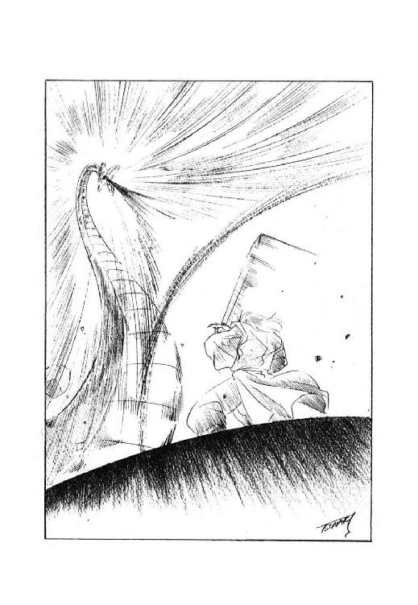
緊張に満ちた一瞬が過ぎる。そして、私の身体には何の変化も起こらなかった。
「な、なにい!?」
黒蛇魔獣公が、愕然とした声を出した。
「なぜだ!? なぜ、石にならぬ!? なぜ、余の能力が通じぬのだ!?
じじい、貴様いったい、何者だっ!?」
「儂は、魔獣に反抗する魔道士、ザシャム」
そう言いながら、私はすうっと中空に浮揚した。
「遠からず、驕れる魔獣とその追従者に天より強力な鉄槌が下る。
儂は、その日までに無辜の民を魔獣より引き離すべしという天命を受け、及ばずながら力を尽くしておるのじゃ」
「なにを、馬鹿げた戯言をほざくかっ！」
ナルキソス公が喚き、黒蛇魔獣が凄まじい勢いで私に襲いかかる。
しかし私は、ひらりと空中で身を躱し、黒蛇魔獣の背後に回り込んで『斬魔獣剣』を振るった。
「でりゃあっ！」
「ぐおおおおおおおっ！」
『斬魔獣剣』から放たれた青白い反魔獣力素波動をまともに受け、黒蛇魔獣公が苦悶の叫びを上げる。
「なぜだっ！ なぜ、不可侵の魔獣公たる余の身に、このような苦痛が生じるのだっ！
なぜだああああああっ！」
「その苦痛こそが、儂が天命を受けている何よりの証なのじゃ」
おそらく、かつて経験した事のないであろう激しい苦痛に身を捩り、闇雲にのたうち回る黒蛇魔獣の長大な身体を躱しながら、私は意図的に淡々とした調子で答えた。
「天の加護がなければ、一介の魔道士である儂が魔獣に損傷を与えるなど、とうてい不可能じゃからのぉ」
「ぬおおおおっ！
おのれ、おのれ、おのれええええええっ！」
ほとんど半狂乱と称してもよさそうな絶叫とともに、黒蛇魔獣は身体を大きく反転させて、私に向かって突っ込んでくる。
「ひゅうっ！」
衝撃波さえ伴う魔獣の猛烈な突進を、私は文字通り間一髪で辛うじて避けた。
そして、飛びさがりざま『斬魔獣剣』を振るって、更に反転しようとする黒蛇魔獣の鼻先に反魔獣力素波動を叩きつける。
「ぎゃあああああああああああっ！」
聞く者の魂を凍らせるような凄まじい苦痛の叫びを上げ、黒蛇魔獣は頭部を思いきり弾かれたかのように身を反らせる。
そして、これ以上の戦闘は不利だと判断したのか、それとも単に苦痛のために恐慌を起こしたのか、黒蛇魔獣は、そのまま頭部を大地に突っ込ませ、驚くほどの素早さで地底に潜り込んでいった。
「逃げたか......
それとも、また攻撃してくるか......」
空中で『斬魔獣剣』を構えたまま、私は小さく呟いた。
こちらから地下に追い討ちをかけるという方策も考えないではなかったが、黒蛇魔獣は地底戦を得意とすると言われている。ただでさえ手強い魔獣と闘うのに、相手が得意とする場所へ赴くのは危険だ。だいたい、私が目的としているのは、黒蛇魔獣を討ち果たす事などではない。
と、地の底から、陰々滅々とした声が響いてきた。
「ザシャムとか申したな。
魔獣に逆らい、余の身体に傷をつけ、このまま無事で済むなどと思うなよ。
必ずや存分な報復を行ない、今夜さっさと余に屈しておけばよかったと、心底後悔させてくれる！
覚えておれっ！」
「ナルキソス公こそ、儂への報復などを念じる前に、自分の未来がどうなるか、案じておいた方が良いぞ。
天が魔獣に災いを下す日は、それほど遠くはないのじゃからな」
黒蛇魔獣公が聞いているかどうかは分からなかったが、とりあえず私は、できるだけ悠然とした口調で返答した。
それから『斬魔獣剣』を鞘に収め、ゆっくりと地上に降下しながら、軽く苦笑して小さく呟く。
「どうやら、この場はなんとか勝てたようじゃな......」
しかし、次は分からない、と、私は声には出さずに続けた。
今回は完全に不意を襲う事ができたが、この次はそうはいかない。
黒蛇魔獣公は、同じ失敗を二度繰り返すほど無能ではないのだ。次に黒蛇魔獣が私の前に現われる時には、私の力を封じるために何らかの対策を講じてくるに違いない。
それに、魔獣公は魔獣の力を備えた超人であると同時に、広大な領土と多くの民を治める権力者でもある。
魔獣の力には超魔道具で対抗する事ができても、たとえば、黒蛇魔獣公が何万もの大軍を組織して、本格的にヴァンモン攻略に乗り出してきたらどうするのか。
あるいは、黒蛇魔獣公が神聖魔獣都市に要請を出し、魔道士を助っ人に加えて攻めてきたらどうするのか。
「......できれば、人とは戦いたくないのぉ」
生贄の丘に降り立って、私は小さく呟いた。
私の目的は、魔獣と人間を離反させる事にある。人間同士が戦い合うような状況は、できれば避けたい。
そのためには、魔獣の権威を失墜させ、人間が魔獣の命令を聴かなくなるように仕向ける必要がある。せっかく人間が魔獣に勝つという前代未聞の快挙を成し遂げたのだから、魔獣の権威失墜のためには、これを天下に広く知らせなくては意味がない。
しかし現在の私には、ヴァンモンという守るべきものがある。力の及ぶ限り守護すると約束した以上、ここを放置して他所へ出かけるわけにはいかない。
「......うーむ、なかなか難しいのぉ」
思案しながら、私はヴァンモン集落に向かってゆっくりと歩を進めた。黒蛇魔獣と対決するまでは、その先の事まで思考が回らなかったが、こうしてみると、考えなくてはならない問題は山のようにある。
と、集落の近くまで来たところで、松明を持った数人の男たちが小走りに私に近付いてきた。
その先頭に立っていたアーロン・ブレイキーが、私の顔を見るなり、表情をくしゃくしゃに歪めて叫ぶ。
「ザシャム様！ よくぞ、よくぞ御無事でっ！」
「おお、心配をかけたようじゃのぉ」
本当は遥かに年長の相手に、私は鷹揚にうなずいて見せた。
「黒蛇魔獣はさすがに手強い相手じゃったが、なんとか損傷を与えて撃退する事ができた。
おそらく、これで当分は現われまい」
「おお、左様でしたか......」
安堵した表情で、アーロン・ブレイキーは大きく溜息をつく。
「魔獣が地中から出現して、また地中に消えたのは、集落の方からも見て取れたのですが、ザシャム様の御様子までは分からず、皆、気を揉んでおりました。
中には、即座に集落を捨てて逃げようと言う者もおりましたが、とにかくザシャム様の安否を確認しなくてはならんと説得して、ちょうど今、出てきたところだったのです」
「なるほどのぉ」
相手の説明に再びうなずいた時、私の頭の中に、ふと、何かが閃いた。
......考えてみれば、私が守護する対象はヴァンモンの住民たちであって、集落がある土地ではない。このまま黒蛇魔獣公の領地内に留まっていなくてはならない必然性は、今や、なにもないのだ。
うまく他の魔獣公、たとえば巨竜魔獣公の領地に逃げ込む事ができれば、黒蛇魔獣公とて迂闊に手出しはできない。少なくとも、魔獣公同士で延々と交渉をしなくてはならなくなるだろう。そこに隙が生じるし、時間を稼ぐ事もできる。
それに、ヴァンモンの住民を連れて交易路を移動してゆけば、いやがうえにも沿道に噂が流れる。うまくいけば、黒蛇魔獣公が人間の魔道士に敗れたという情報が、交易路沿いに広く伝わる可能性がある。
「......アーロンよ。ヴァンモンの衆は、みな起きておるのかの？」
私が訊ねると、アーロン・ブレイキーは即座にうなずいた。
「はい、ザシャム様。
今宵のヴァンモンでは、今年生まれた赤子ですら、眠らずにじっと息を潜めております。
また、主立った者たちは、皆、私の家に集まっております」
「うむうむ。それは重畳じゃ。
では、さっそくお主の家に赴くとしよう」
そう言いながら、私は集落の門へと向かう足を早めた。
「ヴァンモンの衆に、告げねばならぬ事がある」
黒蛇魔獣と対決した翌日、私はヴァンモン集落の住民全員（もちろん、獣人族は除くが）を引き連れて、巨竜魔獣公領へと旅立った。
今まで、ほとんど集落から出る事を許されず、他の土地など見た事もないヴァンモンの住民たちではあったが、魔獣を撃退した私の指示には素直に従い、一夜のうちに旅支度を整え、生まれ育った集落を後にしたのである。
この素早い集団逃走に対して、黒蛇魔獣公側の対応は、有難い事にかなり鈍かった。最初の数日間は何の規制も行なわれなかったらしく、交易路を行き交う隊商が私たちの一行に近付いてきて、好奇心もあらわに事情を訊ねたり、不足している物資を売ってくれたりした。また、宿駅や途中の集落でも、特に咎められるような事はなかった。
もっとも、こちらの一行の者が交易商人たちに、私が黒蛇魔獣を撃退した顚末を語ったりすると、彼らは互いに顔を見合わせ、それからこちらの正気を疑うような表情になる事がほとんどだった。また、宿駅や集落でそういう話をすると、聞き手はあっけにとられた表情になり、場合によってはいきなり血相を変えて、そんなとんでもない話をされては困る、さっさと出てってくれ、と喚き出す事もあった。
こういった状況が変化してきたのは、だいたい移動を開始してから十日目ぐらいからだったと思う。
この頃から交易商人が姿を見せなくなり、代わりにというか何というか、宿駅や集落が近くなると、兵士や戦士が私たちの行く手を遮るようになった。
ところが、この兵士や戦士たちは、おおむねひどく戦々恐々とした様子で私たちの前に現われ、必要な物資はできるだけ提供するから、どうか自分たちが所属する宿駅や集落を避けて進んでくれと低姿勢で頼み込んでくるのである。そして私たちが了承すると、こっそりと小声で、あなたがたは本当に魔獣公様に反逆しているんですか、そんな事をして無事でいられるんですか、などと訊ねてくるのだ。
まあ、中には、魔獣公様に逆らう無法者、拙者が成敗してくれる、などと喚きながら突っ込んでくる能天気な戦士もいなかったわけではない。しかし、そういう間抜けは即座に私の念に絡め取られ、アーロンたちに縛り上げられて、武器と鎧を没収された上で交易路の脇に放り出されるのが常だった。
また、一度だけ、弩弓隊に待ち伏せされて、問答無用で矢を射かけられた事があったが、殺気を察した私が事前に念障壁を張っておいたので、幸いまったく被害を受けずに済んだ。この時は、私も一行の者たちも腹を立て、縛り上げた弩弓隊全員の武器と鎧を没収するのみならず、衣服を剝ぎ、髪を丸刈りにして、交易路の脇に晒しものにしたのである。
そして、それ以降はそれほど大きな妨害を受ける事もなく、私たちは黒蛇魔獣公の領地を出て巨竜魔獣公の領地に入った。私は、ヴァンモンから連れてきた人々を小規模なオアシスの一つに導き、ひとまずその地に腰を据えた。
もちろん意図的にそういう場所を選んだのではあるが、私たちが到着したオアシスの周辺では、ナルキソス家とレギオン家の間で、国境を巡る紛争が長年にわたって行なわれていた。現在は一応小康状態になっているが、黒蛇魔獣公にしろ、巨竜魔獣公にしろ、一つ間違ったら魔獣公同士の抗争になりかねないため、この地域では迂闊に動く事ができない。それが、私たちの付け入る隙になるというわけだ。
しかし、だからといって黒蛇魔獣公が私に対する報復を諦めるわけがない。また巨竜魔獣公とて、魔獣に反抗する魔道士の率いる勢力が自分の領内に入ってきたのを、いつまでも黙って見ているはずがない。
巨竜魔獣公領に入って以来、主として黒蛇魔獣公領から逃げ出してきた罪人など、魔獣公の治世に不満を持つ者たちを加え、私の配下の民は日に日に人数を増していった。そして私は彼らに初歩の魔道などを教えながら、魔獣公たちがいつ、どこで、どのように動くか、油断なく注目していた。
ところが、実際に巨竜魔獣公が行動を起こした時、私は完全に意表を突かれてしまった。なんと巨竜魔獣公はいきなり密使を送ってきて、私と内密に話をしたいと伝えてきたのである。
しかも、その密使は巨竜魔獣公レギオン十七世の甥、つまり、私が十二年前故郷に残してきた息子だったのだ。
「......本当に行かれるのですか、ザシャム様」
私が巨竜魔獣公と話をしに行くつもりだと打ち明けると、当然ながら、アーロン・ブレイキーは心底不安そうな表情になった。
「ザシャム様が天命を奉じて魔獣に反抗している事実は、既に巨竜魔獣公の耳にも入っているはずです。
にもかかわらず、話をしたいなどと申し入れてくるのは、これは罠ではないでしょうか？」
「罠かも知れぬ。しかし、そうでないかも知れぬ」
できるだけ悠然とした態度を装いながら、私は諭すような口調で答えた。
今や、名実ともに私の腹心の部下として配下の民を束ねているアーロン・ブレイキーだが、さすがに彼に対しても、巨竜魔獣公の兄という私の素性は打ち明けられない。それに巨竜魔獣公の方だって、私が失踪した兄だと気付いてはいるわけではないし、たとえ万が一兄だと分かったところで、それで態度を和らげるとも思えない。
だから冷静に考えれば、真の素性がどうであろうとも、私は魔獣に反抗する魔道士ザシャムとして巨竜魔獣公に対処するしかないのだ。
「伝え聞くところでは、巨竜魔獣公と黒蛇魔獣公とは累代にわたって仲が悪く、また当代の巨竜魔獣公は、魔獣公候補としての訓練を受けずに魔獣と合体した変わり種との事じゃ。もしかすると、黒蛇魔獣公などとはまったく異なる考えを持っておらぬとも限らぬ。
そして、巨竜魔獣公が真に儂と話をしたいと望んでおるなら、これは魔獣公に対して平和裡に我が天命を示す、千載一遇の好機じゃ。見逃すわけにはいかぬ」
もはや老人の演技をしているという意識もなく、私はごく自然に、淡々とした口調でアーロンに自分の意志を告げた。
「また、もしも巨竜魔獣公が儂に会見を申し入れておいて、陰で罠を仕掛けるような悪謀を企んでおるのなら、敢えて罠に入ってこれを嚙み破り、天下に彼の陰険さを暴露するまでのことじゃ。
大言壮語するようじゃが、天命を受けたこのザシャムを、即位して間もない若造の巨竜魔獣公が思いつく程度の罠で陥れる事はできぬ」
そう言って私は、依然として不安そうな表情のアーロン・ブレイキーを見やった。
「ただ一つ、儂が留守にしている間に、我が民であり我が弟子でもあるお主らが襲われはせぬかという懸念がある。しかし、その点についても対策はある」
にんまりと、殊更に余裕ありげな笑みを浮かべ、私は自分の頭から『対魔獣用守護冠』を外した。
「アーロンよ。儂が留守の間、お主にこの『対魔獣用守護冠』を授ける。
儂が伝授した魔道の技と、この『対魔獣用守護冠』の力があれば、たいていの危機は容易に切り抜けられよう。
そして、もしも魔獣公が自ら襲来してくるなどという、お主が対処できる限界を越えた窮地が生じた時には、『対魔獣用守護冠』を通じて儂を呼ぶがよい。儂は必ず戻ってきて、我が力の及ぶ限りお主たちを守護しよう」
「ははあっ！」
ほとんど平伏せんばかりに恐縮して、アーロンは私の手から『対魔獣用守護冠』を受け取る。
「ザシャム様......我ら如き凡人に、これほどまでの御配慮、畏れ入ります」
「なぁに、世界はもともと凡人の所有物なのじゃ。
そこのところ、心得違いをするまいぞ」
私は意図的に軽い口調で言い放ち、『対魔獣用守護冠』を恭しく捧げ持つアーロン・ブレイキーの肩をぽんと叩いて笑った。
「畏まっておらんで、その『対魔獣用守護冠』を早う装着してみよ。
それが正しく作動するかどうかの確認を終えぬと、儂が出発できんのじゃよ。
とにもかくにんも、確認をせねばのぉ」
「は、はぁ......」
アーロンは困惑した表情になって、私の顔を見返す。
......うーむ、有能な男で、魔道の才能もあるのじゃが、駄洒落の理解力だけはいまいちじゃのぉ。
まあ、何事も完全無欠というわけにはいかんが。
「ザシャム様におかれましては、我が君レギオンの申し出をお受けいただき、心より感謝致します」
私が巨竜魔獣公の元へ出向く旨を伝えると、レギオン公の密使として遣わされてきた少年は、堅苦しい口調で謝意を告げ、深々と頭を下げた。
この少年密使は、巨竜魔獣公レギオン十七世の甥ロビスと名乗っている。ならば、他ならぬ私の息子に相違ない。
しかし、正直なところ、十二年前に故郷に残してきた赤子の印象を、目の前の大柄で大人びた少年に繫げる事は、私にとっては不可能に近かった。もちろん彼の方も、この老人としか見えない魔道士の正体が、まさか失踪した自分の父親だなどとは、それこそ夢にも思わなかったに違いない。
「お主は徒歩で来たのであろうが、儂は、あまり長期間、この地を離れていたくない。
巨竜魔獣公のおわすタラスコンへは、魔道の技を使って移動するつもりじゃ」
そう言って、私は少年をじっと見やった。
「儂と同道するかな？
それとも、お主は徒歩で戻るか？」
「できれば御同道させていただきたいですが、それはザシャム様のお心のままに」
丁寧ではあるが、はっきりとした声で少年が答える。私はうなずいて、少年に向かって片手を伸ばした。
「ならば、儂の手を摑んでおるがよい。もしも放したら、生命の保証はせぬぞ」
「はい」
怖れげもなく、少年は私の手をしっかりと摑んだ。
そして次の瞬間、私と少年の身体がふわりと宙に浮き上がり、そのまま急速に高空まで上昇する。
「わあっ！」
少年が初めて年齢相応の声を出し、目を皿のように開いて周囲を、そして地上を見回す。
一方、私は方角と距離を悠然と見定め、タラスコンへ向かって飛行を開始した。
私が滞在している場所から、巨竜魔獣公が腰を据える土地までは、空間移動できるほど近くはないが、大陸や大洋を隔てているわけではない。この程度の距離なら、念の力で飛行してゆくのが最も速い、と、私は判断したのである。
まあ、普通の魔道士にとっては、念の力で長距離飛行などしたら（しかも、少年とはいえ他人を連れて飛んだりしたら）あまりにも消耗が激しすぎるだろうが、現在の私には、その程度の消耗は許容できるだけの、大きな念の蓄積がある。しばらく高速で飛行した後、私たちは無事にタラスコンの地に降り立ったが、飛行のために消耗した分の念は即座に亜空間から補充され、私は出発した時と同様に平然としている事ができた。
「有難うございました、ザシャム様。実に得難い体験をさせていただきました」
駆けつけてきたタラスコンの警備兵に、毅然とした態度で申し送りを済ませた後、少年は私に向かって深々と頭を下げた。
「高空から見ると、都市も、人も、軍隊も、本当にちっぽけなものなのですね。
ほんの僅かの間でも、このような視点で天地を俯瞰する事ができて、私の感覚は大きく変化しそうです。
有益な体験をさせていただいて、心から感謝致します」
「うむ、うむ。若いうちは、何事もまず体験してみる事じゃよ」
私は悠然とした態度を装ってうなずいたが、正直なところ、何一つ親らしい事をしてやっていない息子からこの程度のことで丁重に感謝されるのは、どうにも身の置き場所が無いというか、とことんばつが悪い気分だった。
そして私は、早々に少年と別れ、巨竜魔獣公が待つ宮殿に向かった。
巨竜魔獣は、魔獣の中では比較的機動力に劣ると言われている。
むろん、巨大な身体に見合った歩幅があるので、人間よりは遥かに速く移動できるが、たとえば黒蛇魔獣が、一日に十日旅程以上を楽々と進むと言われるのに比べると、まったく問題にならないほど遅い。
また、黒蛇魔獣のように、地底を密やかに移動するなどという芸当もできないので、巨竜魔獣が動く時には、ほとんど山が動き出すような物々しい状況になる。
そういうわけで、代替わりで北方神聖魔獣都市に赴くなどの特別な事態を除いては、おおむね巨竜魔獣公は宮殿の中に鎮座して動かないというのが、レギオン家の不文律になっていた。
私が幼い頃、何度か祖父のレギオン十四世と対面したのも、すべてタラスコン宮殿の謁見の間だったし、今、弟と会うために通された場所も、同じ謁見の間だった。
ただ、祖父と対面した時と異なっているのは、祖父は（そして、歴代の巨竜魔獣公は全員同じなのだが）謁見者を巨竜魔獣の足元遠くに通し、斜めに見下ろす形で対面したのだが、弟は巨竜魔獣の頭の高さに台を設け、謁見者が巨竜魔獣ではなく、人間態のレギオン公と対面できるようにしていたのである。（もっとも、弟も、すべての謁見者に対してそういう扱いをしていたわけではなかったらしいが）
そして、謁見台に上った私が礼をするが早いか、腰から下を魔獣と融合させた弟は、にこっと嬉しそうに笑って、まるで当たり前のような口調で言った。
「やはり、魔道士ザシャムとは兄上でしたか」
「......！」
この時、私は不覚にも、思わず絶句してしまった。
第三章 決着
「......どうして分かった？」
今まで誰にも明かさなかった正体を、対面すると同時に見破られた私は、二呼吸の間ほど絶句した後、いささかためらいながら弟に訊ねた。
すると弟は、微かに笑みを浮かべたまま、小さく首を横に振る。
「兄上、私たちは双生児ですよ。
それに私の感覚は、魔獣と合体して以来、自分でも怖くなるくらい鋭くなっているんです。
兄上を直接目の前にして、見誤るなどという話があるものですか」
「そうか......」
思ってもいなかった事態の展開に、私は半ば呆然となって唸る。
そして弟は、真顔になって私に訊ねかけてきた。
「兄上。
いったいなぜ、いきなり失踪などなさったのですか？
しかも、魔獣公の後継者だった兄上が、魔獣に反抗する魔道士に変貌して活動されるというのは、いったいどういうわけなのでしょう？
お願いですから、無学な私にも分かるように、御説明いただけないでしょうか？」
「......そうだな。この期に及んで、お主に隠し立てをしても仕方がない」
うなずいて、私は改めて弟を見据えた。
いきなり魔獣公にさせられて、まだ一年も経っていないはずだが、弟の表情には君主にふさわしい叡智と沈着さが見て取れた。もっとも、この時の私は、少なからず弟に気おされていたから、それと身贔屓を含めて、実体以上に彼が立派に見えたのかも知れないが。
「信じて貰えるかどうか分からないが、私の体験を、そのまま話そう」
そう言って、私は話を開始した。
「魔獣王様と敵対する超越者、ルファール、ですか......」
私の長い話をすべて聞き終えた後、弟は眉を寄せ、深く考え込む表情で、小さく首を横に振った。
「いったい、誰をどこまで信じたらいいのだろう......」
ほとんど独言のように呟くと、彼は眉を上げて私に目を向ける。
「兄上の体験を、疑うつもりはありません。
ただ、その、亜空間ですか、そこに出現したルファールという存在が、どの程度まで真実を語っているのか分からないだけです」
「当然だな。私にだって、ルファールの言葉が真実か否かなど、分かりはしない」
真面目な表情で、私はうなずいた。
「ただ、ルファールは、亜空間で遭難しかかった私を簡単に拾い上げ、魔獣公に対抗できるほどの力を付与した。凄まじく強い力を持つ超越者でなければ、とてもこんな真似はできまい。
そして私は、そういう存在から、魔獣と人を離反させねば両方を一挙に滅ぼすぞ、と、宣告されてしまったのだ。さすがに、これを無視はできない」
「......そうですね」
弟は、憂いに満ちた表情で溜息をついた。
「正直なところ、思いがけなく魔獣公になってからずっと、私は魔獣とは何なのか、何のために、誰のために存在するのか、考え込んでいました。
人間のために魔獣が存在するとは、とうてい思えません。かといって、魔獣王様のために魔獣が役に立っているようにも思えない。
こんなわけの分からない状況の中で、人間である私が魔獣と合体したのは、いったい何を為すためなのか、ずいぶん悩みました」
「うーむ......」
真摯な口調で悩みを語る弟、いや巨竜魔獣公を見やって、私は思わず低く唸る。
もしも私が亜空間で遭難せず、あのまま北方神聖魔獣都市にたどり着いて巨竜魔獣公になったとしたら、果たして魔獣の存在意義について悩んだりしただろうか？
幼い頃から魔獣と合体するのが当然と思い込んでいた私と違って、完全に普通人として育てられた弟は、魔獣を客観的に見て、その存在の不明確さに疑問を持ったのだろう。
しかし、弟がやったような純粋で徹底的な、ある意味では自己破滅に繫がりかねない思索的追究は、私にはとてもできない。考えすぎかもしれないが、この時、私は弟に対して、明らかな畏怖を感じていた。
「なぜ、魔獣王が人間と魔獣を合体させているのかは、ルファールですら見当がつかないと言っていた。
ただ、ルファールの側から見ると、これは倫理的に許されない行為のようだな」
「ルファールにとっては、そうなのでしょう。
しかし私は、魔獣王様には別の言い分があると思います」
また独言のように呟いた瞬間、弟は不意に、何か大きな決断がついたような表情になる。
そして、思わずたじろいでしまうような真摯な光を宿した目をあげて、彼は私をじっと見据えた。
「兄上。
不遜な考え方かも知れませんが、兄上が魔獣公になる直前に失踪し、私が思いがけなく巨竜魔獣と合体する事になったのも、兄上がルファールに遭遇されたのと同様に、ひとつの天命かも知れません。
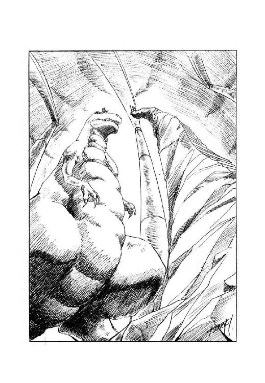
兄上は、亜空間から現実世界に戻られた後、ルファールの指示通りに人間と魔獣を離反させるか、それとも魔獣王様に危機を訴えるか、思案されたとおっしゃいましたね。
ルファールに直接対面し、しかも人間の身を保たれている兄上は、ルファールの指示を天命として、今まで通り人間と魔獣の離反を推進なさるべきでしょう。
しかし私は、魔獣王様より下賜された巨竜魔獣と合体し、魔獣公の称号をいただいている身です。いかに超越者であろうとも、魔獣王様に敵対するルファールを、天命の主と仰ぐわけには参りません。
ですから私は、兄上が思案された第二の道を進もうと思います」
「第二の道を進むというと、つまり、魔獣王や超越魔獣に対して、敵対者が迫り危機が近付いている事実を、現在の社会機構を通じて訴えようというのだな」
我ながら間の抜けた感じがしないでもなかったが、私は意気軒昂としている弟に、念を押すような口調で訊ねた。
「しかし......果たして、埒が明くかな？」
「さあ、それは試みてみなければ分かりません」
そう言って、弟はちょっと眩しい感じのする笑みを浮かべた。
「しかし、新米であろうと変わり種であろうと、とにかく私は魔獣公です。
神聖魔獣都市の魔獣神官は、魔獣を崇める種族の鋼鉄人がほとんどですからね。
魔獣公である私が強く訴えれば、そう簡単に黙殺はできないはずです」
「確かに建前上はその通りだが、強く押せば押すほど、反感を買うのも事実だ。
他の魔獣公も黙ってはいないだろうし、下手をすると、世界中を敵に回す事になるのではないか？」
私が懸念すると、弟は笑顔のまま小さく肩を竦めた。
「世界中を敵に回してでも、やらなくてはならない事はあります。
それは、兄上が誰よりも一番御存知でしょう？」
「......それもそうだな」
思わず苦笑を浮かべて、私はうなずいた。
今更考えてみるまでもなく、私自身が、僅かな配下の民を除けば世界中のすべてを敵に回して闘っている最中だった。
これでは、とても弟に意見などできた義理ではない。
「いずれにしても私が本気で訴えれば、魔獣王様までは及ばないにしろ、超越魔獣の方々までは届くと思います」
真顔に戻って、弟はまた独言のような調子で呟いた。
「問題は、その後ですね。
超越魔獣の方々が、我々魔獣公、つまり複製魔獣と合体した人間を、どの程度に評価なさっておられるのか......」
「それこそ、試みてみなければ分かるまいなぁ」
弟の口調に濃い不安の匂いを感じつつ、私は敢えて、ほとんど何の役にも立たない返答をした。
「何しろ、超越魔獣の姿を見た事のある者は、魔獣公の中にもいないのだからな。
彼らが何を考えているかなど、推察のしようがあるまい」
「そうですね......」
再び憂いを帯びた表情になって、弟は小さくうなずく。
しかし、彼はすぐに顔を上げ、私に向かって深々と頭を下げた。
「兄上。
私の招きに応じて、ここまで出向いて下さった事を、心から感謝致します。
再び兄上にお会いできて、本当に良かった」
「......私は、お前に詫びねばならない」
重い調子で呟いて、私も弟に向かって深々と頭を下げた。
「本来なら、巨竜魔獣という運命の重荷は、私が負うべきものだった。
普通の人間として生きていけるはずだったお前に、世界や人間全体の未来についての悩みを負わせる事になったのは、まぎれもなく、私が負うべき責任を負わなかったせいだ。
今更、何をどうできるというものでもないが、せめて謝罪をさせてほしい」
「申し訳ありませんが、兄上、私としては、その謝罪は受け入れかねます」
静かな口調で弟が応じ、私ははっとして顔を上げた。
「兄上が御自分の意志で巨竜魔獣との合体を避け、私に魔獣公の地位と責任を押しつけたのであれば、謝罪をしていただくまでもなく、私の方から兄上を糾弾致します。
しかし、兄上は亜空間で遭難して九死に一生を得、結果的に父上の死に間に合わなかっただけではありませんか。この状況では、兄上が受けるべき権利を奪ったとして、私の方が糾弾されてもおかしくないでしょう。
ましてや、兄上に謝罪していただく筋合は、どこにも見当たりません」
そう言って、弟はまたにこっと笑った。
「兄上。
さきほども一度申し上げましたが、兄上が亜空間でルファールに会い、魔獣に反抗する者として使命を受けたのも、私が兄上の代役として巨竜魔獣との合体に成功し、魔獣公の地位を授かったのも、私にはどちらも天命と思えるのです。
兄上が私に重荷を押しつけたとか、私が兄上の権利を奪ったとか、そういう考え方をするのは、大仰に言えば天に対する冒瀆ではないでしょうか。
私たちは、それぞれの天命に従って、やるべきことをやるしかないと思います」
「......確かに、お前の言う通りだろうな」
笑顔の弟とは対照的に、私は沈痛な表情でうなずいた。
確かに弟の言う通り、天に対する冒瀆なのかも知れないが、私の胸の中からは、弟に悪い事をしてしまったという罪悪感が消えなかった。
私が魔道修行をしていた十二年間、弟がどういう具合に人生を過ごしてきたのか、私はほとんど何も知らない。しかし、私よりも弟の方が、ずっと人生を真摯に、かつ肯定的に捉えているのは良く分かった。
「......この性格なら、魔獣公などになりさえしなければ、間違いなく平穏で幸福な生涯を送れただろうに」
もはや口には出さず、私は胸の中で呟きながら、弟を見やった。
巨竜魔獣公と対面した私は、その日の内に、私に従う民の待つオアシスに戻ったが、その後しばらく、特に目立った動きを起こさなかった。
アーロン・ブレイキーを筆頭とする周囲の者には、今は情勢を静観すべき時なのじゃ、などと言い訳をしていたが、要するに私は、弟との対面以来いろいろと考え込む事が多く、自分から動き出そうという気が全然起きなかったのである。
そして巨竜魔獣公レギオン十七世の方は、私とはまったく対照的に、堰を切ったように活発な行動を開始していた。
彼はまず、自分の配下にいる民に向けて、世に大いなる危機が訪れようとしている、と宣告した。そして、私は魔獣の力を使って危機に立ち向かわなくてはならないので、お前たちは魔獣に頼らず、自分の力で生活するようにせよ、と、言い渡したのである。
この唐突な宣言に、当然ながら人々はあっけにとられた。しかし、巨竜魔獣公は配下の民から租税を徴収するのをやめたばかりか、累代にわたって宮殿に蓄積してあった財宝や食糧を、惜しげもなく民に分配した。また、タラスコンを警備していた兵士たちに、皆、自分の故郷を守るようにと告げ、武器や装備を持たせたまま軍隊を解散してしまった。
この恩恵に対して、民は喜ぶよりもむしろ不安がったようだが、それでもとりあえず騒動を起こすような事はなかった。ある意味では、外部から騒動が起こったため、巨竜魔獣公の領内では民が息をひそめる状況になったとも言える。
外部からの働きかけとしては、まず、北方神聖魔獣都市から高位魔獣神官が遣わされて、巨竜魔獣公の真意を問い正そうとした。
すると巨竜魔獣公は、自分は魔獣に備わった超越感覚により天啓を受け、危機の到来を知ったのであると堂々と述べた。そして、叡智広大な魔獣王様や超越魔獣の方々が、この危機到来を御存じないとは思えないが、万一、気付いておられないとしたら一大事であるから、即座に適切な手段を講じよ、と、逆に高位魔獣神官に詰め寄ったのである。
これに対して高位魔獣神官は、魔獣王や超越魔獣から危機を告げる神託などが出されていない事、巨竜魔獣公以外の魔獣公が誰一人として危機の到来を感じていない事などを、いかにも鋼鉄人らしく論理的に指摘し、何か感覚に変調でも起きたのではないかと巨竜魔獣公に問い正した。
しかし巨竜魔獣公は、自分の感覚に変調があれば、体調を監視している魔獣神官がとっくに察知しているはずだと言い張り、最後には、貴公らが本気にしないなら私自身が北方神聖魔獣都市に乗り込んで、魔獣王様なり超越魔獣の方々なりに直訴するぞ、と、脅迫じみた言葉まで口にしたという。
結局、高位魔獣神官は何の成果もなく引き上げていったが、その直後、黒蛇魔獣公から北方神聖魔獣都市に対して、巨竜魔獣公は魔獣に反抗する不逞の魔道士ザシャムと結託している疑惑がある、という提訴が為された。
これはあくまで疑惑であって、結託の証拠を摑んでいるわけではないのだが、魔道に長じた魔獣神官たちに事実関係を詳しく調べられたら最後、私が巨竜魔獣公と会った事などすぐ分かってしまうだろうし、場合によっては私の素性も見抜かれかねない。
実際のところ、私が動きを止めて事態を静観していたのも、この提訴がどう受け取られるか見極めなくてはならなかったからだ、と、言って言えない事もない。
一方、北方神聖魔獣都市の周辺に住む、実質的黒蛇魔獣公に支配されている人々や、その界隈を往来している交易商人たちも、神経を鋭く尖らせて事態の推移を見守っていた。
彼らの間では、巨竜魔獣公は黒蛇魔獣公と一戦交えて北方神聖魔獣都市を制圧する覚悟のようだ、とか、その時には魔道士ザシャムが巨竜魔獣公に加担するらしい、などという物騒な、ある意味ではしっかり核心を突いた噂が、既に公然と語られていた。
私の元に新しく集まってきた民の中には、交易商人と繫がりのある者もかなりいるので、そういった情報は、意外に素早く伝わってくる。また、アーロン・ブレイキーなどは、いつの間にか高度で大規模な情報網を作りあげて、あちこちの町に諜者を送り込んでいるらしい。
そして、私が巨竜魔獣公と対面してからおよそ四十日後の朝、アーロンが血相を変えて私の元にやってきた。
「ザシャム様！
既にお耳に入っておられるかもしれませんが、ついに巨竜魔獣公が、北に向かって動き出したようですぞ！」
「ふむ」
内心の驚愕と動揺を押し殺し、私は悠然とした態度を作ってうなずいた。
「ついに動いたか。
しかし、これで巨竜魔獣公の謀反は、ほとんど決定的になったのぉ」
「北方神聖魔獣都市でも、そう考えているようですな」
興奮しきった表情で、アーロンが口早に言う。
「黒蛇魔獣公が魔獣神官長に請われて、北方神聖魔獣都市の防衛に当たる事になったという、発表があったようです。
魔獣公同士が激突するのは、まず間違いないでしょう」
「なるほど。
そうなるとしばらくは、こちらに攻撃を掛ける余裕など、おそらく誰にもあるまいのぉ」
呟いて、私はゆっくりと立ち上がった。
「どうやら、またお主に留守を頼む時が来たようじゃ」
「そ、それではやはり、ザシャム様は巨竜魔獣公に加担なさるのですか？」
訊ねるアーロンに向かって、私はゆっくりと首を横に振った。
「まだ、そうと決まったものでもない。
巨竜魔獣公と黒蛇魔獣公が本当に戦うかどうかも、まだ分からぬ。
まあ、儂が黒蛇魔獣公に加担する事だけは、絶対にないじゃろうがのぉ」
そう言って、私は軽く笑った。
「すべては、成り行き次第じゃよ。
そして、成り行きに行動を合わせるには、その場に居らねば話にならん。
では、留守を頼むぞ」
「ははっ！」
巨竜魔獣公の元へ出向いて以来、私は『対魔獣用守護冠』をアーロンに預けたままにしてある。後顧の憂いは、ほとんどないに等しい。
深々と礼をするアーロン・ブレイキーを残して、私はゆっくりとした足取りで外へ出た。
その日の深夜、私は常人の目には見えないよう全身に濃い夜闇をまとい、空中に漂うようにして巨竜魔獣の頭部に近付いていった。
しかし、いかに高度な魔道でも、魔獣の超越感覚を誤魔化す事はなかなかできない。弟はすぐに私の存在に気が付き、低く小さな声で話し掛けてきた。
「兄上、おいでいただけて嬉しいです」
「迷惑ではなかったかな」
私が応じると、弟は微笑して首を横に振る。
「いいえ。もはや兄上との繫がりが露見しようがしまいが、魔道神官たちは私の言葉など聞き入れないでしょうから。
お気遣いいただいては、かえって恐縮です」
「......やはり、埒は明かなかったようだな」
いささか躊躇しながらも私が囁きかけると、弟は微笑を消してうなずいた。
「どうやら、考えが甘かったようです。
同じ魔獣を崇める種族といっても、私が馴染んできた水棲人と、魔獣神官を務める鋼鉄人では、魔獣公に対する態度がまったく違うようですね。
それに黒蛇魔獣公が、こうも早々と敵対行動に出るとは思いませんでした」
「鋼鉄人は、魔獣を崇める種族といっても、超越魔獣の直属らしいからな。複製魔獣と合体している魔獣公に対しては、それほど絶対的な敬意は払わんのかもしれん」
今更こんな事を言っても、あまり意味がないかもしれないと思いつつ、私はとりあえず推察意見を述べた。
「それから、黒蛇魔獣公が短気を起こしたのは、おそらく私のせいだろうな。魔獣公同士の抗争ならとにかく、一介の魔道士に傷をつけられては、当然、頭に血も上るだろう」
「まあ、黒蛇魔獣公が敵対行動に出るのは、当然、予想しておくべき事項ですからね。多少、早いか遅いかの違いだけです」
呟いて、弟は小さく溜息をついた。
「いずれにしても、こうなったらもう後には引けません。
巻き添えを喰わせるわけには行かないので、一族の者は甥のレギオンに率いさせて、山の隠れ里に避難させました」
「うむ、それは賢明な処置だな」
弟の行き届いた配慮に、私は感心してうなずいた。
タラスコン北方の険阻な山奥にあるレギオン家の隠れ里は、家祖レギオン一世の故郷とも言われるが、場所を知らない者は近づく事すら難しい。世界全体が壊れてしまえば話は別だが、そんな事態にならない限り、隠れ里に籠っていれば何とか難を逃れられるという感覚が、レギオン家の者には共通して存在する。
「ところで、甥のレギオンというのは、密使に来た少年の事か？
私に対しては、確か、ロビスと名乗っていたようだが」
「ああ、それは彼の遠慮なんです」
そう言って、弟は軽く肩を竦めた。
「私が巨竜魔獣と合体して、リムスからレギオン十七世と改名するまで、レギオン十七世というのは彼の名前だったわけです。
で、私は彼にレギオン十八世を名乗るように言ったのですが、彼は、レギオンという名は私の息子に継がせるべきだと言い張って、ロビスと自称しているのです」
「......なるほど」
私が失踪したために、息子の立場まで複雑なものにしてしまったのだな、と、私は改めて溜息をついた。
「他人事のような言い方しかできんが、事は魔獣公レギオン家の相続問題に絡むわけだからな。
迂闊な扱いはできまい」
「しかし、現在の状態を何とかして乗り切らない限り、レギオン家の相続も何もあったもんじゃないですからね」
軽く首を横に振って、弟は話を元に戻した。
「今のところ、とにかく北方神聖魔獣都市を制圧する形勢を示して、魔獣神官たちから妥協を引き出す以外に方策がありません。いくら神聖魔獣都市が魔道の力で守られているといっても、魔獣と正面から闘ったら、無事では済まないはずですからね」
語る口調は淡々としているが、弟の表情には明らかに苦悩の色が見られる。
本来、穏やかで律儀な気性の弟にとって、力ずくで相手を屈伏させて主張を通すという行動は、どうにも不本意なものに違いない。
「もしも魔獣神官たちが最後まで妥協しないとしても、巨竜魔獣の力を全面発揮すれば、実際に北方神聖魔獣都市を制圧できなくはないと思うのですが」
「そうかもしれんが、それにはまず黒蛇魔獣と対決しなくてはなるまいな。また、場合によっては、大白蛇魔獣も出てくるかもしれん」
私が指摘すると、弟は厳しい表情でうなずく。
「大白蛇魔獣については、情報が少なすぎて対策の立てようもありませんが、黒蛇魔獣とは一戦交える覚悟でいます。
このまま大河を渡って、地下空洞の多い内陸荒野に入ったら、地底活動の得意な黒蛇魔獣の思う壺ですからね。私は、大河に沿って海へ出て、リムズベルの水塞から海岸沿いに北方神聖魔獣都市まで赴くつもりです。
そうなれば、黒蛇魔獣としても、素早く動こうと思ったら地上に出ざるを得ないでしょう。地上戦なら、巨竜魔獣の方が有利です」
「確かに作戦としては悪くないが、あまり海沿いに動き過ぎると、今度は大蛸魔獣に干渉されかねないぞ」
地図を頭に思い浮かべながら、私は弟に指摘した。
「大蛸魔獣公は、少しでも機会あらば陸の紛争に介入して、漁夫の利を得ようと狙っているからな。油断はできん」
「ええ、それは重々承知しています。こう見えても私は、巨竜魔獣公になる前には、リムズベルの水塞を水棲人といっしょに守っていたんですから」
そう言って、弟は微笑を浮かべた。
「ですから、大蛸魔獣が上陸可能な海岸はどのあたりか、或いは波打ち際ぎりぎりまで近寄って来られる場所はどこか、きちんと把握してあります。間違っても、二体の魔獣を同時に敵に回すような真似はしません」
「それならばいいが、戦闘というものは、いざ実行してみると思ってもいなかった状況になる事が多い」
ごく自然に戒めるような口調で言いながら、私は弟を見やった。
「私がお前に加担して闘うのは、その後の事を考えると、あまり得策ではないだろう。
しかし、その後の事など考えていられないような状況が、いつ発生しないとも限らない。
その時には、私はお前を助けて闘うつもりだ。
私には、複製魔獣一体ならば、充分に相手にできる力があるのだからな」
「兄上のお志は、心から感謝致します」
弟は微笑を消して、真面目な表情で頭を下げる。
「しかし、とにかくやれるところまでは、巨竜魔獣の力で押し通したいと思います。
その経緯を兄上に見守っていただければ、私としては望外の幸いです」
「そうだな。
私が出ないで事が収まれば、それに越したことはない」
しかし、果たして事が収まることは有り得るのだろうか、と、私は言葉に出さずに続けた。
弟の目算通り、黒蛇魔獣を撃退し、北方神聖魔獣都市の魔獣神官たちから妥協を引き出すなり、一気に制圧するなりできたとしよう。だが、それで事が収まるとは、私にはとうてい思えない。他の神聖魔獣都市の魔獣神官や魔獣公たちが、絶対に黙っているわけがない。
もし事が収まるとすれば、それは魔獣王や超越魔獣などの、人間には抗議のしようのない超越者が介入した場合しかありえないと思うが、はたしてそういった存在たちが弟の行為を認めるだろうか。超越者の裁量を予測しても意味はないのは承知しているが、どうも私には悪い想像しかできない。
とは言うものの、もはや後に引ける状況ではないのは、弟も私も明確に認識している。私は話題を変える事にして、弟に訊ねた。
「ところで、一族の者は隠れ里に避難させたという話だったが、見たところ、まだ残っている者もいるようだな」
「ええ。最後まで私と一緒にいると言って、どうしても聴かないものですから」
そう言ってしまってから、弟は小さく苦笑した。
「いや、最後までではないですね。事態に決着がつくまでです。まったく、どうにも聞き分けのない連中で」
「うむ......」
やはり弟も破局を予測しているのか、と、私は今更ながら罪悪感で胸が痛むのを覚えた。
その途端、最後まで弟と一緒にいると言って従ってきている者たちが誰なのか、私は感覚的に理解してしまった。
「......あれは、お前の妻子か」
「ええ。
瀕死の父上から魔獣と合体するよう指名された時に、合体が失敗すればもちろん、成功したとしても私は死んだと思えと、言い聞かせておいたのですが」
そう言って、弟は小さく首を横に振った。
「さすがにこの土壇場まで来ると、無下に追い払うわけにもいかず、やむを得ず連れて歩いております。
兄上には、お見苦しいところをお目に掛けて、恐縮です」
淡々とした口調で言って、弟は軽く頭を下げる。
強烈な罪悪感がずきずきと胸を突き刺すのを覚えながら、私はかろうじて、囁くような声を出した。
「......私は、お前が闘っている間、お前の妻子に危害が及ばないよう、力の及ぶ限り守護することを約束しよう。どうか、心置きなく闘ってくれ」
それから、また四十日あまりが過ぎた。
私は、巨竜魔獣公と彼の家族に付き添って、大河ファラモントに沿って東に向かい、河口まで行き着くと、今度は海岸沿いに北へ向かった。
レギオン家の領地は、ほとんどが大河の南側なのだが、海岸沿いの地域だけ、北側に細い帯のように領地が延びている。リムズベルはその最先端に当たり、国境守備のための城と水塞が置かれている要衝である。
つまり、これはあくまで建前上の事だが、リムズベルに到達するまでは、巨竜魔獣公は自分の領地内を移動しているだけであって、神聖魔獣都市や他の魔獣公から非難、攻撃される筋合は何ひとつない。
しかし、リムズベルから先に進めば、そこは黒蛇魔獣公の領地（正確に言うと、黒蛇魔獣公が大白蛇魔獣公から委任されて統治している領地）である。神聖魔獣都市を通して手続きを行ない、正式な許可を取らない限り、魔獣公が他の魔獣公の領地に踏み込むのは一方的な侵略行為であり、無法の極みとして世界中から非難が集中する。
まあ、今更巨竜魔獣公に非難が集中したところで、あまり状況に変化はないと思うのだが、生真面目な弟には多少躊躇があったのだろう。リムズベルに到着すると一旦前進を停止し、配下の水棲人を集結させた。
いや、もしかすると、躊躇というのは私の見誤りで、弟はリムズベルに戦力を集結させ、情報を整理し、一気に北方神聖魔獣都市を攻略するつもりだったのかもしれない。
「黒蛇魔獣公は、北方神聖魔獣都市近郊の峡谷に潜み、あくまで内陸で迎撃しようという態勢を取っているようです」
その夜、弟はリムズベル城から出て、海岸に立って北を見据えながら、ほとんど独言のように呟いていた。
彼の傍らには、例によって濃い夜闇をまとった私だけが付き添っていた。当然といえば当然なのだが、魔獣に反抗する魔道士ザシャムが巨竜魔獣公と同行しているという途方もない事実は、味方である水棲人や、巨竜魔獣公の家族にも明かされていない。
「大蛸魔獣公は、リムズベルとファラモント河口の中間あたりの海中に潜んでいるという報告が、水棲人の物見から入りました。それほど海岸には近付いていないようですし、今のところ、積極的に動く様子はないですね」
「大白蛇魔獣公の動静は、何か聞こえているか？」
私が訊ねると、弟は真面目な表情で首を横に振った。
「大白蛇魔獣公については、まったく何の情報も聞こえてきません。おそらく、神殿に籠ったままなのでしょう。それよりも、南方から少し気掛かりな報告が届けられてきました」
そう言って、弟は私を見やった。
「兄上は、影を走る者という種族を御存知ですか？ 鋼鉄人と同様、超越魔獣に仕える魔獣を崇める種族らしいのですが」
「聞いたことはあるが、見たことはない。聞いた話にしても、あまり信用できない噂話程度のものだが、なんでも凄腕の諜者集団で、場合によっては暗殺も行なうらしいな」
私が返答すると、弟は僅かに眉を寄せてうなずいた。
「そうらしいですね。で、報告によれば、影を走る者が棲んでいると言い伝えられている谷が巨竜魔獣公領の南端あたりにあるんですが、先日、ここから多数の人影が、とても人とは思えない速度で北へ向かったというのです。
それまでは、谷には結界が張ってあって誰も入れなかったらしいのですが、人影が去った後は結界も消えて、完全に無人に......」
と、弟がそこまで言った時、不意に私の頭の中に、狂暴としか形容しようのない声が、凄まじい音量で轟いた。
「デキ損ナイノ再分身魔獣ハ、何処ニ居ルカッ？
巨竜魔獣トカ称シテイル奴ハ、何処ニ居ルカッ？
我コソハ、破壊ヲ司ドル支配者、闇ノ魔獣ッ！
デキ損ナイヲ、処理シニ来タゾッ！」
「くううううっ！」
思念波などという概念を遥かに越えた、凄まじい衝撃を伴う意志を受け、私はその瞬間、理屈抜きで悟った。
これが、超越魔獣か！
超越魔獣とは、これほどまでに圧倒的な存在なのか！
と、その時、高く澄んだ、金属的な感じの思念波が、私の頭の中で響き渡った。
「分身魔獣、捕捉！
隠蔽空間消去変数、照合完了！
空間封鎖波動、照準完了！
発射！」
そして、私は見た。
天空から凄まじい量の光が私の上に雪崩れ落ち、奔流のように四方へ散っていった。
そして、散っていった光の先端が、それぞれ強大な存在を捉えて包み込む。
私のすぐ傍らで、巨竜魔獣が光に包み込まれ、封じ込められていくのを感じ取り、私は思わず絶叫した。
「レギオン！」
その瞬間、私は意識を失った。
意識が戻った時には、既に夜が明けていた。
呆然とした状態で、よろよろと立ち上がった私の前には、巨竜魔獣の魁偉な姿はなく、不安そうな表情をした若い婦人と、彼女の子供とおぼしき五歳くらいの少年が、じっと私を見つめていた。
私はこの二人を知っている、と、私は痺れたような感じのする脳髄から、強引に記憶を引き出した。この二人は、私の弟の妻子だ。私が、力の及ぶ限り守護すると約束した人物だ。
「あの......」
躊躇しながらも、婦人が私に声を掛けてきた。
「いったい......何が起こったのでしょう？
何か、御存知ありませんか？」
「......魔獣が、封印されたのじゃ」
何と説明しようかと考えるより先に、言葉が勝手に私の口を突いて出た。
「天命は、成し遂げられた。魔獣は、邪悪な存在じゃった。人は、魔獣から解放されたのじゃ」
「そ、それでは、あの、夫は......いえ、巨竜魔獣公は......？」
すがるような表情で私を見つめ、婦人は震える声で訊ねる。
さすがにこれは、迂闊な返答はできない。
私は、これ以上妙な言葉を口走らないよう、いったんしっかりと口をつぐみ、何と返答したらいいものか思案した。
しかし、彼女は私の沈黙から、事実を鋭敏に読み取ってしまったらしい。
みるみるうちに濃紺色の美しい目に大粒の涙が湧き上がり、そして彼女は次の瞬間、両手で顔を覆ってわっと泣き崩れてしまった。
「母上！」
少年が幼い声で叫んだが、婦人はそのまま堰を切ったように泣き続ける。
とりあえず、気が済むまで泣かせておくしかないか、と、私は小さく溜息をついた。
すると、不意に少年が、私に向かって憤然とした声で叫んだ。
「ヴァルガーがじゃあくだなんて、ウソだ！ 父上が、じゃあくなはず、ない！」
「もちろんじゃ。お主の父上が、邪悪なはずはない」
私は即座に、大きくうなずいた。
そして、きょとんとしている少年に、荘重な声で告げる。
「お主の父上、レギオン公は、魔獣の力を利用して、邪悪な魔獣と闘ったのだ。
レギオン公の働きにより、邪悪な魔獣は封じ込められた。
お主の父上は、世界を救ったのじゃ」
「あ、そうだったのかぁ」
少年は、やっと納得した表情になったが、すぐにまた私に訊ねかける。
「それじゃあ、父上はどこへ行ったの？ すぐに帰ってくるの？」
「いや、お主の父上は帰ってこぬ」
私は少年に、きっぱりと告げた。相手が子供であっても、いや、子供だからこそ、こういう時に下手に希望を持たせてはいけない。結果として、それほど残酷なことはない。
「お主の父上は、魔獣とともに自分自身をも封印したのじゃ。
もう二度と、お主らの前に姿を現わすことはあるまい」
「ど、どうして!?」
少年は、目を丸くして叫んだ。
「どうして、二度と父上に会えないのっ!?」
「よいか。
魔獣は毒蜥蜴と同じで、触れた者をすべて邪悪に染めるのじゃ。
お主の父上は、世にも稀な高潔の士であったから、今まで邪悪に染まらずに済んだが、このままずっと魔獣とともにあれば、やがていつかは悪しき存在となってしまう。そうなったら、邪悪な魔獣を封印した意味がない。
お主の父上はそう考えて、世界のために自分を魔獣もろとも封印したのじゃ」
荘重な口調で、私は少年に説明した。この説明が、いささか事実と異なるのは確かだが、弟の家族に伝える真実としては、残酷な事実を告げるより余程ましだ。
そして、私の言葉を理解しかねてきょとんとしている少年を、いつの間にか涙をおさめた母親が手を伸ばして抱きしめる。
「お父様が、いつもおっしゃっていたでしょう？
みんなのために生命を投げ出せる人が、一番立派な人だって」
「うん......」
うなずいた少年に向かって、涙で目を腫らした母親は、にっこりと微笑して見せた。
「お父様は誰よりも御立派な方だから、御自分でおっしゃっていた通りになさったのよ。
みんなのために、御自分の生命を投げ出されたの」
「......そうかぁ。
父上は立派な人だから、いのちを投げ出しちゃったのかぁ」
分かったような分からないような表情で、少年が首を傾げる。
二人の様子を見守りながらも、私はとりあえずその場を離れることにした。
......不覚にも、涙がこぼれそうになってきたのである。
それから私は、目が回りそうに忙しい日々を送ることになった。
魔獣が封印された後の世界を巡り、詳しい状況を調べ、取り返しがつかないほど悲惨な事態が起きないように、必要最小限の手を打つ。
普通の魔道士では、念がいくらあっても足りないところだろうが、私の身体には、以前とは比較にならないほど大量の念が蓄積されていた。どうやら、魔獣を封印したエネルギーが私の身体を通過した時に、桁違いの力を残していったらしい。
また、これも封印エネルギー通過の余波なのだろうが、私はあの時以来、習得した覚えのない知識や技能、感覚などを、数多く身につけていた。この新規に得た諸能力がなければ、とてもあれだけの作業はできなかっただろう。
ちなみに、私が行なった作業のうち最も手間がかかったのは、北方神聖魔獣都市の再生と新規整備だった。
魔獣が封印された時、魔獣を崇める種族のほとんどは、魔獣とともに封印されるか、地上に取り残されて呆然としているのかのどちらかだったが、魔獣神官を務めていた鋼鉄人だけは、少し様子が違った。彼らは、魔獣が封印されると同時に、一斉にただの鋼鉄人形と化して動かなくなってしまったのである。しかも、動かなくなった鋼鉄人の身体には驚くべき速度で赤錆が生じ、やがて身体そのものが、ぼろぼろに崩れて散ってしまった。
この異変に際して、西方神聖魔獣都市はもともと魔獣神官が存在しなかったので、ほとんど何の影響も受けなかった。東方神聖魔獣都市でも多少の混乱はあったものの、人間の魔道匠たちが合議して、それなりに新しい秩序を造っていった。問題なのは北方神聖魔獣都市で、魔獣神官たちが崩れ去ってしまった後には、水準の低い魔道修行者しか残っておらず、そのくせ、下手に扱ったら危険きわまりない設備や資料が山のように蓄積されていた。
そこで私は意を決して、私の配下にあった民を北方神聖魔獣都市に送り込み、新しい秩序を一から構築させることにした。とりあえずは私が面倒を見るしかないが、私とて永遠に生きていられるわけではない。私がいなくなっても秩序を保てるように、人々を誘導していく作業は、なかなか大変だった。
そうしているうちに、私はある時、とんでもないことに気が付いた。
私は最初、永遠とは言わないまでも、この惑星の寿命が尽きるぐらいの期間は、魔獣は封印されたままだろうと思い込んでいた。ところが何と、たかだか五十年くらいの期間しか過ぎていないというのに、魔獣の封印が私が感知できるほど弛んできたのである。
もちろん、今すぐ封印が解けるという状態ではないが、多分、千年以上は保たない可能性が高い。この現象に気が付いた時、私は滅びた鋼鉄人のように、全身が硬直して崩れていくような虚無感に襲われた。
弟が生命を投げうって獲得し、私が懸命の努力をして構築している人間の世界は、何と、たった千年の年限しかないのか。千年過ぎたら、魔獣たちが封印を破って出現し、またも世界は魔獣の支配下に入るのか。
そうなったら、もしかするとまたルファールが介入するのかもしれない。しかし、次も今回のようにうまくいくとは限らない。その時は、ルファールの眷族たちは、この惑星を魔獣もろとも破壊してしまうのだろうか。
「......徒労じゃ。すべては、徒労じゃ。
身体がとろぅとろぅになってしまうくらいの、果てしない徒労じゃ」
もはや完全に身についたザシャムの口調で呟いて、私は魔道都市と名を変えたアルタイオを放置し、キュロス山に籠ってしまった。アルタイオの魔道士組織には、まだ改善の余地があるような気がしないでもなかったが、既に忠実なアーロン・ブレイキーも世を去っており、私には、これ以上の改革を進める意欲も気力もなかった。
そして、山に籠って憂鬱な時を過ごしていたある日、私は不意に、長年にわたって特に意識を向けずにいた、私の血縁の者がいる場所を思い出した。なぜ、という理由も特にないまま、私は息子がいるレギオン家の隠れ里と、弟の家族のいるリムズベルを訪れることにした。
南方に向かった私は、まずレギオン家の隠れ里を訪ねた。私の息子ロビスは、既に老人になっていたが、まだ元気一杯で生きていた。
そして彼は、人間たる者、魔獣などの他者に頼らず、自力だけで生き抜かなくてはならないという信条を奉じ、何があろうと充分に生き抜ける力を備えない限り、この里から出てはいけないという掟を打ち立てていた。
レギオン家の隠れ里がロビス峡谷と名前を変え、何があろうが生き抜く力を証明するために熊と勝負をするようになったのは、我が息子ロビスの死後、暫く年月が過ぎてからの事である。
しかし、のちに心身ともに強力な戦士を輩出し、無謀峡谷の名を天下に轟かすようになる最初の基礎は、間違いなく彼が造ったものだ。
人間の力を信じる息子の姿を見て、多少気力を取り戻した私は、弟の家族が住むリムズベルに向かった。
魔獣が封印された直後は、私は弟との約束に従い、弟の妻と息子が無事に暮らしていけるよう、いろいろと手を貸したこともあった。しかし、弟の息子が成長し、リムズベル城を拠点として大公位を称するようになると、それ以上の援助はかえって災いにしかならないと考え、私はリムズベルから手を引いたのである。
久しぶりに訪れたリムズベルでは、弟の息子は既に隠居し、その息子が大公位を継いでいた。弟の妻も高齢ながら健在で、皆の尊敬を集めていた。
しかし、何よりも私が驚愕した事には、巨竜魔獣の封印が、他の魔獣の封印など比べものにならないほど極端に弛んでいたのである。
原因は良く分からないが、どうやらリムズベル城の地下部分を構築するために使われている魔道技術が、何らかの影響を及ぼしているらしい。とにかく、これほど空間が弛んでしまっては、下手をすると、私の力でも封印を破れそうに思えた。
まさか放置しておくわけにもいかないので、私は自分の力で可能な範囲で、封印に補強を施すことにした。もっとも、どんなに補強したところで、どうせ千年も保ちはしないという、虚無的な徒労感が、私の内心に存在していなかったと言ったら噓になるだろう。
ところが、補強作業の途中で、私は弛んだ封印の中から囁きかける声を聞いたのである。
「兄上......」
「......生きておったのか！」
その瞬間、私の理性が音を立ててふっ飛んだ。
魔獣が封印された時、合体している人間がどうなるか、その時まで私はまったく考えていなかった。ただ漠然と、生きていられはしないだろうと思っていたにすぎない。
しかし、封印が施されて千年も経っていればとにかく、現在までは僅か五十年あまりしか過ぎていない。封印の中で人間が生存できるなら、生き延びられない年月ではない。
「待っていろ！ 今、封印を破る！」
心臓を突き破られそうな悔恨の思いを籠めて、私は叫んだ。
もう、世界の運命も何も知ったことか。千年後に封印が解けて魔獣が解放されるなら、今、解放されても同じことだろう。
それよりも、五十余年の歳月を封印の中で孤独に過ごした弟の人生を、僅かなりとも償えるなら、私は何でもやってのけよう。死ねというなら、即座に死のう。世界を滅ぼせというなら、滅ぼしてみせようじゃないか。
だが、次の瞬間、私は何とも形容し難い表情になって絶句してしまった。
封印の中から囁きかける声が、か細く、淡々と告げたのである。
「生きてはおりません......私の肉体は、もう、とうの昔に滅びました。今、兄上に話し掛けているのは、残留念......幽霊のようなものです」
「............」
私は絶句したまま、何も言うことができなかった。
そして弟の残留念は、淡々とした調子で言葉を続ける。
「兄上がここにおられるということは......世界は滅びずに済んだのですね。それならば、私の人生に......悔いはありません。闇の魔獣が現われた時には......どうなることかと思いましたが......魔獣だけが封印されたのなら、本当に良かった......」
「うむ......お主は立派にやってのけた。お主の献身で、世界は救われたのじゃ」
思わず涙ぐみながら、私は大きくうなずいた。
すると残留念は、僅かに躊躇するような口調になった。
「しかし......未練がましいとは思いますが、やはり、最期になって思い浮かべるのは、妻子のこと......兄上、どうか、我が妻子をよろしくお願いします......ああ、妻子のために、子孫のために、何か残してやれればいいのだが......」
「うーむ......」
残留念の切ない口調に、私は低く唸って首を傾げた。
どうやら、妻子、或いは子孫のために、何か価値あるものを残してやりたいというのが、弟の最後の願いだったらしい。
しかし、いったい何が残せるというのだろう、と、私が首を捻った時、残留念のか細い声が、また聞こえてきた。
「兄上......これは無理を承知のお願いなのですが、我が子孫が窮地に陥り、正しい動機によって力を求める時、この地に封印されている巨竜魔獣を、なんとかして与えてやっていただけないでしょうか。私が子孫に残してやれるものは、この巨竜魔獣しかありませんから......」
「むむ......」
私は思わず、眉を寄せて唸った。
子孫を思う気持ちは分からないでもないが、巨竜魔獣を封印から出して与えてやってくれというのは、弟らしからぬ独善的な願いだ。それに、いったん封印から出た魔獣が、その後世界にどんな影響を与えるか、まったく考慮していない。残留念の世迷い言として無視してしまうのが、理性的に考えれば絶対に正しいだろう。
しかし、どんなに独善的だろうと、非理性的だろうと、弟の末期の願いには違いない。だいたい、つい先刻、私自身が弟を助けるために、封印を破って巨竜魔獣を引きだそうとしたではないか。どうせ千年もすれば、封印は自然に解ける。ならば、弟の最後の我が儘を聞いてやって、何が悪い。
「よかろう。儂にできる限りのことは、やってみよう」
私がそう言うと、残留念はそのまま沈黙したが、言葉の代わりに僅かに温かな波動が伝わってきた。
それから私は、巨竜魔獣の封印を補強する一方で、一定の条件を整えれば封印の内部に進入できるような機構を、封印に組み込む作業に熱中した。何度か試行錯誤を繰り返し、危うく封印そのものを破ってしまいそうになったこともあったが、最終的に、かなり安定した形で機構全体を整えることができた。
すべての作業を終えた後、私は弟の妻の元に赴き、巨竜魔獣と合体する方法を記した文書を渡した。そして、これと弟の事跡を併せたものを『秘伝承』として、リムズベル大公家が続く限り、代々伝えて行くように指示したのである。
それから、およそ八百年の月日が流れ、魔獣の封印は解けはしないものの、私の能力では修復不能なほど弛んできた。
闇の魔獣が封印されているタラスコンの地には、ダンバスと称する好戦的な軍事帝国が築かれ、北方へと勢力を伸ばし始めた。
そして、ついに弟の血を引く一人の娘が巨竜魔獣の封印を解き、世界は再び魔獣が横行する大動乱の時代を迎える。
しかし、それはもはや私が記すべき物語ではなかろう。
Ｔｈｅ Ｅｎｄ
エピローグ
「......とんでもない話だな、こいつは」
大魔道士から渡された書物を読み終えたルネ・ニグスは、苦虫を嚙み潰したような表情で呻いた。
「要するに、これは自伝だからな。書いてあることが、どこまで事実かは分からん。
分からんが、しかし、第一級の資料であることは間違いない」
ぶつぶつと呟きながら、彼は書物を手にしたまま、落ち着かない様子で研究室の中を歩き回った。
だいたい、十五分ほどもうろうろと歩き回っていただろうか。不意に彼はぴたりと立ち止まり、決然とした口調で言い放った。
「第一級の資料であっても、資料はあくまで資料。
俺自身の手で、充分に吟味し、納得がいくまで解きほぐさなくては、単なる素材にすぎん。
よし！ まずは他の資料との突き合わせだ！
徹底的に叩いてやるぞぉ！」
皮肉屋で無精者の彼にしては珍しく気迫の籠った声で叫ぶと、ルネ・ニグスは手にした『レギオン伝説』を、積み上げた資料の山の上に、無雑作にぽんと放り投げた。
そして、脇から埃だらけの分厚い本を取り出して、猛烈な勢いで頁をめくってゆく。
どこかで低く、ほっほっほっほ、という老人の笑い声が聞こえたが、彼はまったく気にもとめなかった。
＜電子書籍版あとがき＞
どうも、秋津です。
さて、私は前巻までのあとがきに書いたような、黎明期ならではの無茶苦茶状態でデビューしたわけですが、さいわいにも「魔獣戦士ルナ・ヴァルガー」は好評をいただいて増刷を重ね、私自身としては夢にも思っていなかった部数が発行されるに至りました。
その後、担当編集さんに、こう言われました。
「正直、あなたが二月末までに原稿あげてくるとは思ってませんでした。ですが、あげてきた時には、この人はものになる、と思いました」
（「ものになる、ですか......」）
口には出しませんでしたが、小説家に「なる」こと以上に、小説家で「あり続ける」ことが難しいと実感していた時期だったので、私の内心はけっこう複雑でした。
行きつけの本屋さんに、自分の本が置いてあるのを最初に見たときには有頂天になりかかりましたが、次の瞬間、同じ棚に置かれている今まで愛読してきた無数の名著がすべてライバルで、その中で生き延びていけるのかと実感して、恐怖と戦慄で座り込みそうになったのを、今でも鮮明に覚えています。
秋津透が「ものになった」のかどうかは、私には、いまだにわかりません。
ただ「魔獣戦士ルナ・ヴァルガー」は、初刊行から四半世紀が過ぎた今、電子書籍化の声がかかるほどに「ものになった」のだろうな、とは思います。
お楽しみいただければ、幸いです。
「エリオン王国騒動記」...『ファンタジー王国Ⅲ』（平成三年四月刊）収録
「巨大ゴーレムの挑戦」...『ザ・ファンタジーⅡ』（平成五年八月刊）収録
「レギオン伝説」............文庫用書き下ろし
魔獣戦士ルナ・ヴァルガー外伝
発行日 2016年2月
著者 秋津 透
発行 株式会社クリーク・アンド・リバー社
〒102－0083
東京都千代田区麴町2－10－9
(c) Tôru Akitsu 2016